| ゼロの使い魔 (MF文庫J) | |
| ヤマグチ ノボル & 兎塚 エイジ | |
| メディアファクトリー (2004) | |
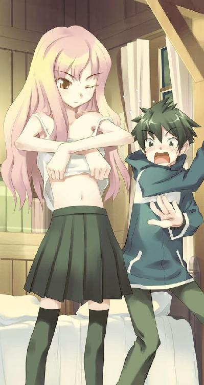
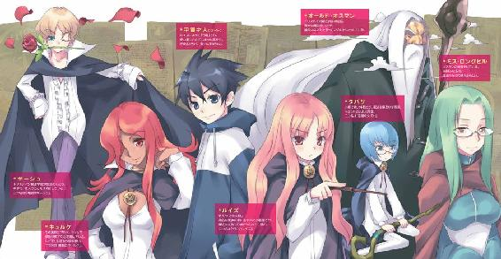
ＭＦ文庫Ｊ
ゼロの使い魔
ヤマグチノボル
口絵・本文イラスト●兎塚エイジ
魔法の国
第一章 俺は使い魔
「あんた誰？」
抜けるような青空をバックに、才人の顔をまじまじと覗き込んでいる女の子が言った。才人と年はあまり変わらない。黒いマントの下に、白いブラウス、グレーのプリーツスカートを着た体をかがめ、呆れたように覗き込んでいる。
顔は......。可愛い。桃色がかったブロンドの髪と透き通るような白い肌を舞台に、くりくりと鳶色の目が踊っている。ガイジンみたいだ。というかガイジンである。人形のように可愛いガイジンの娘さんである。いや、ハーフだろうか？
しかし、彼女が着ているのはどこの学校の制服だろう。見たことない。
才人はどうやら仰向けに地面に寝転んでいるらしい。顔を上げて辺りを見回す。
黒いマントをつけて、自分を物珍しそうに見ている人間がたくさんいた。豊かな草原が広がっている。遠くにヨーロッパの旅行写真で見たような、石造りの大きな城が見えた。
まるでファンタジーだ。
頭痛がする。才人は頭を振りながら言った。
「誰って......。俺は平賀才人」
「どこの平民？」
平民？ なんだそれは。周りを囲んだ少年少女たちも、彼女と同じような制服を着て、手に何か棒のようなものを持っている。
アメリカンスクールにでも迷い込んでしまったんだろうか。
「ルイズ、『サモン・サーヴァント』で平民を呼び出してどうするの？」
誰かがそう言うと、才人の顔をじっと覗き込んでいる少女以外の全員が笑った。
「ちょ、ちょっと間違っただけよ！」
才人の目の前の少女が、鈴のようによく通る上品な声で怒鳴った。
「間違いって、ルイズはいっつもそうじゃん」
「さすがはゼロのルイズだ！」
誰かがそう言うと、人垣がどっと爆笑する。
才人の顔をじっと覗き込んでいる女の子は、どうやらルイズというらしい。
とにかく、アメリカンスクールではないようだ。それらしい建物はどこにも見えない。
映画のセット？ なんかの撮影？ 才人は咄嗟にそう思った。
しかし、映画のセットにしてはだだっ広い。日本にこんな風景あったかなあ。いや、新しくできたテーマパークだろうか。でも、なんで俺はそんなところで寝ているんだろう。
「ミスタ・コルベール！」
ルイズと呼ばれた少女が怒鳴った。人垣が割れて、中年の男性が現れた。才人はおかしくなった。彼があんまりな格好だったからだ。
大きな木の杖を持ち、真っ黒なローブに身を包んでいる。なんだあの格好。
まるで、魔法使いじゃないかよ。大丈夫かこいつ。
わかった。ここは、なんかのコスプレ会場だ。
でも、それにしては、なんか雰囲気がヘンだ。
才人は急に怖くなった。宗教団体だったらどうしよう？ ありえる。こいつらは、ちょっと街を散歩していた俺を、なんらかの方法で眠らせ、こんなとこに連れてきたのだ。あの鏡みたいなものは、そのワナだったのだ。じゃないと説明がつかない。
才人はとりあえず、様子がわかるまでおとなしくしていようと思った。
ルイズと呼ばれた女の子は、必死になってまくし立てる。もう一回やらせてください、とか、お願いです、とか、そう言って腕をぶんぶん振っている。
この子、可愛いのに、妙な宗教にハマってるのか......、とちょっぴり哀れになる。
「なんだね。ミス・ヴァリエール」
「あの！ もう一回召喚させてください！」
召喚？
なんだそれ。さっきも言っていたけど。
ミスタ・コルベールと呼ばれた、黒いローブの男性は首を振った。
「それはダメだ。ミス・ヴァリエール」
「どうしてですか！」
「決まりだよ。二年生に進級する際、君たちは『使い魔』を召喚する。今、やっているとおりだ」
使い魔？
なんだそれ。
「それによって現れた『使い魔』で、今後の属性を固定し、それにより専門課程へと進むんだ。一度呼び出した『使い魔』は変更することはできない。何故なら春の使い魔召喚は神聖な儀式だからだ。好むと好まざるにかかわらず、彼を使い魔にするしかない」
「でも！ 平民を使い魔にするなんて聞いたことがありません！」
ルイズがそう言うと、再び周りがどっと笑う。ルイズは、その人垣を睨みつける。それでも笑いは止まない。
春の使い魔召喚？
なんだそれ。
意味がわからない。こいつらは、さっきから何を言っているんだろう。
......やっぱ妙な新興宗教なんだ。ヘンなところに来ちまったな......。さっさとチャンスを見つけて、逃げ出した方が無難だ。
ほんとのほんとに、いったいここはどこだろう。もしかしたら、外国にまで連れてこられてしまったのだろうか。拉致！ 拉致られた！
才人はほんとに困ったことになってしまったと思った。
「これは伝統なんだ。ミス・ヴァリエール。例外は認められない。彼は......」
中年の魔法使いコスプレさんは、才人を指差した。
「ただの平民かもしれないが、呼び出された以上、君の『使い魔』にならなければならない。古今東西、人を使い魔にした例はないが、春の使い魔召喚の儀式のルールはあらゆるルールに優先する。彼には君の使い魔になってもらわなくてはな」
「そんな......」
ルイズはがっくりと肩を落とした。
「さて、では、儀式を続けなさい」
「えー、彼と？」
「そうだ。早く。次の授業が始まってしまうじゃないか。君は召喚にどれだけ時間をかけたと思ってるんだね？ 何回も何回も失敗して、やっと呼び出せたんだ。いいから早く契約したまえ」
そうだそうだ、と野次が飛ぶ。
ルイズは才人の顔を、困ったように見つめた。
なんだなんだ。一体、何をされるんだ？
「ねえ」
ルイズは、才人に声をかけた。
「はい」
「あんた、感謝しなさいよね。貴族にこんなことされるなんて、普通は一生ないんだから」
貴族？ アホか。何が貴族だ。お前らはただの変態コスプレ新興宗教野郎じゃないかよ。
ルイズは、諦めたように目をつむる。
手に持った、小さな杖を才人の目の前で振った。
「我が名はルイズ・フランソワーズ・ル・ブラン・ド・ラ・ヴァリエール。五つの力を司るペンタゴン。この者に祝福を与え、我の使い魔となせ」
朗々と、呪文らしき言葉を唱え始めた。
すっと、杖を才人の額に置いた。
そして、ゆっくりと唇を近づけてくる。
「な、なにをする」
「いいからじっとしてなさい」
怒ったような声で、ルイズが言った。
ルイズの顔が近づく。
「ちょ、ちょっと、あの、俺、そんな、心の準備とか......」
慌てた。小刻みに顔が震える。
「ああもう！ じっとしてなさいって言ったじゃない！」
ルイズは才人の頭を左手でがっと掴んだ。
「え？」
「ん......」
ルイズの唇が、才人の唇に重ねられる。
な、なんだこいつ！ 契約ってキスのことだったのか！
柔らかい唇の感触が、才人をさらに混乱させる。
俺のファーストキス！ でも、こんなところで、こんなワケのわからんヤツに奪われるなんて！
才人は身動きもできずに、横たわっていた。
ルイズが唇を離す。
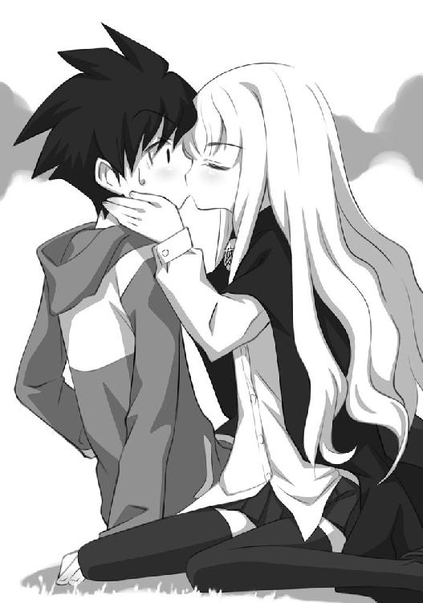
「終わりました」
顔を真っ赤にしている。生意気に照れているらしい。アホが、と思った。
「照れるのは俺だ。お前じゃない！ いきなりキスなんかしやがって！」
しかし、ルイズは才人をまるっきり無視した。キスしといてそれはないだろ。
ほんとにこいつらなんなんだ！ 怖い。早く家に帰りたい。家に帰ってインターネットがしたいと才人は思った。出会い系に登録したばかりである。メールのチェックがしたいのである。
「『サモン・サーヴァント』は何回も失敗したが、『コントラクト・サーヴァント』はきちんとできたね」
コルベールが、嬉しそうに言った。
「相手がただの平民だから、『契約』できたんだよ」
「そいつが高位の幻獣だったら、『契約』なんかできないって」
何人かの生徒が、笑いながら言った。
ルイズが睨みつける。
「バカにしないで！ わたしだってたまにはうまくいくわよ！」
「ほんとにたまによね。ゼロのルイズ」
見事な巻き髪とそばかすを持った女の子が、ルイズをあざ笑った。
「ミスタ・コルベール！ 『洪水』のモンモランシーがわたしを侮辱しました！」
「誰が『洪水』ですって！ わたしは『香水』のモンモランシーよ！」
「あんた小さい頃、洪水みたいなおねしょしてたって話じゃない。『洪水』の方がお似合いよ！」
「よくも言ってくれたわね！ ゼロのルイズ！ ゼロのくせになによ！」
「こらこら。貴族はお互いを尊重しあうものだ」
中年魔法使いコスプレさんが、二人を宥める。
一体、こいつら、何を言ってやがる。『契約』？ 『コントラクト・サーヴァント』？ そのとき、才人の体が妙に熱くなった。
「ぐあ！ ぐぁああああああ！」
才人は思わず立ち上がった。
「熱い！」
ルイズが、苛立たしそうな声で言った。
「すぐ終わるわよ。待ってなさいよ。『使い魔のルーン』が刻まれているだけよ」
「刻むな！ 俺の体に何をしやがった！」
こうなったら、おとなしく寝ていてもしかたがない。熱い！ 冗談じゃねえ！
「あのね？」
「なんだよ！」
「平民が、貴族にそんな口利いていいと思ってるの？」
しかし、熱いのはほんの一瞬だった。すぐに体は平静を取り戻した。
「はえ......」
膝をつく才人にコルベールと呼ばれている中年コスプレ魔法使いが近寄ってきて、才人の左手の甲を確かめる。
そこには、見慣れない文字が躍っている。っていうか、これは文字なんだろうか。ヘビがのたくっているような、見たことのない模様である。
才人も見つめた。手品じゃねえ、と思った。なんだこれ。
「ふむ......」
もう何がなんだかわからなかった。
「珍しいルーンだな」
中年魔法使いモドキがそう言った。
「なんなんだあんたら！」
才人は怒鳴ったが、誰も相手にしてくれない。
「さてと、じゃあ皆教室に戻るぞ」
中年コスプレ魔法使いはきびすを返すと、宙に浮いた。
口をあんぐりとあけて、才人はその様子を見つめた。
と、飛んだ？ 宙に浮いた？
ありえない。
他の生徒っぽい連中も、一斉に宙に浮いた。
もっとありえない。一人なら手品で浮くかもしれないが、全員である。
ワイヤーを探した。クレーン車を探した。しかし、周りはだだっ広い草原である。どこにもタネや仕掛けのようなものは見当たらない。
浮かんだ全員はすぅっと、城のような石造りの建物へ向かって飛んでいった。
「ルイズ、お前は歩いてこいよ！」
「あいつ『フライ』はおろか、『レビテーション』さえまともにできないんだぜ」
「その平民、あんたの使い魔にお似合いよ！」
口々にそう言って笑いながら飛び去っていく。
残されたのは、ルイズと呼ばれた女の子と才人だけになった。
ルイズは二人っきりになると、ため息をついた。それから才人の方を向いて、大声で怒鳴った。
「あんた、なんなのよ！」
才人はキレた。俺のセリフだ、と思った。
「お前こそなんなんだ！ ここはどこだ！ お前たちはなんなんだ！ なんで飛ぶ！ 俺の体に何をした！」
「ったく、どこの田舎から来たかしらないけど、説明してあげる」
「田舎？ 田舎はここだろうが！ 東京はこんなド田舎じゃねえぞ！」
「トーキョー？ なにそれ。どこの国？」
「日本」
「なにそれ。そんな国、聞いたことない」
「ふざけんな！ ちゅうかなんであいつら飛んでんの！ お前も見ただろ！ 飛んだよ！ あの人たち！」
しかし、ルイズはまったく動じない。飛ぶことのどこがおかしいの？ といった調子だった。
「そりゃ飛ぶわよ。メイジが飛ばなくてどうすんの」
「メイジ？ いったいここはどこだ！」
才人はルイズの肩を掴んで怒鳴った。
「トリステインよ！ そしてここはかの高名なトリステイン魔法学院！」
「魔法学院？」
「わたしは二年生のルイズ・ド・ラ・ヴァリエール。今日からあんたのご主人様よ。覚えておきなさい！」
才人の体から、力が抜けた。
なんか、物凄いイヤな予感がしたからだ。
「あの......、ルイズさんよ」
「なによ」
「ほんとに、俺、召喚されたの？」
「そう言ってるじゃない。何度も。口がすっぱくなるほど。もう、諦めなさい。わたしも諦めるから。はぁ、なんでわたしの使い魔、こんな冴えない生き物なのかしら......。もっとカッコいいのがよかったのに。ドラゴンとか。グリフォンとか。マンティコアとか。せめてワシとか。フクロウとか」
「ドラゴンとか、グリフォンとかって、どういうこと？」
「いや、それが使い魔だったらいいなあって。そういうことよ」
「そんなのホントにいるのかよ！」
「いるわよ。なんで？」
「うそだろ？」
才人は笑いながら言った。しかし、ルイズは笑わない。
「まあ、あんたは見たことないのかもしんないけど」
呆れた声で、ルイズが言った。冗談を言っているようには見えない。先ほどの飛んでいったメイジたちと、そのファンタジーな単語が結びつく。背筋が寒くなる。冷や汗が流れた。
「飛ぶからもしや......、と思ったんだけど、マジでお前ら魔法使い？」
「そうよ。わかったら、肩に置いた手を離しなさい！ 本来なら、あんたなんか口がきける身分じゃないんだからね！」
夢だ......。これは夢だ。
へなへなと腰から力がぬけ、才人は地面に膝をついた。
ぼんやりとした声で言った。
「ルイズ」
「呼び捨てにしないで」
「殴ってくれ」
「え？」
「思いっきり、俺の頭を殴ってくれ」
「なんで？」
「そろそろ夢から覚めたい。夢から覚めて、インターネットするんだ。今日の夕飯はハンバーグだ。今朝、母さんが言ってた」
「インターネット？」
「いや、いい。お前は所詮、俺の夢の住人なのだから、気にしなくていい。とにかく俺を夢から覚めさせてくれ」
「なんだかよくわからないけど、殴ればいいのね？」
ルイズは、拳を握り締めた。
「お願いします」
その拳を振り上げる。
ルイズの表情が、険しいものになった。色々と思うところがあったらしい。
「......なんであんたはのこのこ召喚されたの？」
「知るか」
「このヴァリエール家の三女が......。由緒正しい旧い家柄を誇る貴族のわたしが、なんであんたみたいなのを使い魔にしなくちゃなんないの？」
「知るか」
「......契約の方法が、キスなんて誰が決めたの？」
「知るか。いいから早くしろ。俺は悪夢は嫌いだ」
「悪夢？ こっちのセリフよ！」
ルイズは才人の頭を思いっきりぶん殴った。
「ファーストキスだったんだからね！」
ちょっと威力がありすぎたらしい。俺もそうだよと思いながら、才人は気絶した。
平賀才人。高校二年生の十七歳。
運動神経、普通。成績、中の中。彼女いない歴十七年。賞罰ナシ。
先生の評価は『ああ、平賀くんね。負けず嫌いで、好奇心が強いけど、ちょっとヌケてますね』。
親の評価は『もっと勉強しなさい。ヌケてんだから』。
ヌケているだけに、アクシデントに動じることが少なく、割となんでも受け入れるほうである。
先ほどは飛ぶ人間を見て大騒ぎをしたが、普通の人間なら腰を抜かすところをあの程度ですませたのは、そのような性格によるところが大きい。
悪くいえばあまり物事を深く考えない性質である。
そしてなかなか負けん気が強い。そういう意味では、先ほどのルイズと性格が似ているかもしれない。
そんな才人は、ほんの三十分前まで、きちんと地球は日本の東京の街を歩いていた。
ノートパソコンを修理して、家に帰る途中のことであった。ウキウキしていた。これでインターネットができる。出会い系に登録したばかりだった。彼女が見つかるかもしれない。彼は、平凡な毎日に刺激が欲しかったのだった。
しかし、刺激はインターネットの中ではなく、帰る途中に現れた。
駅から家に向かう途中、彼の前に突然光る鏡のようなものが現れたのである。
才人は立ち止まり、それをまじまじと見つめた。才人は人一倍、好奇心が強い。
高さは二メートルほど。幅は一メートルぐらいの楕円形をしている。厚みはない。よく見ると、ほんのわずか宙に浮いていた。
好奇心が騒いだ。これはなんの自然現象だろう、と、そのぴかぴか光る鏡（らしきもの）を見つめた。
どう見てもわからない。こんな自然現象は見たことも聞いたこともなかった。脇を通り過ぎようとしたが、持ち前の好奇心の強さが災いした。
それをくぐってみたくなったのである。
やめよう、と思った。すぐに、ほんのちょっとだけなら、に変わった。いけない性格である。
とりあえず石ころを拾い、それを投げてみた。
石ころは鏡（らしきもの）の中に消えた。
ほほう、と思った。鏡（らしきもの）の後ろを見ても、石ころはどこにもない。
次にポケットから家の鍵を取り出した。鍵の先っぽを、鏡（らしきもの）の中に入れてみた。
なんともない。
引き抜いて確かめたが、鍵には変わったところはなかった。才人はくぐってもおそらく危険はないと判断した。そう思ったら、くぐりたくてしかたがなくなった。
結局、やめようと思いつつ、彼はくぐってしまった。よし、今から勉強しようと思いながら、マンガをひろげてしまうあの心境に似ていた。
すぐに後悔した。激しいショックに襲われたからである。子供の頃、頭が良くなる装置と言って母が買ってきた、体に電流を流す機械のスイッチを入れたときのショックに似ていた。
才人は気絶した。そして、目を覚ますと......。
そこはファンタジーだったのである。
「それほんと？」
ルイズが、疑わしげに才人を見つめながら言った。手に、夜食のパンを握っている。
二人はテーブルを挟んだ椅子に腰掛けていた。
ルイズの部屋であった。十二畳ほどの大きさだ。窓を南向きとするなら、西側にベッドがおかれ、北側に扉があった。東に大きなタンスが置いてある。どれもこれも、高価なアンティークに見えた。
気絶から覚めた才人は、ここまでルイズに連れてこられたのである。
才人は痛む頭を撫で回しながら答えた。先ほど殴られた頭が痛い。
「嘘ついてどうする」
才人は今日ほど己の好奇心を恨めしく思ったことはない。
あんなモノ、くぐらなきゃよかった......。
ここは日本ではない。地球ですら、ない。
魔法使いがいて、空を飛ぶ国があるなんて、少なくとも中学の地理では習わなかった。
もし、あったとしても、空に浮かんだあのでかい月はなんだ。地球の夜空に浮かんだ月の、二倍は優にある。
でかいのはまだいい。もしかしたらどこかの国に、そういう夜もあるかもしれない。
でも、二つあるのはおかしい。才人が知らないうちに月は二つに増えたのだろうか。
違う。そんなわけない。つまり、ここは確実に地球ではない。
時刻は夜......。もう夜もふけてしまった。今頃、家族は心配しているだろうな、と、悲しくなった。
窓からは、夜空のほかに先ほど才人が寝転がっていた草原が見えた。月明かりに照らされ、その向こうに大きな山が見えた。右手には鬱蒼としげる森が見える。才人はため息をついた。日本で見る森とは完全に違う。こんな広い常緑樹の森は、日本にはない。
中世のお城のような、学院の敷地内を通り、ここまでやってきた。ただの旅行ならウキウキしてしまうような光景が広がっていた。
石でできたアーチの門、同じく石造りの重厚な階段......。
ここはトリステイン魔法学院だと、ルイズが説明した。
トリステイン魔法学院は全寮制の学校であるとのことだった。
魔法学院！ 素晴らしい！ 全寮制！ 素晴らしい！ そんな映画があったなあ！
でも、地球じゃない......。
「信じられないわ」
「俺だって信じられん」
「別の世界って、どういうこと？」
「魔法使いがいない。月は一つ」
「そんな世界がどこにあるの？」
「俺が元いたところはそうなんだよ！」
才人は怒鳴った。
「怒鳴らないでよ。平民の分際で」
「誰が平民だよ！」
「だって、あんたメイジじゃないんでしょ。だったら平民じゃない」
「なんだよそのメイジとか平民ってのは」
「もう、ほんとにあんた、この世界の人間なの？」
「だから違うって言ってるんですけど」
才人がそう言うと、ルイズはせつなそうにテーブルに肘をついた。
テーブルの上には、アールデコ調のカバーがついたランプが置いてある。ランプの中に淡い光が揺れて、部屋をぼんやりと照らしている。電気はないようだ。
まったく、手が込んでいるつくりじゃないか。昔家族で旅行に行った、異人館の中のようだ。
つくり？
そうか。これは......。
「わかった」
「何がわかったの？」
ルイズが顔を上げる。
「ドッキリだな。ドッキリテレビだ。皆して、俺をはめようとしてる。そうだな？」
「ドッキリってなによ」
「怪我人が出て中止になっていたが、最近ネタがなくなって始めやがったな。カメラはどこだ！」
「何言ってるのよ」
才人はルイズに飛びかかった。
「きゃあ！ なにすんのよ！」
椅子を蹴倒し、ルイズにのしかかる。
「マイクはどこだ！ ここか？」
暴れるルイズを押さえつけ、ブラウスのボタンを外そうとした。しかし、したたかに股間を蹴り上げられ、才人は地面にうずくまる。
「ほぁあああああああ......」
「よ、よくも、貴族のわたしに......」
ルイズはわなわなと震えながら、立ち上がった。
激しい痛みで、才人は思う。
これは夢じゃない。
そして......、ここは、地球じゃない。どこか、別の世界なんだ。
「お願いだ......」
「なによ！」
「家に帰して......」
「無理」
「どうしてだよ......」
「だって、あんたはわたしの使い魔として、契約しちゃったのよ。あんたがどこの田舎モノだろうが、別の世界とやらから来た人間だろうが、一回使い魔として契約したからには、もう動かせない」
「ふざけんな......」
「わたしだってイヤよ！ なんであんたみたいなのが使い魔なのよ！」
「だったら帰してくれよ......」
「ほんとに、別の世界から来たっていうの？」
困ったように、ルイズは言った。
「ああ」
才人は頷いた。
「なんか証拠を見せてよ」
才人は痛む股間を押さえて立ち上がる。そして、鞄をあけた。
「なにこれ」
「ノートパソコン」
才人は言った。
修理したばかりのノートパソコンが、ピカピカ光っている。
「確かに、見たことがないわね。なんのマジックアイテム？」
「魔法じゃない。科学だ」
才人はスイッチを入れた。ブーンとうなり、ノートパソコンが起動する。
「うわあ、なにこれ？」
現れた画面を見て、ルイズが驚いた声をあげた。
「ノートパソコンの画面」
「綺麗ね......。何の系統の魔法で動いてるの？ 風？ 水？」
「科学だ」
きょとんとした顔で、ルイズが才人を覗き込む。無邪気な表情だ。
「カガクって、何系統？ 四系統とは違うの？」
「ああもう！ とにかく魔法じゃない！」
才人は手をぶんぶんと振った。
ルイズは深くベッドに座り込むと、足をぶらぶらさせた。両手を広げ、澄ました顔で言った。
「ふーん、でも、これだけじゃ、わかんないわよ」
「どうして？ こんなもの、こっちの世界にあるのかよ」
ルイズは唇を尖らせた。
「ないけど......」
「だったら信じろよ！ わからずや！」
長い髪を振り乱し、ルイズは頭を振った。
「わかったわよ！ 信じるわ！」
「ほんと？」
腕を組んで、くいっと首をかしげ、ルイズは怒鳴る。
「だって、そう言わないと、あんたしつこいんだもん！」
「まあ、何にせよ、わかってくれればいいんだ。じゃあ、帰して？」
「無理よ」
「どうして！」
ルイズは困った顔で、才人に告げた。
「だって、あんたの世界と、こっちの世界を繋ぐ魔法なんてないもの」
「じゃあどうして俺はやってこれたんだよ！」
「そんなの知らないわよ！」
才人とルイズは睨みあった。
「あのね、ほんとのほんとに、そんな魔法はないのよ。大体、別の世界なんて聞いたことがないもの」
「召喚しといてそれはないだろ！」
「召喚の魔法、つまり『サモン・サーヴァント』は、ハルケギニアの生き物を呼び出すのよ。普通は動物や幻獣なんだけどね。人間が召喚されるなんて初めて見たわ」
「他人事みたいに言うな。だったら、もう一度、その召喚の魔法を俺にかけろ」
「どうして？」
「元に戻れるかもしれないだろ？」
ルイズは、一瞬悩んだ顔になったあと、首を振った。
「......無理よ。『サモン・サーヴァント』は呼び出すだけ。使い魔を元に戻す呪文なんて存在しないのよ」
「いいからやってみろよ」
「不可能。今は唱えることもできないわ」
「どうして！」
「......『サモン・サーヴァント』を再び使うにはね」
「うん」
「一回呼び出した使い魔が、死なないといけないの」
「なんですと？」
才人は固まった。
「死んでみる？」
「いや、いい......」
才人はうなだれた。
左手の甲に描かれた、ルーン文字を見つめた。
「ああ、それね」
「うん」
「わたしの使い魔ですっていう、印みたいなものよ」
ルイズは立ち上がると、腕を組んだ。
よく見ると、ほんとに可愛らしい。すらりと伸びた足、細い足首。背はそんなに高くない。百五十五センチといったところだろうか。
目は子猫みたいによく動く。生意気そうな眉が、目の上の微妙なラインを走っている。
出会ったのが出会い系の掲示板なら跳び上がって喜んだかもしれない。でも、ここは地球じゃない。帰りたいけど帰れない。才人はせつなくなって、がっくりと肩を落とした。
「......わかった。しばらくはお前の使い魔とやらになってやる」
「なによそれ」
「なんだよ。文句あんのかよ」
「口の利き方がなってないわ。『なんなりとお申しつけください、ご主人様』でしょ？」
ルイズは得意げに指を立てて言った。可愛い仕草だけど、言ってることは厳しかった。
「でもよー、使い魔ってなにすんの？」
才人は尋ねた。確かに、魔法使いが出てくるアニメとかで、カラスやフクロウが出てくるのを見たことがある。でもあいつらは大体肩に乗ってるだけで、具体的には何もしなかった記憶が......。
「まず、使い魔は主人の目となり、耳となる能力を与えられるわ」
「どういうこと？」
「使い魔が見たものは、主人も見ることができるのよ」
「はぁ」
「でも、あんたじゃ無理みたいね。わたし、何にも見えないもん！」
「君、ついてないなあ」
才人はぼけっとした声で言った。
「それから、使い魔は主人の望むものを見つけてくるのよ。例えば秘薬とかね」
「秘薬ってなに？」
「特定の魔法を使うときに使用する触媒よ。硫黄とか、コケとか......」
「はぁ」
「あんた、そんなの見つけてこれないでしょ！ 秘薬の存在すら知らないのに！」
「無理だ」
ルイズは苛立たしそうに言葉を続けた。
「そして、これが一番なんだけど......、使い魔は、主人を守る存在であるのよ！ その能力で、主人を敵から守るのが一番の役目！ でも、あんたじゃ無理ね......」
「人間だもん......」
「......強い幻獣だったら、並大抵の敵には負けないけど、あんたはカラスにも負けそうじゃない」
「うっせ」
「だから、あんたにできそうなことをやらせてあげる。洗濯。掃除。その他雑用」
「ふざけんな。そのうち絶対帰る方法を見つけてやるからな！」
「はいはい。そうしてくれるとありがたいわ。あんたが別の世界とやらに消えれば、わたしだって次の使い魔を召喚できるもの」
「この野郎......」
「さてと、しゃべったら、眠くなっちゃったわ」
ルイズはあくびをした。
「俺はどこで寝ればいいんだよ」
ルイズは、床を指差した。
「犬や猫じゃないんだけど」
「しかたないでしょ。ベッドは一つしかないんだから」
ルイズはそれでも毛布を一枚投げてよこした。
それから、ブラウスのボタンに手をかける。
一個ずつ、ボタンを外していく。
下着があらわになる。才人は慌てた。
「なな、なにやってんだよ！」
きょとんとした声で、ルイズが言った。
「寝るから、着替えるのよ」
「俺のいないところで着替えろよ！」
「なんで？」
「だ、だってね。まずいだろ！ やっぱ！」
「まずくないわよ」
「魔法使いって、そうなの？ 男に見られても平気なの？」
「男？ 誰が？ 使い魔に見られたって、なんとも思わないわ」
なんだよそれ。まるで犬か猫扱いだ。才人は毛布を引っつかむと、頭からかぶって横になった。
とりあえず、さっき可愛いと思ったことは取り消すことにした。気に入らない。こんなヤツの使い魔だって？ 冗談じゃない。
「じゃあ、これ、明日になったら洗濯しといて」
ぱさっ、ぱさっと何かが飛んできた。
なんだろう、と思ってそれを取り上げる。
レースのついたキャミソールに、パンティであった。白い。精巧で緻密なつくりをしているなあ、と熱した頭で考える。屈辱と歓喜が入り混じった感情が溢れ、それを握り締める。
「なんで俺がお前の下着を！ 洗濯！ 嬉しいけどふざけるな！」
思わず立ち上がる。ルイズは、大きめのネグリジェを頭からかぶろうとしていた。淡いランプの光に、ルイズの肢体があらわになっている。薄暗いのではっきりとは見えないけど。でも、ほんとに恥ずかしくないようだった。なんか悔しい。男として否定された気分だった。
「誰があんたを養うと思ってるの？ 誰があんたのご飯を用意すると思ってるの？ ここ誰の部屋？」
「うぐ」
「あんたはわたしの使い魔でしょ？ 洗濯、掃除、雑用、当然じゃないの」
才人は再び毛布にくるまった。
ダメだコイツは。根っから俺を男と思ってない。
帰りたい。自分の部屋が恋しい。両親が恋しい。
ホームシックが襲ってくる。
......ほんとに帰れるのだろうか。
帰る方法はあるんだろうか。
今頃、家族は心配してるだろうな......。
とにかく、なんとか帰る方法を見つけないと......。
どうすればいいんだろう。とりあえずここから逃げ出そうか。逃げ出してどうする。
誰かに尋ねてみようか。でも、ルイズとのさっきの会話を思い出すと、別の世界の存在なんて、誰も信用してくれそうにない。
冷静になって考えてみた。とにかく、じたばたしても始まらない。手がかりはなんにもないし、ここから逃げ出したところで帰る方法が見つかる保証はない。
この世界には身よりもない。ルイズとかいう、生意気な女の子しか、頼れる人間はいないのだ。
しかたない。とりあえず、コイツの使い魔として、やっていこう。飯ぐらいは食わせてくれるらしい。せつないけど、コイツにとっちゃ俺は使い魔なんだからな！
生意気だけどまあまあ可愛いし、ガールフレンドができたと思えばいい。出会い系でついつい出会ってしまったと思えばいい。会いに行ったら外国でしたと思えばいい。ついでに留学しますと思えばいい。そう思い込め。思い込め。思い込んだ。俺って単純。偉い。
よし、と思った。無人島に流されたワケじゃない。くよくよしても始まらない。
使い魔として生活しつつ、なんとか元の世界に帰る方法を見つける。
そうと決めたら、眠くなってきた。
よくも悪くも、順応性の高い才人の性格が、彼を守った。普通の人間なら、パニックに陥るところを、才人は持ち前の流されやすい性格で切り抜けた。
ルイズが、ぱちんと指を弾くと、ランプの灯りが消えた。
ランプまで魔法かよ。確かにこれなら電気はいらんなあ、と間抜けなことを思った。
部屋に、真っ暗な夜の帳がおりる。
窓の外には月が二個、怪しく光っていた。
母さん、才人は魔法使いがいる世界にやってきてしまいました。しばらく学校にも行けません。勉強もできません。勘弁してください。
才人の使い魔としての生活が始まった。
第二章 ゼロのルイズ
才人が目覚めて、初めて目にしたものは、昨晩ルイズが投げてよこした下着であった。目の前に転がっていた。それを忌々しく放り投げる。
ルイズは、ベッドの中で寝息を立てている。あどけない寝顔であった。こうして見ると、自分より幾分幼く見える。しゃべると貴族だ魔法使いだなんだとうるさい小娘だが、寝ている分には可愛かった。そのまま一生寝てればいいのにと思った。
でもって落ち込んでみた。やっぱり昨日のことは夢ではないのだ。一晩寝たら自分の部屋でした、なんてことはなかった。せつなくなった。
しかし、すがすがしい朝である。眩いばかりの光が部屋に差し込んでいる。
朝の光に助けられ、持ち前の好奇心の強さがむくむくと膨れ上がる。考えてみれば、ちょっとした観光ではないか。この世界はどんな世界なんだろう。そこでぐーすか寝ている生意気魔法使い少女の使い魔というのが気に入らないが、どうせなら楽しんでやろう。そんな風に思った。
とりあえず、寝ているルイズの毛布をはいだ。
「な、なによ！ なにごと！」
「朝だよ。お嬢様」
「はえ？ そ、そう......。って誰よあんた！」
ルイズは寝ぼけた声で怒鳴った。ふにゃふにゃの顔が痛々しい。大丈夫かこいつ。
「平賀才人」
「ああ、使い魔ね。そうね、昨日、召喚したんだっけ」
ルイズは起き上がると、あくびをした。そして才人に命じる。
「服」
椅子にかかった制服を、放り投げた。ルイズはだるそうにネグリジェを脱ぎ始めた。
才人は顔を赤くしてそっぽを向いた。
「下着」
「じ、自分でとれっつの」
「そこのー、クローゼットのー、一番下の引き出しに入ってる」
とことん才人を使い倒すつもりのようだ。
舌打ちして、クローゼットの引き出しをあけた。なるほど、中に下着がたくさん入っていた。母以外の女性の下着をナマで見るのは初めてだ。適当に引っつかんで、後ろを見ないで放り投げた。
下着を身につけたルイズが、再びだるそうに呟く。
「服」
「さっき渡しただろ」
「着せて」
ナメんな、と怒鳴って振り向いた。下着姿のルイズが気だるそうにベッドに座っていた。目のやり場に困る。
ルイズは唇を尖らせて言った。
「平民のあんたは知らないだろうけど、貴族は下僕がいる時は自分で服なんて着ないのよ」
むかついた。
「服ぐらい、自分で着ろっつの」
「あっそ。生意気な使い魔にはお仕置き。朝ごはんヌキね」
ルイズは指を立て、勝ち誇ったように言った。
才人はしぶしぶルイズのブラウスを手に取った。
ルイズと部屋を出ると、似たような木でできたドアが壁に三つ並んでいた。そのドアの一つが開いて、中から燃えるような赤い髪の女の子が現れた。ルイズより背が高く、才人と大して変わらない身長だ。むせるような色気を放っている。彫りが深い顔に、突き出たバストが艶かしい。メロンみたいである。
一番上と二番目のブラウスのボタンを外し、胸元を覗かせている。その谷間に思わず目が行ってしまう。褐色の肌が、健康そうでプリミティブな色気を振りまいている。
身長、肌の色、雰囲気、胸の大きさ......、全部がルイズと対照的だった。魅力的であることには変わりがなかったが。
彼女はルイズを見ると、にやっと笑った。
「おはよう。ルイズ」
ルイズは顔をしかめると、嫌そうに挨拶を返した。
「おはよう。キュルケ」
「あなたの使い魔って、それ？」
才人を指差して、バカにした口調で言った。
「そうよ」
「あっはっは！ ほんとに人間なのね！ すごいじゃない！」
才人はせつなくなった。人間で悪かったな。そういうお前はなんだ。キュルケの胸を見つめた。ただのおっぱい星人じゃないか。おおお、おっぱい星人じゃないか。食い入るように見つめつつ、才人は思った。
「『サモン・サーヴァント』で、平民喚んじゃうなんて、あなたらしいわ。さすがはゼロのルイズ」
ルイズの白い頬に、さっと朱がさした。
「うるさいわね」
「あたしも昨日、使い魔を召喚したのよ。誰かさんと違って、一発で呪文成功よ」
「あっそ」
「どうせ使い魔にするなら、こういうのがいいわよねぇ～。フレイムー」
キュルケは、勝ち誇った声で使い魔を呼んだ。キュルケの部屋からのっそりと、真っ赤で巨大なトカゲが現れた。むんとした熱気が、才人を襲う。
「うわぁ！ 真っ赤な何か！」
才人は慌てて後じさった。
キュルケが笑う。
「おっほっほ！ もしかして、あなた、この火トカゲを見るのは初めて？」
「鎖につないどけよ！ 危ないじゃないか！ っていうか何これ！」
「平気よ。あたしが命令しない限り、襲ったりしないから。臆病ちゃんね」
キュルケは手を顎にそえ、色っぽく首をかしげた。
大きさは、トラほどもあるだろうか。尻尾が燃え盛る炎でできていた。チロチロと口からほとばしる火炎が熱そうだ。
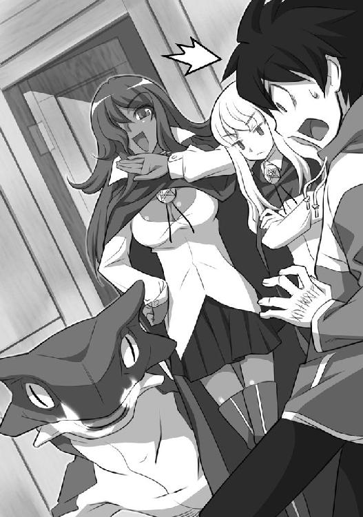
「そばにいて、熱くないの？」
才人が尋ねた。落ち着いて見つめる。すげえ。モンスターだー。ファンタジーだー。
「あたしにとっては、涼しいぐらいね」
「これって、サラマンダー？」
ルイズが悔しそうに尋ねた。
「そうよー。火トカゲよー。見て？ この尻尾。ここまで鮮やかで大きい炎の尻尾は、間違いなく火竜山脈のサラマンダーよ？ ブランドものよー。好事家に見せたら値段なんかつかないわよ？」
「そりゃよかったわね」苦々しい声でルイズが言った。
「素敵でしょ。あたしの属性ぴったり」
「あんた『火』属性だもんね」
「ええ。微熱のキュルケですもの。ささやかに燃える情熱は微熱。でも、男の子はそれでイチコロなのですわ。あなたと違ってね？」
キュルケは得意げに胸を張った。ルイズも負けじと胸を張り返すが、悲しいかな、ボリュームが違いすぎる。
ルイズはそれでもぐっとキュルケを睨みつけた。かなりの負けず嫌いのようだ。
「あんたみたいにいちいち色気振りまくほど、暇じゃないだけよ」
キュルケはにっこりと笑った。余裕の態度だった。それから才人を見つめる。
「あなた、お名前は？」
「平賀才人」
「ヒラガサイト？ ヘンな名前」
「やかまし」
「じゃあ、お先に失礼」
そう言うと、炎のような赤髪をかきあげ、颯爽とキュルケは去っていった。ちょこちょこと、大柄な体に似合わない可愛い動きで、サラマンダーがその後を追う。
キュルケがいなくなると、ルイズは拳を握り締めた。
「くやしー！ なんなのあの女！ 自分が火竜山脈のサラマンダーを召喚したからって！ ああもう！」
「いいじゃねえかよ。召喚なんかなんだって」
「よくないわよ！ メイジの実力をはかるには使い魔を見ろって言われているぐらいよ！ なんであのバカ女がサラマンダーで、わたしがあんたなのよ！」
「悪かったな。人間様で。でも、お前らだって人間じゃないかよ」
「メイジと平民じゃ、オオカミと犬ほどの違いがあるのよ」
ルイズは得意げに言った。
「......はいはい。ところで、あいつ、ゼロのルイズって言ってたけど、『ゼロ』ってなに？ 苗字？」
「違うわよ！ わたしの名前はルイズ・ド・ラ・ヴァリエール。ゼロはただのあだ名よ」
「あだ名か。あいつが微熱ってのはなんとなくわかったけど。お前はどうしてゼロなの？」
「知らなくていいことよ」
ルイズはバツが悪そうに言った。
「むね？」
才人はルイズの胸を見つめて言った。いやぁ、見事にぺったんこだった。
ルイズの平手が飛んできた。それをかわす。
「かわすな！」
「殴んな！」
平手？
才人の頭の中に、閃くものがあった。
こいつ、そういえば......。
昨日、皆が飛んでいったときも、歩いて帰った。
昨夜、飛びかかったときも、股座を蹴り上げた。
本気で才人を懲らしめたいなら、殴ったり、蹴ったりするより、魔法を使えばいいではないか。その方が確実だし、魔法使いっぽいじゃないか。
どうしてだろう、と才人は思った。
トリステイン魔法学院の食堂は、学園の敷地内で一番背の高い、真ん中の本塔の中にあった。食堂の中にはやたらと長いテーブルが三つ、並んでいる。百人は優に座れるだろう。二年生のルイズたちのテーブルは、真ん中だった。
どうやらマントの色は学年で決まるらしい。食堂の正面に向かって左隣のテーブルに並んだ、ちょっと大人びた感じのメイジたちは、全員紫色のマントをつけていた。三年生だろうか。
右隣のテーブルのメイジたちは、茶色のマントを身につけている。おそらく一年生だろう。学年別ジャージみたいだ、と才人は思った。
朝食、昼食、夕食と、学院の中にいるすべてのメイジたち......、生徒も先生もひっくるめて......、はここで食事を取るらしい。
一階の上にロフトの中階があった。先生メイジたちが、そこで歓談に興じているのが見えた。
すべてのテーブルに豪華な飾り付けがなされている。
いくつものローソクが立てられ、花が飾られ、フルーツが盛られた籠がのっている。
才人が食堂の豪華絢爛さに驚いて、口をぽかんとあけているのに気づくと、得意げに指を立て、ルイズが言った。鳶色の目が、イタズラっぽく輝いた。
「トリステイン魔法学院で教えるのは、魔法だけじゃないのよ」
「はぁ」
「メイジはほぼ全員が貴族なの。『貴族は魔法をもってしてその精神となす』のモットーのもと、貴族たるべき教育を、存分に受けるのよ。だから食堂も、貴族の食卓にふさわしいものでなければならないのよ」
「はぁ」
「わかった？ ホントならあんたみたいな平民はこの『アルヴィーズの食堂』には一生入れないのよ。感謝してよね」
「はぁ。アルヴィーズってなに？」
「小人の名前よ。周りに像がたくさん並んでいるでしょう」
言葉のとおり、壁際には精巧な小人の彫像が並んでいる。
「よくできてるな。あれ、夜中に動いたりしないよな？」
「よく知ってるわね」
「動くのかよ！」
「っていうか踊ってるわ。いいから、椅子をひいてちょうだい。気の利かない使い魔ね」
腕を組んでルイズが言った。首をくいっとかしげると、桃色がかったブロンドの長い髪が揺れた。しかたない。レディファーストである。才人はルイズのために椅子をひいてやった。
ルイズは礼も言わずに腰掛ける。才人も自分の椅子を引き出して座った。
「すげえ料理だな！」
才人は大声をあげた。朝から無駄に豪華である。でかい鳥のローストが、才人を威圧する。他にもワインやら、鱒の形をしたパイなどが並んでいる。
「こんなに食べられないよ。俺！ 参ったな！ ええおい！ お嬢様！」
ルイズの肩をぽんぽんと叩く。ルイズがじっと睨んでいることに気づいた。
「なにか？」
才人は怪訝に思って聞いてみた。しかし、ルイズは才人を睨んだままだ。
「ああ、はしゃぎすぎだな。俺。貴族らしくしないとな！ 貴族じゃないけどな！」
ルイズは床を指差した。そこに、皿が一枚置いてある。
「皿があるね」
「あるわね」
「なんか貧しいものが入ってるね」
ルイズは頬杖をついて言った。
「あのね？ ほんとは使い魔は、外。あんたはわたしの特別な計らいで、床」
才人はぼけっと床に座り込み、目の前に置かれた皿を見つめていた。申し訳程度に小さな肉のかけらが浮いたスープが揺れている。皿の端っこに硬そうなパンが二切れ、ぽつんと置いてあった。
テーブルの上を、首を伸ばして覗き込んだ。
先ほど眺めただけの豪華な料理が並んでいる。自分の皿と比べてみると、せつなくなった。
「偉大なる始祖ブリミルと女王陛下よ。今朝もささやかな糧を我に与えたもうたことを感謝いたします」
祈りの声が、唱和される。ルイズも目をつむってそれに加わっている。
才人はテーブルの上に並んだ料理を見て思った。どこが「ささやかな糧」ですか。随分豪華なくせしやがって。ささやかな糧はこっちじゃないか。俺の目の前に置かれた皿はなんだ。これではペット以下ではないか。日本のペットは、もう少しマシなものを食べてますよーと、抗議したくなった。
こんな虐待は許せないので、そっとテーブルの上に手を伸ばした。その手がルイズに叩かれる。才人は恨めしそうにルイズを見上げた。
「何してんのよ」
「鳥よこせ。少しでいいから」
「まったく......」
ルイズはぶつくさ言いながら、鳥の皮をはぐと、才人の皿に落とした。
「肉は？」
「癖になるからダメ」
ルイズはおいしそうに豪華な料理をほお張り始めた。
「ああ、うまい。うまい。泣けそうだ」
才人は硬いパンを齧りながら呟いた。
魔法学院の教室は、大学の講義室のようだった。それが石でできていると思ってもらえば、大体当たっている。講義を行う魔法使いの先生が、一番下の段に位置し、階段のように席が続いている。才人とルイズが中に入っていくと、先に教室にやってきていた生徒たちが一斉に振り向いた。
そしてくすくすと笑い始める。先ほどのキュルケもいた。周りを男子が取り囲んでいた。なるほど、男の子がイチコロというのはホントだったようだ。周りを囲んだ男子どもに、女王のように祭り上げられている。まあ、あの胸ではしかたがない。巨乳はどの世界でも共通言語のようだ。
皆、様々な使い魔を連れていた。
キュルケのサラマンダーは、椅子の下で眠り込んでいる。肩にフクロウを乗せている生徒もいた。窓から巨大なヘビがこちらを覗いている。男子の一人が、口笛を吹くと、そのヘビは頭を隠した。カラスもいた。猫もいた。
でも、目を引いたのは、才人の世界では架空の生物だった生き物たちだった。才人は感動した。驚くような生き物たちが、その辺をひょこひょこと動いているではないか！
六本の足を持つトカゲがいた。あれは確か......。才人は乏しいファンタジー知識をあさった。バシリスクだ！ ゲームに出てきた。巨大な目の玉がぷかぷかと浮いている。あれはなんだろう。ルイズに尋ねた。
「あの目の玉のお化けはなに？」
「バグベアー」
「あの、蛸人魚はなに？」
「スキュア」
ルイズは不機嫌な声で答えて、席の一つに腰かけた。才人も隣に座った。ルイズが睨む。
「なんだよ」
「ここはね、メイジの席。使い魔は座っちゃダメ」
才人は憮然として、床に座った。朝食もテーブルでは食わせてもらえなかった。机が目の前にあるので窮屈だ。こんなトコに座ってられんと思い、再び椅子に座った。
ルイズはちらっと才人を見たけど、今度は何も言わなかった。
扉が開いて、先生が入ってきた。
中年の女の人だった。紫色のローブに身を包み、帽子を被っている。ふくよかな頬が、優しい雰囲気を漂わせている。
「あのおばさんも魔法使い？」才人はルイズに呟いた。
「当たり前じゃない」ルイズは呆れた声で言った。
彼女は教室を見回すと、満足そうに微笑んで言った。
「皆さん。春の使い魔召喚は、大成功のようですわね。このシュヴルーズ、こうやって春の新学期に、様々な使い魔たちを見るのがとても楽しみなのですよ」
ルイズは俯いた。
「おやおや。変わった使い魔を召喚したものですね。ミス・ヴァリエール」
シュヴルーズが、才人を見てとぼけた声で言うと、教室中がどっと笑いに包まれた。
「ゼロのルイズ！ 召喚できないからって、その辺歩いてた平民を連れてくるなよ！」
ルイズは立ち上がった。長い、ブロンドの髪を揺らして、可愛らしく澄んだ声で怒鳴る。
「違うわ！ きちんと召喚したもの！ こいつが来ちゃっただけよ！」
「嘘つくな！ 『サモン・サーヴァント』ができなかったんだろう？」
ゲラゲラと教室中の生徒が笑う。
「ミセス・シュヴルーズ！ 侮辱されました！ かぜっぴきのマリコルヌがわたしを侮辱したわ！」
握り締めた拳で、ルイズは机を叩いた。
「かぜっぴきだと？ 俺は風上のマリコルヌだ！ 風邪なんか引いてないぞ！」
「あんたのガラガラ声は、まるで風邪も引いてるみたいなのよ！」
マリコルヌと呼ばれた男子生徒が立ち上がり、ルイズを睨みつける。シュヴルーズ先生が手に持った小ぶりな杖を振った。立ち上がった二人は糸の切れた操り人形のように、すとんと席に落ちた。
「ミス・ヴァリエール。ミスタ・マリコルヌ。みっともない口論はおやめなさい」
ルイズはしょぼんとうなだれている。さっきまで見せていた生意気な態度が吹っ飛んでいた。
「お友達をゼロだのかぜっぴきだの呼んではいけません。わかりましたか？」
「ミセス・シュヴルーズ。僕のかぜっぴきはただの中傷ですが、ルイズのゼロは事実です」
くすくす笑いが漏れる。
シュヴルーズは、厳しい顔で教室を見回した。そして、杖を振った。くすくす笑いをする生徒たちの口に、どこから現れたものか、ぴたっと赤土の粘土が押しつけられる。
「あなたたちは、その格好で授業を受けなさい」
教室のくすくす笑いがおさまった。
「では、授業を始めますよ」
シュヴルーズは、こほんと重々しく咳をすると、杖を振った。机の上に、石ころがいくつか現れた。
「私の二つ名は『赤土』。赤土のシュヴルーズです。『土』系統の魔法を、これから一年、皆さんに講義します。魔法の四大系統はご存知ですね？ ミスタ・マリコルヌ」
「は、はい。ミセス・シュヴルーズ。『火』『水』『土』『風』の四つです！」
シュヴルーズは頷いた。
「今は失われた系統魔法である『虚無』を合わせて、全部で五つの系統があることは、皆さんも知ってのとおりです。その五つの系統の中で『土』はもっとも重要なポジションを占めていると私は考えます。それは、私が『土』系統だから、というわけではありませんよ。私の単なる身びいきではありません」
シュヴルーズは再び、重々しく咳をした。
「『土』系統の魔法は、万物の組成を司る、重要な魔法であるのです。この魔法がなければ、重要な金属を作り出すこともできないし、加工することもできません。大きな石を切り出して建物を建てることもできなければ、農作物の収穫も、今より手間取ることでしょう。このように、『土』系統の魔法は皆さんの生活に密接に関係しているのです」
才人は、ははぁ、と思った。こっちの世界では、どうやら魔法が才人の世界でいう科学技術に相当するらしい。ルイズが、魔法使いというだけで、威張っている理由がなんとなくわかった。
「今から皆さんには『土』系統の魔法の基本である、『錬金』の魔法を覚えてもらいます。一年生のときにできるようになった人もいるでしょうが、基本は大事です。もう一度、おさらいすることに致します」
シュヴルーズは、石ころに向かって、手に持った小ぶりな杖を振り上げた。
そして短くルーンを呟くと、石ころが光りだした。
光がおさまり、ただの石ころだったそれはピカピカ光る金属に変わっていた。
「ゴゴ、ゴールドですか？ ミセス・シュヴルーズ！」
キュルケが身を乗り出した。
「違います。ただの真鍮です。ゴールドを錬金できるのは『スクウェア』クラスのメイジだけです。私はただの......」
こほんと、もったいぶった咳をして、シュヴルーズは言った。
「『トライアングル』ですから......」
「ルイズ」
才人はルイズをつついた。
「なによ。授業中よ」
「スクウェアとか、トライアングルとかって、どういうこと？」
「系統を足せる数のことよ。それでメイジのレベルが決まるの」
「はい？」
ルイズは小さい声で才人に説明した。
「例えばね？ 『土』系統の魔法はそれ単体でも使えるけど、『火』の系統を足せば、さらに強力な呪文になるの」
「なるほど」
「『火』『土』のように、二系統を足せるのが、『ライン』メイジ。シュヴルーズ先生みたいに、『土』『土』『火』、三つ足せるのが『トライアングル』メイジ」
「同じの二つ足してどうすんの？」
「その系統がより強力になるわ」
「なるほど。つまり、あそこでくっちゃべってる先生メイジは『トライアングル』だから、強力なメイジというわけだね？」
「そのとおりよ」
「ルイズはいくつ足せるの？」
ルイズは黙ってしまった。
そんな風にしゃべっていると、シュヴルーズ先生に見咎められた。
「ミス・ヴァリエール！」
「は、はい！」
「授業中の私語は慎みなさい」
「すいません......」
「おしゃべりをする暇があるのなら、あなたにやってもらいましょう」
「え？ わたし？」
「そうです。ここにある石ころを、望む金属に変えてごらんなさい」
ルイズは立ち上がらない。困ったようにもじもじするだけだ。
「ご指名だろ。行ってこいよ」と才人が促した。
「ミス・ヴァリエール！ どうしたのですか？」
シュヴルーズ先生が再び呼びかけると、キュルケが困った声で言った。
「先生」
「なんです？」
「やめといた方がいいと思いますけど......」
「どうしてですか？」
「危険です」
キュルケは、きっぱりと言った。教室のほとんど全員が頷いた。
「危険？ どうしてですか？」
「ルイズを教えるのは初めてですよね？」
「ええ。でも、彼女が努力家ということは聞いています。さぁ、ミス・ヴァリエール。気にしないでやってごらんなさい。失敗を恐れていては、何もできませんよ？」
「ルイズ。やめて」
キュルケが蒼白な顔で言った。
しかし、ルイズは立ち上がった。
「やります」
そして、緊張した顔で、つかつかと教室の前へと歩いていった。
隣に立ったシュヴルーズはにっこりとルイズに笑いかけた。
「ミス・ヴァリエール。錬金したい金属を、強く心に思い浮かべるのです」
こくりと可愛らしく頷いて、ルイズが手に持った杖を振り上げた。
唇を軽くへの字に曲げ、真剣な顔で呪文を唱えようとするルイズはこの世のものとは思えないほどに愛らしい。本性を知っていても、才人はぐっときてしまう。
窓から差し込む朝の光に、ルイズの桃色がかったブロンドが光っている。宝石のような鳶色の瞳。抜けるような白い肌。高貴さを感じさせるつくりのいい鼻......。
あれで、もう少し優しいところと胸があれば、完璧なのになあ、もったいねえなあ、いくら可愛くてもあの性格じゃ願い下げだなあ、と才人は思った。
しかし、そんな才人の感想とは裏腹に、何故か前の席に座っていた生徒は椅子の下に隠れた。あんなに可愛いルイズを見たくないのだろうか。そういえば、あんまりルイズは人気があるように見えない。『ゼロ』の二つ名で呼ばれ、むしろバカにされている。ちゅうかナメられている。こう見回しても、ルイズのように可愛い女の子はいないのに。唯一容姿で張り合えるのは、あのキュルケぐらいだろうか。
ルイズは目をつむり、短くルーンを唱え、杖を振り下ろす。
その瞬間、机ごと石ころは爆発した。
爆風をモロに受け、ルイズとシュヴルーズ先生は黒板に叩きつけられた。悲鳴があがる。
驚いた使い魔たちが暴れだした。キュルケのサラマンダーがいきなり叩き起こされたことに腹を立て、炎を口から吐いた。マンティコアが飛びあがり、窓ガラスを叩き割り、外に飛び出していった。その穴から先ほど顔を覗かせた大ヘビが入ってきて、誰かのカラスを飲み込んだ。
教室が阿鼻叫喚の大騒ぎになる。キュルケが立ち上がり、ルイズを指差した。
「だから言ったのよ！ あいつにやらせるなって！」
「もう！ ヴァリエールは退学にしてくれよ！」
「俺のラッキーがヘビに食われた！ ラッキーが！」
才人は呆然とした。
シュヴルーズ先生は倒れたまま動かない。たまに痙攣しているから、死んではいないようだ。
煤で真っ黒になったルイズが、むくりと立ち上がる。見るも無残な格好だった。ブラウスが破れ、華奢な肩が覗いている。スカートが裂け、パンツが見えていた。
しかし、さすがである。
大騒ぎの教室を、意に介した風もなく......。
顔についた煤を、取り出したハンカチで拭きながら、淡々とした声で言った。
「ちょっと失敗みたいね」
当然、他の生徒たちから猛然と反撃を食らう。
「ちょっとじゃないだろ！ ゼロのルイズ！」
「いつだって成功の確率、ほとんどゼロじゃないかよ！」
才人はやっと、どうしてルイズが『ゼロのルイズ』と呼ばれているのか理解した。
第三章 伝説
ミスタ・コルベールはトリステイン魔法学院に奉職して二十年、中堅の教師である。彼の二つ名は『炎蛇のコルベール』。『火』系統の魔法を得意とするメイジである。
彼は、先日の『春の使い魔召喚』の際に、ルイズが呼び出した平民の少年のことが気にかかっていた。正確にいうと、その少年の左手に現れたルーンのことが気になってしかたないのであった。珍しいルーンであった。それで、先日の夜から図書館にこもりっきりで、書物を調べているのであった。
トリステイン魔法学院の図書館は、食堂のある本塔の中にある。本棚は驚くほどに大きい。おおよそ三十メイルほどの高さの本棚が、壁際に並んでいる様は壮観だ。それもそのはず、ここには始祖ブリミルがハルケギニアに新天地を築いて以来の歴史が、詰め込まれているのだった。
彼がいるのは、図書館の中の一区画、教師のみが閲覧を許される『フェニアのライブラリー』の中であった。
生徒たちも自由に閲覧できる一般の本棚には、彼の満足いく回答は見つからなかったのである。
『レビテーション』、空中浮遊の呪文を使い、手の届かない書棚まで浮かび、彼は一心不乱に本を探っていた。
そして、その努力は報われた。彼は一冊の本の記述に目を留めた。
それは始祖ブリミルが使用した使い魔たちが記述された古書であった。
その中に記された一節に彼は目を奪われた。じっくりとその部分を読みふけるうちに、彼の目が見開いた。
古書の一節と、少年の左手に現れたルーンのスケッチを見比べる。
彼は、あっ、と声にならないうめきをあげた。一瞬、『レビテーション』のための集中が途切れ、床に落ちそうになる。
彼は本を抱えると、慌てて床に下りて走り出す。
彼が向かった先は、学院長室であった。
学院長室は、本塔の最上階にある。トリステイン魔法学院の学院長を務めるオスマン氏は、白い口ひげと髪を揺らし、重厚なつくりのセコイアのテーブルに肘をついて、退屈をもてあましていた。
ぼんやりと鼻毛を抜いていたが、おもむろに「うむ」と呟いて引き出しを引いた。
中から水ギセルを取り出した。
すると、部屋の端に置かれた机に座って書き物をしている秘書のミス・ロングビルが羽ペンを振った。
水ギセルが宙を飛び、ミス・ロングビルの手元までやってきた。つまらなそうにオスマン氏が呟く。
「年寄りの楽しみを取り上げて、楽しいかね？ ミス......」
「オールド・オスマン。あなたの健康を管理するのも、わたくしの仕事なのですわ」
オスマン氏は椅子から立ち上がると、理知的な顔立ちが凛々しい、ミス・ロングビルに近づいた。椅子に座ったロングビルの後ろに立つと、重々しく目をつむった。
「こう平和な日々が続くとな、時間の過ごし方というものが、何より重要な問題になってくるのじゃよ」
オスマン氏の顔に刻まれた皺が、彼が過ごしてきた歴史を物語っている。百歳とも、三百歳とも、言われている。本当の年が幾つなのか、誰も知らない。本人も知らないかもしれない。
「オールド・オスマン」
ミス・ロングビルは、羊皮紙の上を走らせる羽ペンから目を離さずに言った。
「なんじゃ？ ミス......」
「暇だからといって、わたくしのお尻を撫でるのはやめてください」
オスマン氏は口を半開きにすると、よちよちと歩き始めた。
「都合が悪くなると、ボケた振りをするのもやめてください」
どこまでも冷静な声で、ミス・ロングビルが言った。オスマン氏はため息をついた。深く、苦悩が刻まれたため息であった。
「真実はどこにあるんじゃろうか？ 考えたことはあるかね？ ミス......」
「少なくとも、わたくしのスカートの中にはありませんので、机の下にネズミを忍ばせるのはやめてください」
オスマン氏は、顔を伏せた。悲しそうな顔で、呟いた。
「モートソグニル」
ミス・ロングビルの机の下から、小さなハツカネズミが現れた。オスマン氏の足を上り、肩にちょこんと乗っかって、首をかしげる。ポケットからナッツを取り出し、ネズミの顔の先で振った。
ちゅうちゅう、とネズミが喜んでいる。
「気を許せる友達はお前だけじゃ。モートソグニル」
ネズミはナッツを齧り始めた。齧り終えると、再びちゅうちゅうと鳴いた。
「そうかそうか。もっと欲しいか。よろしい。くれてやろう。だが、その前に報告じゃ。モートソグニル」
ちゅうちゅう。
「そうか、白か。純白か。うむ。しかし、ミス・ロングビルは黒に限る。そう思わんかね。可愛いモートソグニルや」
ミス・ロングビルの眉が動いた。
「オールド・オスマン」
「なんじゃね？」
「今度やったら、王室に報告します」
「カーッ！ 王室が怖くて魔法学院学院長が務まるかーッ！」
オスマン氏は目を剥いて怒鳴った。よぼよぼの年寄りとは思えない迫力だった。
「下着を覗かれたぐらいでカッカしなさんな！ そんな風だから、婚期を逃すのじゃ。はぁ～～～、若返るのう～～～、ミス......」
オールド・オスマンはミス・ロングビルのお尻を堂々と撫で回し始めた。
ミス・ロングビルは立ち上がった。しかるのちに、無言で上司を蹴りまわした。
「ごめん。やめて。痛い。もうしない。ほんとに」
オールド・オスマンは、頭を抱えてうずくまる。ミス・ロングビルは、荒い息で、オスマン氏を蹴り続けた。
「あだっ！ 年寄りを。きみ。そんな風に。こら！ あいだっ！」
そんな平和な時間は、突然の闖入者によって破られた。
ドアがガタン！ と勢いよくあけられ、中にコルベールが飛び込んできた。
「オールド・オスマン！」
「なんじゃね？」
ミス・ロングビルは何事もなかったように机に座っていた。オスマン氏は腕を後ろに組んで、重々しく闖入者を迎え入れた。早業であった。
「たた、大変です！」
「大変なことなど、あるものか。すべては小事じゃ」
「ここ、これを見てください！」
コルベールは、オスマン氏に先ほど読んでいた書物を手渡した。
「これは『始祖ブリミルの使い魔たち』ではないか。まーたこのような古臭い文献など漁りおって。そんな暇があるのなら、たるんだ貴族たちから学費を徴収するうまい手をもっと考えるんじゃよ。ミスタ......、なんだっけ？」
オスマン氏は首をかしげた。
「コルベールです！ お忘れですか！」
「そうそう。そんな名前だったな。君はどうも早口でいかんよ。で、コルベール君。この書物がどうかしたのかね？」
「これも見てください！」
コルベールは才人の手に現れたルーンのスケッチを手渡した。
それを見た瞬間、オスマン氏の表情が変わった。目が光って、厳しい色になった。
「ミス・ロングビル。席を外しなさい」
ミス・ロングビルは立ち上がった。そして部屋を出ていく。彼女の退室を見届け、オスマン氏は口を開いた。
「詳しく説明するんじゃ。ミスタ・コルベール」
ルイズがめちゃくちゃにした教室の片づけが終わったのは、昼休みの前だった。罰として、魔法を使って修理することが禁じられたため、時間がかかってしまったのである。といってもルイズはほとんど魔法が使えないから、あまり意味はなかったが。ミセス・シュヴルーズは、爆風に吹き飛ばされた二時間後に息を吹き返し、授業に復帰したが、その日一日『錬金』の講義を行わなかった。トラウマになってしまったらしい。
片づけを終えたルイズと才人は、食堂へと向かった。昼食を取るためである。
道すがら、才人は何度もルイズをからかった。なにせ、ルイズの所為で、先ほどは重労働であった。新しい窓ガラスを運んだのも才人である。重たい机を運んだのも才人である。煤だらけになった教室を、雑巾で磨いたのも才人である。ルイズはしぶしぶと机を拭いただけだった。
寝るのは床。飯は貧しい。おまけに下着の洗濯（まだやってないけど）。
そんな風に才人を苛めるルイズの弱点を見つけて、黙っているわけがなかった。ここぞとばかりに才人はルイズをからかいまくった。
「ゼロのルイズ。なるほどねえ。言いえて妙ですねえ。成功の可能性ゼロ。そんでも貴族。素晴らしい」
ルイズは無言だった。才人は浮かれていた。
「錬金！ あ！ ボカーン！ 錬金！ あ！ ボカーン！ 失敗です！ ゼロだけに失敗であります！」
ルイズの周りを、そんな風におどけながらぐるぐるまわった。ボカーンと言う時には両腕を上げて、爆発を表現した。細かい演出である。
「ルイズお嬢様。この使い魔、歌を作りました」
才人は恭しく頭を下げて言った。もちろん、バカにしている。ナメているのである。
ルイズの眉が、ひくひくと動いていた。爆発寸前であったが、浮かれた才人は気づかない。
「歌ってごらんなさい？」
「ルイルイルイズはダメルイズ。魔法ができない魔法使い。でも平気！ 女の子だもん......」
才人は腹を抱えて笑った。
「ぶわっはっはっは！」
自分で言って笑った。ダメなヤツである。
食堂につくと、才人は椅子をひいてやった。
「はいお嬢様。料理に魔法をかけてはいけませんよ。爆発したら、大変ですからね」
ルイズは無言で席に着く。才人は散々ルイズをからかうことができたので、満足していた。生意気で高慢ちきなルイズに一矢報いてやった。粗末な食事も気にならない。
皿に盛られた貧乏臭いスープとパンが痛々しいが、さっきあれだけ笑わせてもらったのだから、チャラである。
「さてと、始祖ナントカ。女王様。ほんとにささやかで粗末な食事をこんちくしょう。いただきます」
食べようとしたら、その皿がひょいと取り上げられた。
「なにすんだよ！」
「こここ......」
「こここ？」
ルイズの肩が怒りで震えていた。声も震えている。どうやら食卓につくまで、溢れる怒りを抑えていたらしい。効果的にお仕置きができるからであろう。
「こここ、この使い魔ったら、ごごご、ご主人様に、ななな、なんてこと言うのかしら」
才人はやりすぎたことに気づいた。
「ごめん。もう言わないから、俺のエサ返して」
「ダメ！ ぜぇーったい！ ダメ！」
ルイズは可愛い顔を怒りでゆがませて、叫んだ。
「ゼロって言った数だけ、ご飯ヌキ！ これ絶対！ 例外なし！」
結局、才人は昼食ヌキのまま、食堂を出た。
イヤミなんか言わなきゃよかった......。後悔先に立たず、である。
「はぁ、腹が減った......。くそ......」
腹を抱えて、壁に手をついた。
「どうなさいました？」
振り向くと、大きい銀のトレイを持ち、メイドの格好をした素朴な感じの少女が心配そうに才人を見つめている。カチューシャで纏めた黒髪とそばかすが可愛らしい。
「なんでもないよ......」才人は左手を振った。
「あなた、もしかしてミス・ヴァリエールの使い魔になったっていう......」
彼女は才人の左手にかかれたルーンに気づいたらしい。
「知ってるの？」
「ええ。なんでも、召喚の魔法で平民を呼んでしまったって。噂になってますわ」
女の子はにっこりと笑った。この世界に来て初めて見た、屈託のない笑顔だった。
「君も魔法使い？」才人は尋ねた。
「いえ、私は違います。あなたと同じ平民です。貴族の方々をお世話するために、ここでご奉公させていただいてるんです」
平民じゃなくて地球人なんだけど、説明するだけ無駄だろう。才人はおとなしく挨拶した。
「そっか......。俺は平賀才人。よろしく」
「変わったお名前ですね......。私はシエスタっていいます」
そのとき、才人のお腹が鳴った。
「お腹が空いてるんですね」
「うん......」
「こちらにいらしてください」
シエスタは歩き出した。
才人が連れていかれたのは、食堂の裏にある厨房だった。大きな鍋や、オーブンがいくつも並んでいる。コックや、シエスタのようなメイドたちが忙しげに料理を作っている。
「ちょっと待っててくださいね」
才人を厨房の片隅に置かれた椅子に座らせると、シエスタは小走りで厨房の奥に消えた。そして、お皿を抱えて戻ってきた。皿の中には、温かいシチューが入っていた。
「貴族の方々にお出しする料理の余りモノで作ったシチューです。よかったら食べてください」
「いいの？」
「ええ。賄い食ですけど......」
その優しさにホロリとしてしまう。ルイズがよこしたスープとは大違いだ。スプーンで一口すすって口に運ぶ。うまい。泣けてきた。
「おいしいよ。これ」
「よかった。お代わりもありますから。ごゆっくり」
才人は夢中になってシチューを食べた。シエスタは、ニコニコしながらそんな才人の様子を見つめている。
「ご飯、貰えなかったんですか？」
「ゼロのルイズって言ったら、怒って皿を取り上げやがった」
「まあ！ 貴族にそんなこと言ったら大変ですわ！」
「なーにが貴族だよ。たかが魔法が使えるぐらいで威張りやがって」
「勇気がありますわね......」
シエスタは、唖然とした顔で、才人を見つめている。
才人は空になった皿をシエスタに返した。
「おいしかったよ。ありがとう」
「よかった。お腹が空いたら、いつでも来てくださいな。私たちが食べているものでよかったら、お出ししますから」
嬉しいことを言ってくれる。才人はさらにホロリとしてしまった。
「ありがと......」
いきなりホロホロと泣き出した才人を見て、シエスタが驚いた声をあげた。
「ど、どうしたんですか？」
「いや......、俺、こっちに来て優しくされたの初めてで......、思わず感極まりました......」
「そ、そんな、大げさな......」
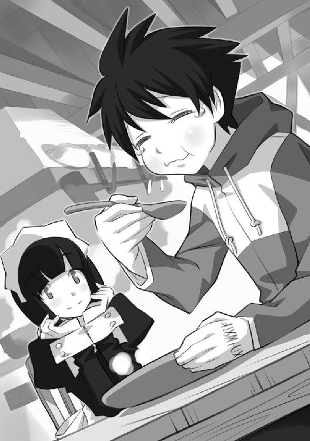
「大げさじゃないよ。俺に何かできることがあったら言ってくれ。手伝うよ」
ルイズの下着の洗濯なんかする気にはなれないが、彼女の手伝いならしたかった。
「なら、デザートを運ぶのを手伝ってくださいな」
シエスタは微笑んで言った。
「うん」才人は大きく頷いた。
大きな銀のトレイに、デザートのケーキが並んでいる。才人がそのトレイを持ち、シエスタがはさみでケーキをつまみ、一つずつ貴族たちに配っていく。
金色の巻き髪に、フリルのついたシャツを着た、気障なメイジがいた。薔薇をシャツのポケットに挿している。周りの友人が、口々に彼を冷やかしている。
「なあ、ギーシュ！ お前、今は誰とつきあっているんだよ！」
「誰が恋人なんだ？ ギーシュ！」
気障なメイジはギーシュというらしい。彼はすっと唇の前に指を立てた。
「つきあう？ 僕にそのような特定の女性はいないのだ。薔薇は多くの人を楽しませるために咲くのだからね」
自分を薔薇に例えてやがる。救いようのないキザだ。見てるこっちが恥ずかしくなるほどのナルシストっぷりである。才人は死んでくれと思いながら、彼を見つめた。
そのとき、ギーシュのポケットから何かが落ちた。ガラスでできた小壜である。中に紫色の液体が揺れている。
気に入らないヤツだが、落とし物は落とし物だ。教えてやろう。
才人はギーシュに言った。
「おい、ポケットから壜が落ちたぞ」
しかし、ギーシュは振り向かない。こいつ、無視しやがって。
才人はシエスタにトレイを持ってもらうと、しゃがみこんで小壜を拾った。
「落とし物だよ。色男」
それをテーブルの上に置いた。ギーシュは苦々しげに、才人を見つめると、その小壜を押しやった。
「これは僕のじゃない。君は何を言っているんだね？」
その小壜の出所に気づいたギーシュの友人たちが、大声で騒ぎ始めた。
「おお？ その香水は、もしや、モンモランシーの香水じゃないのか？」
「そうだ！ その鮮やかな紫色は、モンモランシーが自分のためだけに調合している香水だぞ！」
「そいつが、ギーシュ、お前のポケットから落ちてきたってことは、つまりお前は今、モンモランシーとつきあっている。そうだな？」
「違う。いいかい？ 彼女の名誉のために言っておくが......」
ギーシュが何か言いかけたとき、後ろのテーブルに座っていた茶色のマントの少女が立ち上がり、ギーシュの席に向かって、コツコツと歩いてきた。
栗色の髪をした、可愛い少女だった。着ているマントの色からすると、一年生だろうか。
「ギーシュさま......」
そして、ボロボロと泣き始める。
「やはり、ミス・モンモランシーと......」
「彼らは誤解しているんだ。ケティ。いいかい、僕の心の中に住んでいるのは、君だけ......」
しかし、ケティと呼ばれた少女は、思いっきりギーシュの頬をひっぱたいた。
「その香水があなたのポケットから出てきたのが、何よりの証拠ですわ！ さようなら！」
ギーシュは、頬をさすった。
すると、遠くの席から一人の見事な巻き髪の女の子が立ち上がった。才人はその子に見覚えがあった。確か、才人がこの世界に呼び出されたときに、ルイズと口論していた女の子だ。
いかめしい顔つきで、かつかつかつとギーシュの席までやってきた。
「モンモランシー。誤解だ。彼女とはただいっしょに、ラ・ロシェールの森へ遠乗りをしただけで......」
ギーシュは、首を振りながら言った。冷静な態度を装っていたが、冷や汗が一滴、額を伝っていた。
「やっぱり、あの一年生に、手を出していたのね？」
「お願いだよ。『香水』のモンモランシー。咲き誇る薔薇のような顔を、そのような怒りでゆがませないでくれよ。僕まで悲しくなるじゃないか！」
モンモランシーは、テーブルに置かれたワインの壜を掴むと、中身をどぼどぼとギーシュの頭の上からかけた。
そして......、
「うそつき！」
と怒鳴って去っていった。
沈黙が流れた。
ギーシュはハンカチを取り出すと、ゆっくりと顔を拭いた。そして、首を振りながら芝居がかった仕草で言った。
「あのレディたちは、薔薇の存在の意味を理解していないようだ」
才人は一生やってろ、と思い、シエスタから銀のトレイを受け取り、再び歩き出した。
そんな才人を、ギーシュが呼び止めた。
「待ちたまえ」
「なんだよ」
ギーシュは、椅子の上で体を回転させると、すさっ！ と足を組んだ。そのいちいちキザったらしい仕草に、頭痛がする。
「君が軽率に、香水の壜なんかを拾い上げたおかげで、二人のレディの名誉が傷ついた。どうしてくれるんだね？」
才人は呆れた声で言った。
「二股かけてるお前が悪い」
ギーシュの友人たちが、どっと笑った。
「そのとおりだギーシュ！ お前が悪い！」
ギーシュの顔に、さっと赤みが差した。
「いいかい？ 給仕君。僕は君が香水の壜をテーブルに置いたとき、知らないフリをしたじゃないか。話を合わせるぐらいの機転があってもよいだろう？」
「どっちにしろ、二股なんかそのうちバレるっつの。あと、俺は給仕じゃない」
「ふん......。ああ、君は......」
ギーシュは、バカにしたように鼻を鳴らした。
「確か、あのゼロのルイズが呼び出した、平民だったな。平民に貴族の機転を期待した僕が間違っていた。行きたまえ」
才人はかちんときた。確かに美少年であるが、こんなキザのナルシストに、そうまで言われちゃ黙ってられない。余計な一言が口をついた。
「うるせえキザ野郎。一生薔薇でもしゃぶってろ」
ギーシュの目が光った。
「どうやら、君は貴族に対する礼を知らないようだな」
「あいにく、貴族なんか一人もいない世界から来たんでね」
才人はギーシュの物腰を真似て、右手を上げ、キザったらしい仕草で言った。
「よかろう。君に礼儀を教えてやろう。ちょうどいい腹ごなしだ」
ギーシュは立ち上がった。
「おもしれえ」
才人は歯をむき出して、うなった。まず、こいつは第一印象からして気に入らない。ルイズほどじゃないけど、結構可愛い女の子と二人もつきあっていた。おまけに俺を小バカにしくさった。
ケンカをするには十分すぎる理由がある。ルイズにバカにされた分も含めて、殴ってやる。あいつは一応、女だからな！
「ここでやんのか？」
才人は言った。ギーシュは才人より背が高いが、ひょろひょろしてて、力はなさそうだ。色男、金と力はなかりけり、だ。才人もそんなに強いわけじゃないが、負けるとは思えない。
ギーシュは、くるりと体を翻した。
「逃げんのかよ！」
「ふざけるな。貴族の食卓を平民の血で汚せるか。ヴェストリの広場で待っている。ケーキを配り終わったら、来たまえ」
ギーシュの友人たちが、わくわくした顔で立ち上がり、ギーシュの後を追った。
一人は、テーブルに残った。才人を逃がさないために、見張るつもりのようだ。
シエスタが、ぶるぶる震えながら、才人を見つめている。才人は笑いながら言った。
「大丈夫。あんなひょろスケに負けるかっての。何が貴族だっつの」
「あ、あなた、殺されちゃう......」
「はぁ？」
「貴族を本気で怒らせたら......」
シエスタは、だーっと走って逃げてしまった。
なんなんだよ、と才人は呟いた。あいつ、そんなに強いってのか？
後ろからルイズが駆け寄ってきた。
「あんた！ 何してんのよ！ 見てたわよ！」
「よおルイズ」
「よおじゃないわよ！ なに勝手に決闘なんか約束してんのよ！」
「だって、あいつが、あんまりにも ムカつくから......」
才人はバツが悪そうに言った。
ルイズはため息をついて、やれやれと肩をすくめた。
「謝っちゃいなさいよ」
「なんで？」
「怪我したくなかったら、謝ってきなさい。今なら許してくれるかもしれないわ」
「ふざけんな！ なんで俺が謝んなくちゃならないんだよ！ 先にバカにしてきたのは向こうの方だ。大体、俺は親切に......」
「いいから」
ルイズは、強い調子で才人を見つめた。
「いやだね」
「わからずやね......。あのね？ 絶対に勝てないし、あんたは怪我するわ。いや、怪我で済んだら運がいいわよ！」
「そんなの、やってみなくちゃわかんねえだろ」
「聞いて？ メイジに平民は絶対に勝てないの！」
「ヴェストリの広場ってどこだ」
才人は歩き出した。ルイズと才人のやり取りを見ていたギーシュの友人の一人が顎をしゃくった。
「こっちだ。平民」
「ああもう！ ほんとに！ 使い魔のくせに勝手なことばっかりするんだから！」
ルイズは、才人の後を追いかけた。
ヴェストリの広場は、魔法学院の敷地内、『風』と『火』の塔の間にある、中庭である。西側にある広場なので、そこは日中でも日があまり差さない。決闘にはうってつけの場所である。
しかし......、噂を聞きつけた生徒たちで、広場は溢れかえっていた。
「諸君！ 決闘だ！」
ギーシュが薔薇の造花を掲げた。うおーッ！ と歓声が巻き起こる。
「ギーシュが決闘するぞ！ 相手はルイズの平民だ！」
俺にだって名前があるんだよ......、と才人は苦々しく思った。
ギーシュは腕を振って、歓声にこたえている。
それから、やっと存在に気づいたという風に、才人の方を向いた。
才人とギーシュは、広場の真ん中に立ち、お互いぐっと睨みあった。
「とりあえず、逃げずに来たことは、誉めてやろうじゃないか」
ギーシュは、薔薇の花を弄りながら、歌うように言った。
「誰が逃げるか」
「さてと、では始めるか」
ギーシュが言った。
言うが早いか、才人は駆け出した。ケンカは先手必勝である！
ギーシュまで、およそ十歩ほどの距離だ。メイジだか貴族だか知らないが、あの高慢ちきな鼻っ柱を叩き折ってやる。
ギーシュは、そんな才人を余裕の笑みで見つめると、薔薇の花を振った。
花びらが一枚、宙に舞ったかと思うと......。
甲冑を着た女戦士の形をした、人形になった。
身長は人間と同じぐらいだが、硬い金属製のようだ。淡い陽光を受けて、その肌......、甲冑がきらめいた。
そいつが才人の前に立ちふさがった。
「な、なんだこりゃ！」
「僕はメイジだ。だから魔法で戦う。よもや文句はあるまいね？」
「て、てめえ......」
「言い忘れたな。僕の二つ名は『青銅』。青銅のギーシュだ。従って、青銅のゴーレム『ワルキューレ』がお相手するよ」
「えっ？」
女戦士の形をしたゴーレムが、才人に向かって突進してきた。
その右の拳が、才人の腹にめり込む。
「げふっ！」
才人はうめいて、地面に転がった。無理もない。青銅製の拳が、腹にめり込んだのだ。
その才人を、悠然とゴーレムが見下ろした。
しかし、苦しくて立ち上がれない。プロボクサーの拳を、腹に受けたらこんな感じになるんじゃないか、と思った。
「なんだよ。もう終わりかい？」
ギーシュが呆れた声で言った。人込みの中から、ルイズが飛び出してくる。
「ギーシュ！」
「おおルイズ！ 悪いな。君の使い魔をちょっとお借りしているよ！」
ルイズは長い髪を揺らし、よく通る声でギーシュを怒鳴りつけた。
「いい加減にして！ 大体ねえ、決闘は禁止じゃない！」
「禁止されているのは、貴族同士の決闘のみだよ。平民と貴族の間での決闘なんか、誰も禁止していない」
ルイズは言葉に詰まった。
「そ、それは、そんなこと今までなかったから......」
「ルイズ、君はそこの平民が好きなのかい？」
ルイズの顔が、怒りで赤く染まった。
「誰がよ！ やめてよね！ 自分の使い魔が、みすみす怪我するのを、黙って見ていられるわけないじゃない！」
「......だ、誰が怪我するって？ 俺はまだ平気だっつの」
「サイト！」
立ち上がった才人を見て、ルイズが悲鳴のような声で、名前を呼んだ。
「......へへへ、お前、やっと俺を名前で呼んだな」
ルイズは震えていた。
「わかったでしょう？ 平民は、絶対にメイジに勝てないのよ！」
「......ちょ、ちょっと油断した。いいからどいてろ」
才人はルイズを押しやった。
「おやおや、立ち上がるとは思わなかったな......。手加減が過ぎたかな？」
ギーシュが才人を挑発した。
才人は、ゆっくりと、ギーシュに向かって歩き出した。ルイズがその後を追いかけながら才人の肩を掴む。
「寝てなさいよ！ バカ！ どうして立つのよ！」
才人は肩に乗せられた手を振り払った。
「ムカつくから」
「ムカつく？ メイジに負けたって恥でもなんでもないのよ！」
才人はよろよろと歩きながら、呟いた。
「うるせえ」
「え？」
「いい加減、ムカつくんだよね......。メイジだか貴族だかしんねえけどよ。お前ら揃いも揃って威張りやがって。魔法がそんなに偉いのかよ。アホが」
ギーシュが薄く笑みを浮かべながら、そんな才人の様子を見つめている。
「やるだけ無駄だと思うがね」
才人は持ち前の負けん気を発揮して、短くうなった。
「全然利いてねえよ。お前の銅像、弱すぎ」
ギーシュの顔から笑みが消えた。ゴーレムの右手が飛んで、才人の顔面を襲う。モロに頬に食らって、才人は吹っ飛んだ。
鼻が折れ、鼻血が噴き出る。
才人は鼻を押さえながら、呆然と思う。
参ったな......、これがメイジの力か。多少のケンカはしたことがあるが、こんなパンチは食らったことがない。
それでもよろよろと立ち上がる。ギーシュのゴーレムは、容赦なくそんな才人を殴り飛ばした。
立ち上がる。殴られる。
際限なくそれが繰り返された。
八回目のパンチは、才人の右腕に当たった。鈍い音がした。
左目はとっくにふさがって見えない。右目で、腕を確かめた。あらぬほうへ曲がっている。
ゴーレムの足が、ぼけっと折れた腕を見つめる才人の顔を踏みつける。
頭を地面に強く打ちつけ、才人は一瞬気を失う。
目をあけると、青空をバックにルイズの顔が見えた。
「お願い。もうやめて」
ルイズの鳶色の瞳が潤んでいる。
才人は、声を出そうとした。しかし、殴られた胸が痛くて、声が出ない。
それでも、声を振り絞った。気力で出した。
「......泣いてるのか？ お前」
「泣いてないわよ。誰が泣くもんですか。もういいじゃない。あんたはよくやったわ。こんな平民、見たことないわよ」
折れた腕が、じりじりと痛む。才人は唇をゆがませた。
「いてえ」
「痛いに決まってるじゃないの。当たり前じゃないの。何考えてるのよ」
ルイズの目から、涙がこぼれた。それが才人の頬に当たる。
「あんたはわたしの使い魔なんだから。これ以上、勝手な真似は許さないからね」
そんな二人に、ギーシュの声が飛んだ。
「終わりかい？」
「......ちょっと待ってろ。休憩だ」
「サイト！」
ギーシュは微笑んだ。そして、薔薇の花を振った。一枚の花びらが、一本の剣に変わる。ギーシュはそれを掴むと、才人に向かって投げた。その剣は、地面に仰向けに横たわった才人の隣の地面に突き立った。
「君。これ以上続ける気があるのなら、その剣を取りたまえ。そうじゃなかったら、一言こう言いたまえ。ごめんなさい、とな。それで手打ちにしようじゃないか」
「ふざけないで！」
ルイズが立ち上がって、怒鳴った。しかし、ギーシュは気にした風もなく、言葉を続けた。
「わかるか？ 剣だ。つまり『武器』だ。平民どもが、せめてメイジに一矢報いようと磨いた牙さ。未だ噛みつく気があるのなら、その剣を取りたまえ」
才人はその剣に、そろそろと右手を伸ばす。折れているから、指先に力が入らない。
その右手が、ルイズによって、止められる。
「だめ！ 絶対だめなんだから！ それを握ったら、ギーシュは容赦しないわ！」
「俺は元の世界にゃ、帰れねえ。ここで暮らすしかないんだろ」
才人は独り言を呟くように、言った。その目はルイズを見ていない。
「そうよ。それがどうしたの！ 今は関係ないじゃない！」
ルイズがぐっと、才人の右手を握り締める。才人は力強い声で、言い放った。
「使い魔でいい。寝るのは床でもいい。飯はまずくたっていい。下着だって、洗ってやるよ。生きるためだ。しょうがねえ」
才人はそこで言葉を切ったあと、左の拳を握り締めた。
「でも......」
「でも、何よ......」
「下げたくない頭は、下げられねえ」
才人は最後の気力を振り絞って立ち上がった。ルイズをはね退け、左手で地面に突き立った剣を握った。
そのとき......。
才人の左手に刻まれたルーン文字が、光りだした。
所変わって、ここは学院長室。
ミスタ・コルベールは、泡を飛ばして、オスマン氏に説明していた。
春の使い魔召喚の際に、ルイズが平民の少年を呼び出してしまったこと。
ルイズがその少年と『契約』した証明として現れたルーン文字が、気になったこと。
それを調べていたら......。
「始祖ブリミルの使い魔『ガンダールヴ』に行き着いた、というわけじゃね？」
オスマン長老は、コルベールが描いた才人の手に現れたルーン文字のスケッチをじっと見つめた。
「そうです！ あの少年の左手に刻まれたルーンは、伝説の使い魔『ガンダールヴ』に刻まれていたモノとまったく同じであります！」
「で、君の結論は？」
「あの少年は、『ガンダールヴ』です！ これが大事じゃなくて、なんなんですか！ オールド・オスマン！」
コルベールは、禿げ上がった頭を、ハンカチで拭きながらまくし立てた。
「ふむ......。確かに、ルーンが同じじゃ。ルーンが同じということは、ただの平民だったその少年は、『ガンダールヴ』になった、ということになるんじゃろうな」
「どうしましょう」
「しかし、それだけで、そう決めつけるのは早計かもしれん」
「それもそうですな」
オスマン氏は、コツコツと机を叩いた。
ドアがノックされた。
「誰じゃ？」
扉の向こうから、ミス・ロングビルの声が聞こえてきた。
「私です。オールド・オスマン」
「なんじゃ？」
「ヴェストリの広場で、決闘をしている生徒がいるようです。大騒ぎになっています。止めに入った教師がいましたが、生徒たちに邪魔されて、止められないようです」
「まったく、暇をもてあました貴族ほど、性質の悪い生き物はおらんわい。で、誰が暴れておるんだね？」
「一人は、ギーシュ・ド・グラモン」
「あの、グラモンとこのバカ息子か。オヤジも色の道では剛の者じゃったが、息子も輪をかけて女好きじゃ。おおかた女の子の取り合いじゃろう。相手は誰じゃ？」
「......それが、メイジではありません。ミス・ヴァリエールの使い魔の少年のようです」
オスマン氏とコルベールは顔を見合わせた。
「教師たちは、決闘を止めるために『眠りの鐘』の使用許可を求めております」
オスマン氏の目が、鷹のように鋭く光った。
「アホか。たかが子供のケンカを止めるのに、秘宝を使ってどうするんじゃ。放っておきなさい」
「わかりました」
ミス・ロングビルが去っていく足音が聞こえた。
コルベールは、唾を飲み込んで、オスマン氏を促した。
「オールド・オスマン」
「うむ」
オスマン氏は、杖を振った。壁にかかった大きな鏡に、ヴェストリ広場の様子が映し出された。
才人は驚いていた。剣を握った瞬間、体の痛みが消えた。
自分の左手のルーンが光っていることに気づいた。
そして......。
体が羽のように軽い。まるで飛べそうだ。
その上、左手に握った剣が自分の体の延長のようにしっくりと馴染んでいる。
不思議だ。剣なんか握ったことないのに。
剣を握った才人を見て、ギーシュが冷たく微笑んだ。
「まずは、誉めよう。ここまでメイジに楯突く平民がいることに、素直に感激しよう」
そして、手に持った薔薇を振った。
あの造花の薔薇が、どうやら魔法の杖らしい。どこまでもキザなヤツだ。
そんなことを考える余裕があることに驚く。
こんなに体がボロボロなのに、いったい、俺はどうしたんだよ。
ギーシュのゴーレムが襲ってくる。青銅の塊。戦乙女ワルキューレの姿をした像が、ゆっくりとした動きで、才人に向かってくる。
なんだよ、と思った。
あんなトロいやつに、今までいいようにあしらわれていたのか。
才人は、跳んだ。
自分のゴーレムが、粘土のように才人に切り裂かれるのを見て、ギーシュは声にならないうめきをあげた。
ぐしゃっと音を立て、真っ二つになったゴーレムが地面に落ちる。
同時に、才人はギーシュめがけて旋風のように突っ込んだ。
ギーシュは慌てて薔薇を振る。花びらが舞い、新たなゴーレムが六体現れる。
全部で七体のゴーレムが、ギーシュの武器だ。一体しか使わなかったのは、それには及ばないと思っていたためである。
ゴーレムが、才人を取り囲み、一斉に躍りかかる。
そして、一気に揉みつぶす......、かに見えた瞬間、五体のゴーレムが、バラバラに切り裂かれる。振る剣が見えない。速い。あんな風に剣を振れる人間がいるなんて思えない。
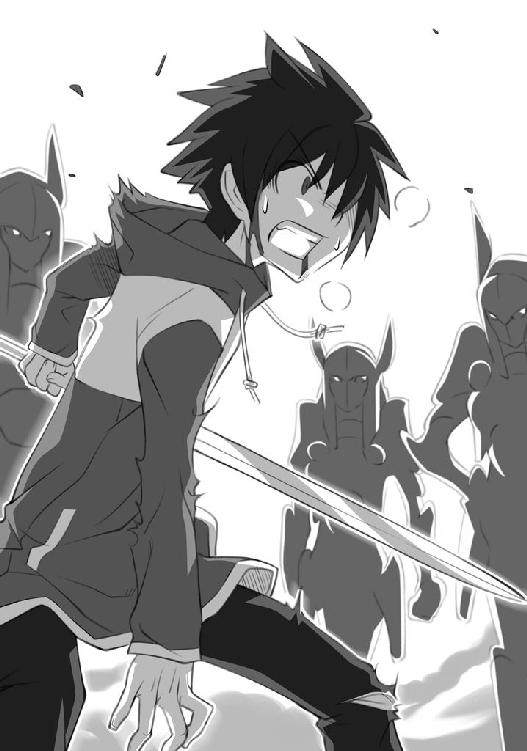
咄嗟に残りの一体を、ギーシュは自分の盾に置いた。
次の瞬間、そのゴーレムはなんなく切り裂かれる。
「ひっ！」
ギーシュは、顔面に蹴りを食らって吹っ飛び、地面に転がった。
才人が自分めがけて跳躍するのが見えた。
やられる！ と思って頭を抱えた。
ザシュッと音がして......。
おそるおそる目をあけると......。
才人が、剣をギーシュの右横の地面に突き立てていた。
「続けるか？」
才人は呟くように言った。
ギーシュは首を振る。完全に戦意を喪失していた。
震えた声でギーシュは言った。
「ま、参った」
才人は、剣から手を離すと、歩き出した。
あの平民、やるじゃないか！ とか、ギーシュが負けたぞ！ とか、見物していた連中からの歓声が届く。
勝った......、のか？
どうして？
才人はぼんやりと思った。
......俺は、いったいどうしたんだろう。
途中まで、ボロボロにやられていた。
それが、剣を握った瞬間、体が羽にでもなったように感じた。気づいたら、ギーシュのゴーレムを、すべて切り裂いていた。
俺って、剣なんか使えたっけ？
わからない。でもまあ、とにかく勝ったんだから、よしとしよう。後で考えよう。なんだか、どっと疲れた。休みたい。
ルイズが駆け寄ってくるのが見えた。
おーい、勝ったぞ、と言おうとしたら、膝が抜けた。
重い疲労感が体を襲う。意識が急に遠くなって、才人は倒れた。
いきなり倒れかけた才人の体を、駆け寄ったルイズは支えようとしたが、うまくいかなかった。どたっと、才人は地面に倒れる。
「サイト！」
その体を揺さぶった。しかし、死んではいないようだ。
「ぐー......」
鼾が聞こえてくる。寝ているようだ。
「寝てるし......」
ルイズはほっとした表情で、ため息をついた。
ギーシュが立ち上がって、首を振る。
「ルイズ。彼は何者なんだ？ この僕の『ワルキューレ』を倒すなんて......」
「ただの平民でしょ」
「ただの平民に、僕のゴーレムが負けるなんて思えない」
「ふんだ。あんたが弱かっただけじゃないの？」
ルイズは、才人を抱え起こそうとした、が、支えきれずに転んでしまった。
「ああもう！ 重いのよ！ バカ！」
周りで見ていた生徒の誰かが、才人に『レビテーション』をかけてくれた。
浮かんだ才人の体を、ルイズは押した。部屋に運んで、治療してやらなきゃ。
ルイズは目をごしごしとこすった。痛そうで、可哀想で、泣けてしまった。剣を握ったらいきなり強くなったけど、あのままだったら死んでいたかもしれない。
才人が勝ったことより、そっちの方が重要だ。このバカは、死んでもいいなんて、思っていたんだろうか？ 平民のくせに、妙なプライド振りかざして......。
「使い魔のくせに、勝手なことばっかりして！」
ルイズは寝ている才人に怒鳴った。ほっとしたら、なんだか頭にきたのだった。
オスマン氏とコルベールは、『遠見の鏡』で一部始終を見終えると、顔を見合わせた。
コルベールは震えながらオスマン氏の名前を呼んだ。
「オールド・オスマン」
「うむ」
「あの平民、勝ってしまいましたが......」
「うむ」
「ギーシュは一番レベルの低い『ドット』メイジですが、それでもただの平民に後れをとるとは思えません。そしてあの動き！ あんな平民見たことない！ やはり彼は『ガンダールヴ』！」
「うむむ......」
コルベール氏は、オスマン氏を促した。
「オールド・オスマン。さっそく王室に報告して、指示を仰がないことには......」
「それには及ばん」
オスマン氏は、重々しく頷いた。白いひげが、厳しく揺れた。
「どうしてですか？ これは世紀の大発見ですよ！ 現代に蘇った『ガンダールヴ』！」
「ミスタ・コルベール。『ガンダールヴ』はただの使い魔ではない」
「そのとおりです。始祖ブリミルの用いた『ガンダールヴ』。その姿形は記述がありませんが、主人の呪文詠唱の時間を守るために特化した存在と伝え聞きます」
「そうじゃ。始祖ブリミルは、呪文を唱える時間が長かった......、その強力な呪文ゆえに。知ってのとおり、詠唱時間中のメイジは無力じゃ。そんな無力な間、己の体を守るために始祖ブリミルが用いた使い魔が『ガンダールヴ』じゃ。その強さは......」
その後を、コルベールが興奮した調子で引き取った。
「千人もの軍隊を一人で壊滅させるほどの力を持ち、あまつさえ並のメイジではまったく歯が立たなかったとか！」
「で、ミスタ・コルベール」
「はい」
「その少年は、ほんとうにただの人間だったのかね？」
「はい。どこからどう見ても、ただの平民の少年でした。ミス・ヴァリエールが呼び出した際に、念のため『ディテクト・マジック』で確かめたのですが、正真正銘、ただの平民の少年でした」
「そんなただの少年を、現代の『ガンダールヴ』にしたのは、誰なんじゃね？」
「ミス・ヴァリエールですが......」
「彼女は、優秀なメイジなのかね？」
「いえ、というか、むしろ無能というか......」
「さて、その二つが謎じゃ」
「ですね」
「無能なメイジと契約したただの少年が、何故『ガンダールヴ』になったのか。まったく、謎じゃ。理由が見えん」
「そうですね......」
「とにかく、王室のボンクラどもに『ガンダールヴ』とその主人を渡すわけにはいくまい。そんなオモチャを与えてしまっては、またぞろ戦でも引き起こすじゃろうて。宮廷で暇をもてあましている連中はまったく、戦が好きじゃからな」
「ははあ。学院長の深謀には恐れ入ります」
「この件は私が預かる。他言は無用じゃ。ミスタ・コルベール」
「は、はい！ かしこまりました！」
オスマン氏は杖を握ると窓際へと向かった。遠い歴史の彼方へ、想いを馳せる。
「伝説の使い魔『ガンダールヴ』か......。いったい、どのような姿をしておったのだろうなあ」
コルベールは夢見るように呟いた。
「『ガンダールヴ』は、あらゆる『武器』を使いこなし、敵と対峙したとありますから......」
「ふむ」
「とりあえず腕と手はあったんでしょうなあ」
朝の光で、才人は目を覚ました。体中に包帯が巻かれている。
そうだ。
自分はあのキザなギーシュと決闘して、ボロボロに叩きのめされて......。
それから何故か、剣を握ったら逆転して......。
気絶したのだ。
ルイズの部屋だった。自分はどうやらルイズのベッドで寝ているようだ。
ルイズは、椅子に座り机に突っ伏して寝ていた。
左手のルーンに気づく。このルーンが光りだしたら、自分の体が羽みたいに動き、体の延長のように握ったこともない剣が動き、ギーシュのゴーレムを切り裂いたのだった。
左手のルーンは、今は光っていない。
なんだったんだろう。あれは......。
そんな風に左手を見つめているとノックがあって、ドアが開いた。
シエスタだった。あの、才人に厨房でシチューをくれた、平民の少女だった。相変わらずのメイド姿で、カチューシャで髪を纏めている。
彼女は才人を見ると微笑んだ。銀のトレイの上に、パンと水がのっていた。
「シエスタ......？」
「お目覚めですか？ サイトさん」
「うん......、俺......」
「あれから、ミス・ヴァリエールが、ここまであなたを運んで寝かせたんですよ。先生を呼んで『治癒』の呪文を、かけてもらいました。大変だったんですよ」
「『治癒』の呪文？」
「そうです。怪我や病気を治す魔法ですわ。ご存知でしょう？」
「いや......」
才人は首を振った。ここでの常識が才人に通用すると思われては困るけど、言っても始まらない。
「治癒の呪文のための秘薬の代金は、ミス・ヴァリエールが出してました。だから心配しなくていいですわ」
黙ってるから、お金の心配をしていると思われたらしい。
「そんなにかかるの？ 秘薬のお金って」
「まあ、平民に出せる金額ではありません」
才人は立ち上がろうとして、うめいた。
「あいだっ！」
「あ、動いちゃダメですわ！ あれだけの大怪我では、『治癒』の呪文でも完璧には治せません！ ちゃんと寝てなきゃ！」
才人は、頷いて、ベッドに寝転んだ。
「お食事をお持ちしました。食べてください」
シエスタは銀のトレイを才人の枕元に置いた。
「ありがとう......。俺、どのぐらい寝てたの？」
「三日三晩、ずっと寝続けてました。目が覚めないんじゃないかって、皆で心配してました」
「皆って？」
「厨房の皆です......」
シエスタは、それからはにかんだように顔を伏せた。
「どうしたの？」
「あの......、すいません。あのとき、逃げ出してしまって」
食堂で、ギーシュを怒らせたとき、彼女は怖がって逃げ出してしまった。それを言っているのだろう。
「いいよ。謝ることじゃないよ」
「ほんとに、貴族は怖いんです。私みたいな、魔法を使えないただの平民にとっては......」
シエスタは、ぐっと顔をあげた。その目がキラキラと輝いている。
「でも、もう、そんなに怖くないです！ 私、サイトさんを見て感激したんです。平民でも、貴族に勝てるんだって！」
「そう......、はは」
ホントにどうして勝てたんだろう。不思議だ。
なんだか照れくさくなって、才人は頭をかいた。折れた右腕でかいたことに気づく。もう、なんともない。動かすと多少は痛かったが、骨はくっついているようだった。
いやぁ、これが魔法か。才人は妙に感心した。
......確かに威張るのもしかたがねえか。
「もしかして、ずっと看病しててくれたの？」
才人は体に巻かれた包帯を見て言った。
「違います。私じゃなくて、そこのミス・ヴァリエールが......」
「ルイズが？」
「ええ。サイトさんの包帯を取り替えたり、顔を拭いてあげたり......。ずっと寝ないでやってたから、お疲れになったみたいですね」
ルイズは、柔らかい寝息を立てている。長い睫の下に、大きな隈ができている。
相変わらず寝顔は可愛い。人形みたいだ。
優しいところあるんだな、と思ったら、急にその横顔が激しく可愛く見えた。
ルイズは目を覚ました。
「ふぁああああああああ」
大きなあくびをして、伸びをする。それから、ベッドの上で目をぱちくりさせている才人に気づいた。
「あら。起きたの。あんた」
「う、うん......」
才人は顔を伏せた。お礼を言おうと思った。
「その、ルイズ」
「なによ」
「ありがとう。あと、心配かけてごめん」
ルイズは立ち上がった。
それから才人に近寄る。
才人はドキドキした。頑張ったね！ かっこよかったね！ なんつって、キスでもしてくれるんだろうか。
しかし、そんなことはなかった。
ルイズは才人の毛布を引っぺがすと、首根っこを掴んだ。
「治ったら、さっさとベッドから出なさいよ！」
首根っこを掴んだまま、ルイズは才人を引っ張り出した。
「は！ あぐ！」
才人は床に転がった。
「お、お前、怪我人だぞ！」
「それだけ話せりゃ十分よ」
才人は立ち上がった。まだ、体は痛いけど、動けないことはない。しかし、もうちょっと寝させてくれてもいいじゃないか。
「そ、それじゃ、ごゆっくり......」
シエスタが苦笑いを浮かべて、部屋を出て行く。とばっちりを恐れたらしい。
ルイズは、才人に服や下着の山を投げつけた。
「はぐっ！」
「あんたが寝ている間に溜まった洗濯物よ。あと、部屋の掃除。早くして」
「お前なあ......」
ルイズはじろっと才人を睨んだ。
「なによ。ギーシュを倒したぐらいで待遇が変わると思ったの？ おめでたいんじゃないの？ バカじゃないの？」
才人は恨めしげにルイズを見つめた。
さっき可愛いと思ったことは取り消すことにした。
しかし......、ベッドに座って足を組んだルイズはこの世のものとは思えないほど可愛らしい。
長い桃色がかったブロンドの髪が揺れる。深い鳶色の目が、イタズラっぽく輝いている。生意気で、高慢ちきで、ワガママだけど、うーむ、取り消そうがなんだろうが、容姿だけはぐっときてしまう。
指を立て、勝ち誇った調子で、ルイズは言った。
「忘れないで！ あんたはわたしの使い魔なんだからね！」
ガンダールヴ
第一章 使い魔の一日
才人がトリステイン魔法学院でルイズの使い魔として生活を始めてから、一週間が経った。才人の使い魔としての一日を紹介すると、こんな感じである。
まず、世の中のほとんどの動物と人間がそうであるように、朝起きる。寝床は相変わらずの床である。ただ、初日に比べ幾分マシになった。硬い板の上で寝たらひと晩で体が痛くなった才人はメイドのシエスタに頼んで馬のエサである藁をもらい、それを部屋の隅に敷き詰めたのだ。ルイズから恵んでもらった毛布にくるまり、その藁の上で寝ていた。
ルイズは才人が作ったその寝床を『ニワトリの巣』と呼んでいる。なるほど、ニワトリは藁の上で寝るからであり、朝一番の才人の仕事は雄鶏のようであるからだった。才人は朝起きると雄鶏のようにルイズを起こさねばならない。
ルイズが先に起きると、大変なことになる。
「ご主人様に起こされる間抜けな使い魔には罰を」というのがルイズの口癖である。
才人が寝過ごすと朝ご飯が抜かれるのであった。
ルイズは起こされると、まず着替える。下着だけは自分でつけるが、制服は才人に着させてもらう。前述のとおりである。
ルイズは一応、とんでもなく可愛らしい容姿をしているので、下着姿を見ると才人は息が止まりそうになる。美人の恋人は三日で慣れるというが、才人は未だに慣れない。
恋人ではなく、使い魔だからかもしれない。でも、そばにいるといった点では、恋人とあまり変わりがない。違うのは態度と待遇であった。
下着姿のルイズを眺めるのは悪くない。が、しかし、やはりプライドが傷つく。靴を履かせるときなどは、ムカついてしょうがない。うっかり機嫌が顔に出てしまう。
顔色ぐらいならまだいいが、才人の言葉がルイズの神経を逆なですると、面倒なことになる。
「朝っぱらからご主人様を不愉快にさせる無礼な使い魔には罰を」というのがルイズのモットーである。
下着姿のルイズの胸の大きさをからかったり、ぶすっとした顔で「ボタンぐらいテメエで留めろ」なんて言ったりすると、朝ごはんが抜かれるのであった。
黒いマントと白のブラウス、グレーのプリーツスカートの制服に身を包んだルイズは、顔を洗って歯を磨く。水道なんて気が利いたものは部屋まで引かれていない。才人は下の水汲み場まで行って、ルイズが使う水をバケツに汲んでこなければならない。そしてルイズはもちろん、自分で顔を洗ったりしない。才人に洗わせるのである。
ある朝才人は、タオルで拭く振りをして、拾った消し炭でこっそりルイズの顔に落書きをした。
ルイズの顔に描かれた自分の作品を見て、才人は噴き出しそうになったが、こらえた。もったいぶった調子で、恭しくルイズに頭をさげた。
「お嬢様。本日は、いちだんとお美しいことで」
血圧の低いルイズは、眠そうな声で答えた。
「......あんた、何企んでるの？」
「わたくしが？ お嬢様のしがない使い魔に過ぎないわたくしが、企むなどと！」
ルイズはバカ丁寧な才人の態度を激しく不審に思ったが、授業に遅刻しそうだったのでそれ以上問い詰めなかった。
鮮やかな桃色の頬と鳶色の魅力的な瞳、艶やかなさんごのような唇に今のところ装飾は不必要とわかっているルイズは化粧をしない。つまり、鏡をあまり覗かない。その日も覗かなかった。結果、才人がしてくれた化粧に気づかなかった。
ルイズはそのままの顔で授業に出かけた。遅刻ギリギリだったので、廊下や階段でも、誰にも出会わなかった。
ルイズは息せきって教室の扉をあけた。一斉に振り返ったクラスメイトたちが爆笑した。
「ルイズ！ いい顔だな！ ルイズ！」
「いやだ！ あなた！ お似合いよ！」
直後、親切なミスタ・コルベールに、メガネとヒゲの形をした小粋な化粧を指摘されたルイズは怒り狂い、廊下で腹を抱えている才人を一ダースも殴り、才人のご飯をまる一日抜いた。
ルイズに言わせるなら、ご主人様の顔を画布に見立てる使い魔は、かつて神々を味方につけた始祖ブリミルに逆らいし悪魔も同じであり、悪魔に女王陛下から賜わったパンとスープを与えるわけにはいかないのであった。
朝食のあと、もっぱら才人はルイズの部屋の掃除をする。床を箒で掃き、机や窓を雑巾で磨くのである。
そして楽しい楽しい洗濯が待っている。下の水汲み場までルイズの洗濯物を運び、そこで洗濯板を使ってごしごしと洗う。お湯なんて出やしない。湧き水は冷たく、指が切れてしまいそうになる。ルイズの下着は高そうなレースやフリルなんかがたくさんついている。破ったりすると飯を抜かれるので、丁寧に洗わねばならないのだ。つらい作業である。
頭にきた才人は、ある日パンツのゴムにこっそり切れ目を入れておいた。翌日ルイズは気づかずにそれを身につけ、歩いている途中でゴムが切れた。パンツは足首までずり落ち、ルイズの両足に、猟師のワナのように絡みついた。
階段の上だったので、ルイズは派手に転落した。
幸い階段に人影はなかったので、むき出しの下半身をさらけ出して回転運動をかましたルイズの名誉は守られた。さすがにやりすぎたと思った才人はスカートの中を見ないように心がけ、踊り場で気絶しているルイズに謝った。ここまでやるつもりはなかった。せいぜい、廊下で足首に落っこちて、恥をかかせてやれぐらいにしか思っていなかったのである。
息を吹き返したルイズは、パンツのゴムの切れ目に気づき、ベッドのそばでさすがにかしこまる才人にパンツを突きつけてこう言った。
「切れ目が入ってるわね」
「入ってますね。お嬢様」
ルイズは怒りを通り越した声で呟いた。
「説明して。わかりやすく」
「水汲み場の水がよくなかったんです。お嬢様。なにせ、指が切れそうに冷たいもんですから。ゴムも耐えられなかったと存じます」
才人は直立して、答えた。
「あくまで、ゴムの所為にするのね？」
「というか水の所為です。悪いのは水でございます。冷たいだけじゃなく、ゴムをどうにかする呪いがかかってるに違いありません」
才人は恭しく頭を下げた。
「そんな悪い水で作ったスープを、忠実な使い魔に飲ませるわけにはいかないわ」
「お優しいことで」
「三日もすれば、水も元に戻るでしょう」
才人は三日間、飯を抜かれた。
しかし、たとえ三日三食抜かれても才人は平気であった。しょぼんとしたフリをして、アルヴィーズの食堂の裏にある厨房に赴く。そこで働く愛らしいシエスタに頼めば、シチューや骨付きの肉なんかを寄越してくれる。抜かれなくても、才人は厨房に通う。ルイズがもったいぶって「あまねく照らす女王陛下のお慈悲」と嘯くスープは、お慈悲にしてはどうにも量が足りないからであった。
ルイズにはもちろん、厨房での施しは秘密にしていた。口の利きかたを改めるまでスープを増量しないと言い張るルイズに、優しいシエスタの肉とシチューがバレたら、大変だ。使い魔の教育方針に煩いルイズは禁止するに決まっている。
でも、今のところバレてはいない。そんなわけで、才人は会ったこともない女王陛下や始祖ブリミルの百倍、シエスタと厨房を敬愛しているのであった。
その日の朝も才人は、しょぼくれたスープをルイズの前で飲み干したあと、厨房にやってきた。ヴェストリ広場で、貴族のギーシュをやっつけた才人は、大変な人気である。
「『我らの剣』が来たぞ！」
そう叫んで、才人を歓迎したのは、コック長のマルトー親父である。四十過ぎの太ったおっさんである。もちろん貴族ではなく、平民であるのだが、魔法学院のコック長ともなれば、収入は身分の低い貴族なんかは及びもつかなく、羽振りはいい。
丸々と太った体に、立派なあつらえの服を着込み、厨房を一手に切り盛りしている。
マルトー親父は、羽振りのいい平民の例に漏れず、魔法学院のコック長のくせに貴族と魔法を毛嫌いしていた。
彼はメイジのギーシュを剣で倒した才人を『我らの剣』と呼び、まるで王さまでも扱うように才人をもてなしてくれるのであった。そんな厨房は今では才人のオアシスである。
才人が専用の椅子に座ると、シエスタがさっと寄ってきてにっこりと笑いかけ、温かいシチューの入った皿と、ふかふかの白パンを出してくれた。
「ありがとう」
「今日のシチューは特別ですわ」
シエスタは嬉しそうに微笑んだ。才人は一口シチューをほお張ると、顔を輝かせた。
「うまい、うまいよ！ あのスープとは大違いだ！」
そう言って感激すると、包丁を持ったマルトー親父がやってきた。
「そりゃそうだ。そのシチューは、貴族連中に出してるものと、同じもんさ」
「こんなうまいもの、毎日食いやがって......」
才人がそういうと、マルトー親父は得意げに鼻を鳴らした。
「ふん！ あいつらは、なに、確かに魔法はできる。土から鍋や城を作ったり、とんでもない炎の玉を吐き出したり、果てはドラゴンを操ったり、たいしたもんだ！ でも、こうやって絶妙の味に料理を仕立て上げるのだって、言うなら一つの魔法さ。そう思うだろ、サイト」
才人は頷いた。
「まったくそのとおりだ」
「いいやつだな！ お前はまったくいいやつだ！」
マルトー親父は、才人の首根っこにぶっとい腕を巻きつけた。
「なあ、『我らの剣』！ 俺はお前の額に接吻するぞ！ こら！ いいな！」
「その呼び方と接吻はやめてくれ」
才人は言った。
「どうしてだ？」
「どっちもむずがゆい」
マルトー親父は、才人から体を離すと、両腕を広げてみせた。
「お前はメイジのゴーレムを切り裂いたんだぞ！ わかってるのか！」
「ああ」
「なあ、お前はどこで剣を習った？ どこで剣を習ったら、あんな風に振れるのか、俺にも教えてくれよ」
マルトー親父は、才人の顔を覗き込んだ。マルトー親父は飯を食いに来た才人に、毎回こうやって尋ねるのであった。その度に才人は同じ答えを繰り返した。
「知らないよ。剣なんか握ったことないもん。知らずに体が動いてた」
「お前たち！ 聞いたか！」
マルトー親父は、厨房に響くように怒鳴った。
若いコックや見習いたちが、返事を寄越す。
「聞いてますよ！ 親方！」
「本当の達人というのは、こういうものだ！ 決して己の腕前を誇ったりしないものだ！ 見習えよ！ 達人は誇らない！」
コックたちが嬉しげに唱和する。
「達人は誇らない！」
するとマルトー親父はくるりと振りむき、才人を見つめるのだ。
「やい、『我らの剣』。俺はそんなお前がますます好きになったぞ。どうしてくれる」
「どうしてくれると言われても......」
全部ほんとのことなのに、マルトー親父は、それを謙遜と受け取っている。心苦しい。気さくな親父を騙している気分になってくる。才人は左手のルーンを見つめた。
あの日以来、ぴたりと光らない。なんだったんだろう、あれは......、と才人がぼんやり自分のルーンを見つめていても、マルトー親父はそれを達人の控えめさ、と受け取ってしまうのであった。
マルトー親父は、シエスタの方を向いた。
「シエスタ！」
「はい！」
そんな二人の様子を、ニコニコしながら見守っていた気のいいシエスタが、元気よく返事を返す。
「我らの勇者に、アルビオンの古いのを注いでやれ」
シエスタは満面の笑みになると、ぶどう酒の棚から言われたとおりのヴィンテージを取り出してきて、才人のグラスに並々と注いでくれた。
真っ赤な顔をしてぶどう酒を飲み干す才人を、シエスタはうっとりとした面持ちで見つめている。こんなことが毎回繰り返される。
才人が厨房を訪れるたびに、マルトー親父はますます才人のことを好きになり、シエスタはさらに才人のことを尊敬するのであった。
そしてその日は......。そんな才人を厨房の窓の外から覗きこむ赤い影があった。若いコックが窓の外にいる影に気づいた。
「おや、窓の外に何かいるぞ」
赤い影は、きゅるきゅると鳴くと、消えていった。
さて、朝食、掃除、洗濯のあとは、ルイズの授業のお供を務める。初めは床に座らされたが、才人が他の女生徒のスカートの中を熱心に見学していることに気づいたルイズは、しぶしぶと才人を椅子に座らせた。そして、授業中に黒板以外のところを見学したら、昼ごはんを抜くと警告した。
才人も初めのうちは、水からワインを作り出す授業や、秘薬を調合して特殊なポーションを作り出す講義や、目の前に現れる大きな火球や、空中に箱や棒やボールを自在に浮かべ、それを窓の外に飛ばして使い魔に取りに行かせる授業なんかが物珍しくて夢中で見つめていたが、慣れると飽きた。
そのうちに居眠りを始めた。教師とルイズはぐーすか寝ている才人を睨んだが、授業中の使い魔の居眠りを禁じる校則はない。教室を見まわせば、夜行性の幻獣たちや、誰かのフクロウだって、ぐーぐー寝ている。居眠りを決め込んだ才人を起こすことは、使い魔ではなく人間として認めることになってしまう。従って、ルイズは居眠りをする才人に唇をギリギリ噛むほど文句が言いたかったが、言えなかった。言ったら、自分が決めた才人の立場を、否定することになるからだった。
その日の授業中も、才人はぽかぽかした陽気に当てられ、ぐっすり寝ていた。
今朝方シエスタに注いでもらったワインが利いている。才人は夢を見ていた。
とんでもない夢であった。
夜中、寝ているとルイズが自分の藁束の中に忍び込んでくる夢であった。
『ルイズ、どうしたんだよ......』
ルイズはいきなり自分の名前が飛び出したので、きっ、と才人を睨んだ。
『眠れないだって？ しかたないなあ......、むにゃ......』
なんだ、寝言か、と思って再び前を見る。
『......むにゃ、な、なんだよ。抱きついてくるなよ』
ルイズの目が再び才人に注がれる。授業を受けている生徒たちも、一斉に聞き耳を立てた。
『......おいおい、昼間は威張ってるくせに、寝床の中じゃ甘えんぼさんだな』
才人は涎を垂らしながら、うっとりと夢に興じている。
ルイズはいい加減にしろとばかりに才人を揺り動かした。
「ちょっと！ なんちゅう夢見てんのよ！」
クラスメイトが爆笑した。かぜっぴきのマリコルヌが、驚いた声をあげた。
「おいおいルイズ！ お前、そんなことをしてるのか！ 使い魔相手に！ 驚いた！」
女生徒たちは、ひそひそと囁きあった。
「待ってよ！ このバカの夢の話よ！ ああもう！ 起きなさいってば！」
『ルイズ、ルイズ、そんなところネコみたいに舐めるなよ......』
教室の爆笑が最高潮に達した。
ルイズは才人を蹴倒した。才人は柔らかい夢の世界から叩き起こされ、現実のルイズに出会うことになった。
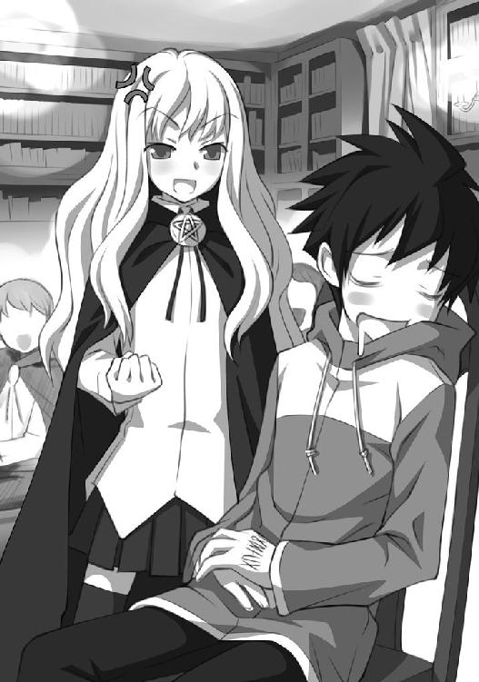
「な、なにすんだよ！」
「いつ、わたしがあんたの藁束に忍び込んだの？」
可愛いルイズは腕を組んで、鬼の形相で才人を見下ろした。
才人は首を振った。クラスメイトの爆笑は続いている。
「サイト。笑ってる無礼な人たちに説明して。わたしは、夜中自分のベッドから一歩も外に出ないって」
「えっと、皆さん。今のは俺の夢の話です。ルイズは忍び込みません」
なあんだ、とつまらなそうに生徒たちは鼻を鳴らした。
「当たり前じゃないの！ わたしがねえ、そんなはしたないことするもんですか！ しかもこんなヤツの！ こんなヤツの！ こんな下品な使い魔の寝床に潜り込むなんて冗談にしても度が過ぎてるわ！」
ルイズはつんと上を向いて、澄ました顔になった。
「でも、俺の夢は当たります」
その仕草にかちんときた才人は言った。
「確かに！ 夢は未来を占うものだからな！」教室の誰かが頷いた。
「わたくしめのご主人様は、あんな性格をしてらっしゃるので、恋人などできようはずもありません」
教室のほぼ全員が頷いた。ルイズがカッとして才人を睨んだが、そんなものは今更意に介さない。才人は続けた。
「可哀想なご主人様は欲求不満が高じます。そのうち使い魔の藁束に忍び込んでくるはずです」
ルイズは両手を腰に当て、才人に強い口調で命令した。
「いいこと？ その汚らしい口を今すぐ閉じなさい」
才人は気にせずに続けた。
「そしたら、俺はルイズを叩いて......」
才人は調子にのってきた。ルイズの肩が怒りで震えだした。
「お前の寝床はここじゃない、と言ってやります」
教室が喝采に包まれた。才人は優雅に一礼すると、腰掛けようとした。
ルイズはそんな才人を蹴っ飛ばした。床に転がる。
「蹴るなよ！」
しかし、ルイズはおかまいなしだ。真っ直ぐ前を見て、相変わらず怒りで肩を震わせている。
そんな才人を、じっと睨んでいる赤い影があった。
キュルケのサラマンダーである。床に腹ばいになり、並んだ席の通路に転がった才人をじっと見つめている。
「ん？」
才人は気づいて、手を振った。
「お前はキュルケのサラマンダーだな。なんだっけ、名前があったよな。そうだ。フレイムだ。フレイムー」
才人はおいでおいでをした。しかし、サラマンダーは尻尾を振ると口からわずかに炎を吹き上げて、主人のもとに去っていった。
「なんでトカゲが俺に興味を持つんだろう？」
才人は首をかしげた。
そして、才人が教室でサラマンダーとにらめっこをしている頃......。
学院長室で、秘書のミス・ロングビルは書き物をしていた。
ミス・ロングビルは手を止めるとオスマン氏の方を見つめた。オスマン氏は、セコイアの机に伏せて居眠りをしている。
ミス・ロングビルは薄く笑った。誰にも見せたことのない笑みである。
それから立ち上がる。
低い声で『サイレント』の呪文を唱える。オスマン氏を起こさないように、自分の足音を消して学院長室を出た。
ミス・ロングビルが向かった先は、学院長室の一階下にある、宝物庫がある階である。
階段を下りて、鉄の巨大な扉を見上げる。扉には、ぶっとい閂がかかっている。閂はこれまた巨大な錠前で守られている。
ここには、魔法学院成立以来の秘宝が収められているのだ。
ミス・ロングビルは、慎重に辺りを見回すと、ポケットから杖を取り出した。エンピツぐらいの長さだが、くいっとミス・ロングビルが持った手首を振ると、するすると杖は伸びて、オーケストラの指揮者が振っている、指揮棒ぐらいの長さになった。
ミス・ロングビルは低く呪文を唱えた。
詠唱が完成したあと、杖を錠前に向けて振った。
しかし......。錠前からはなんの音もしない。
「まあ、ここの錠前に『アン・ロック』が通用するとは思えないけどね」
くすっと妖艶に笑うと、ミス・ロングビルは、自分の得意な呪文を唱え始めた。
さて、それは『錬金』の呪文であった。朗々と呪文を唱え、分厚い鉄のドアに向かって、杖を振る。魔法は扉に届いたが......。しばらく待っても変わったところは見られない。
「スクウェアクラスのメイジが、『固定化』の呪文をかけているみたいね」
ミス・ロングビルは呟いた。『固定化』の呪文は、物質の酸化や腐敗を防ぐ呪文である。これをかけられた物質は、あらゆる化学反応から保護され、そのままの姿を永遠に保ち続けるのだった。『固定化』をかけられた物質には『錬金』の呪文も効力を失う。呪文をかけたメイジが、『固定化』をかけたメイジの実力を上回れば、その限りではないが。
しかし、この鉄の扉に『固定化』の呪文をかけたメイジは、相当強力なメイジであるようだった。『土』系統のエキスパートである、ミス・ロングビルの『錬金』を受けつけないのだから。
ミス・ロングビルは、かけたメガネを持ち上げ、扉を見つめていた。そのときに、階段を上ってくる足音に気づく。
杖を折りたたみ、ポケットにしまった。
現れたのは、コルベールだった。
「おや、ミス・ロングビル。ここでなにを？」
コルベールは、間の抜けた声で尋ねた。ミス・ロングビルは愛想のいい笑みを浮かべた。
「ミスタ・コルベール。宝物庫の目録を作っているのですが......」
「はぁ。それは大変だ。一つ一つ見て回るだけで、一日がかりですよ。何せここにはお宝ガラクタひっくるめて、所狭しと並んでいますからな」
「でしょうね」
「オールド・オスマンに鍵を借りればいいじゃないですか」
ミス・ロングビルは微笑んだ。
「それが......、ご就寝中なのです。まあ、目録作成は急ぎの仕事ではないし......」
「なるほど。ご就寝中ですか。あのジジイ、じゃなかったオールド・オスマンは、寝ると起きませんからな。では、僕も後で伺うことにしよう」
ミスタ・コルベールは歩き出した。それから、立ち止まり、振り向いた。
「その......、ミス・ロングビル」
「なんでしょう？」
照れくさそうに、ミスタ・コルベールは口を開いた。
「もし、よろしかったら、なんですが......。昼食をご一緒にいかがですかな？」
ミス・ロングビルは、少し考えたあと、にっこりと微笑んで、申し出を受けた。
「ええ、喜んで」
二人は並んで歩き出した。
「ねえ、ミスタ・コルベール」
ちょっとくだけた言葉遣いになって、ミス・ロングビルが話しかけた。
「は、はい？ なんでしょう」
自分の誘いが、あっさり受けられたことに気をよくしたミスタ・コルベールは、跳ねるような調子で答えた。
「宝物庫の中に、入ったことはありまして？」
「ありますとも」
「では、『破壊の杖』をご存知？」
「ああ、あれは、奇妙な形をしておりましたなあ」
ミス・ロングビルの目が光った。
「と、申されますと？」
「説明のしようがありません。奇妙としか。はい。それより、何をお召し上がりになります？ 本日のメニューは、平目の香草包みですが......。なに、僕はコック長のマルトー親父に顔が利きましてね、僕が一言言えば、世界の珍味、美味を......」
「ミスタ」
ミス・ロングビルは、コルベールのおしゃべりを遮った。
「は、はい？」
「しかし、宝物庫は、立派なつくりですわね。あれでは、どんなメイジを連れてきても、あけるのは不可能でしょうね」
「そのようですな。メイジには、あけるのは不可能と思います。なんでも、スクウェアクラスのメイジが何人も集まって、あらゆる呪文に対抗できるよう設計したそうですから」
「ほんとに感心しますわ。ミスタ・コルベールは物知りでいらっしゃる」
ミス・ロングビルは、コルベールを頼もしげに見つめた。
「え？ いや......。はは、暇にあかせて書物に目を通すことが多いもので......、研究一筋と申しましょうか。はは。おかげでこの年になっても独身でして......、はい」
「ミスタ・コルベールのおそばにいられる女性は、幸せでしょうね。だって、誰も知らないようなことを、たくさん教えてくださるんですから......」
ミス・ロングビルは、うっとりとした目で、コルベールを見つめた。
「いや！ もう！ からかってはいけません！ はい！」
コルベールはかちこちに緊張しながら、禿げ上がった額の汗を拭いた。それから、真顔になってミス・ロングビルの顔を覗き込んだ。
「ミス・ロングビル。ユルの曜日に開かれる『フリッグの舞踏会』はご存知ですかな？」
「なんですの？ それは」
「ははぁ、貴女は、ここに来てまだ二ヶ月ほどでしたな。その、なんてことはない、ただのパーティです。ただ、ここでいっしょに踊ったカップルは、結ばれるとかなんとか！ そんな伝説がありましてな！ はい！」
「で？」
ミス・ロングビルはにっこりと笑って促した。
「その......、もしよろしければ、僕と踊りませんかと、そういう。はい」
「喜んで。舞踏会も素敵ですが、それより、もっと宝物庫のことについて知りたいわ。私、魔法の品々にとても興味がありますの」
コルベールはミス・ロングビルの気を引きたい一心で、頭の中を探った。宝物庫、宝物庫と......。
やっとミス・ロングビルの興味を引けそうな話を見つけたコルベールは、もったいぶって話し始めた。
「では、ちょっとご披露いたしましょう。たいした話ではないのですが......」
「是非とも、伺いたいわ」
「宝物庫は確かに魔法に関しては無敵ですが、一つだけ弱点があると思うのですよ」
「はあ、興味深いお話ですわ」
「それは......。物理的な力です」
「物理的な力？」
「そうですとも！ 例えば、まあ、そんなことはありえないのですが、巨大なゴーレムが......」
「巨大なゴーレムが？」
コルベールは、得意げに、ミス・ロングビルに自説を語った。聞き終わったあと、ミス・ロングビルは満足げに微笑んだ。
「大変興味深いお話でしたわ。ミスタ・コルベール」
第二章 微熱のキュルケ
授業中、夢の話で散々ルイズをからかった日の夜......。
ルイズは才人の藁束を、廊下にほっぽり出した。
「なにすんだよ」
「わたしが忍び込んだら、困るでしょう？」
授業中の夢の話を根に持っているらしい。
「部屋の外は、風が入ってくるから寒いんだけど」
「きっと、夢の中のわたしがあっためてくれるわ」
ルイズは形のいい眉を吊り上げて言い放った。つくづく根に持つ少女である。どうしても才人を廊下で寝させたいようだ。
才人は毛布を持って、廊下に出た。才人が外に出ると、中からがちゃりと鍵をかける音が聞こえてくる。
壁にあいた窓から、風がぴゅうと吹いて才人の体を凍えさせた。
寒いと呟いて、毛布にくるまり藁束の上に寝転んだ。廊下の床は石なので、冷たさが体にしみこんでくる。暖炉もない。冷える。
たかが夢ぐらいで俺を凍えさせやがって！ 才人はルイズの部屋の扉を蹴っ飛ばした。もちろん、返事はない。
才人はそれから、復讐の方法を考え始めた。もう、パンツのゴムに切れ目を入れるだけでは済まさない。さて、どうしてくれようあの小娘と、毛布の中で凍えていると......。
キュルケの部屋の扉が、がちゃりと開いた。
出てきたのは、サラマンダーのフレイムだった。燃える尻尾が温かそうだ。才人は目を丸くした。
サラマンダーはちょこちょこと才人の方へ近づいてきた。才人は思わず後じさった。
「な、なんだよお前」
きゅるきゅる、と人懐こい感じで、サラマンダーは鳴いた。
害意はないようだった。
サラマンダーは才人の上着の袖をくわえると、ついてこいというように首を振った。
「おい、よせ。毛布が燃えるだろ」
才人は言った。しかし、サラマンダーはぐいぐいと強い力で、才人を引っ張るのであった。
キュルケの部屋のドアはあけっ放しだ。あそこに俺を引っ張り込むつもりだろうか。
確かにそのようだった。サラマンダーの気まぐれじゃなかったら、いったい、キュルケが俺に何の用だろう？
才人はルイズといっつもケンカをしているから、うるさいと文句を言うつもりかもしれない。才人は腑に落ちない気分で、キュルケの部屋のドアをくぐった。
入ると、部屋は真っ暗だった。サラマンダーの周りだけ、ぼんやりと明るく光っている。暗がりから、キュルケの声がした。
「扉を閉めて？」
才人は、言われたとおりにした。
「ようこそ。こちらにいらっしゃい」
「真っ暗だよ」
キュルケが指を弾く音が聞こえた。
すると、部屋の中に立てられたロウソクが、一つずつ灯っていく。
才人の近くに置かれたロウソクから順に火は灯り、キュルケのそばのロウソクがゴールだった。道のりを照らす街灯のように、ロウソクの灯りが浮かんでいる。
ぼんやりと、淡い幻想的な光の中に、ベッドに腰掛けたキュルケの悩ましい姿があった。ベビードールというのだろうか、そういう、誘惑するための下着をつけている。というかそれしかつけていない。
キュルケの胸が、上げ底でないことが確認できた。メロンのようなそれが、レースのベビードールを持ち上げている。
「そんなところに突っ立ってないで、いらっしゃいな」
キュルケは、色っぽい声で言った。
才人はふらふらと、夢遊病者のような足取りで、キュルケの元へと向かった。キュルケはにっこりと笑って言った。
「座って？」
才人は言われたとおりに、キュルケの隣に腰掛けた。裸に近いキュルケの体のことで、頭はいっぱいになっている。
「な、なんの用？」
才人は緊張した声で、言った。燃えるような赤い髪を優雅にかきあげて、キュルケは才人を見つめた。ぼんやりとしたロウソクの灯りに照らされたキュルケの褐色の肌は、野性的な魅力を放ち、才人をどうにかしそうになる。
キュルケは大きくため息をついた。そして、悩ましげに首を振った。
「あなたは、あたしをはしたない女だと思うでしょうね」
「キュルケ？」
「思われても、しかたがないの。わかる？ あたしの二つ名は『微熱』」
「知ってる。うん」
下着の隙間から見える谷間が、なんとも注意を引いた。
「あたしはね、松明みたいに燃え上がりやすいの。だから、いきなりこんな風にお呼びだてしたりしてしまうの。わかってる。いけないことよ」
「いけないことだね」
才人はなんだかよくわからないままに相槌を打った。こんな風に、異国の女の子に打ち明け話をされたことはないので、緊張すると共に、困惑していた。
「でもね、あなたはきっとお許しくださると思うわ」
キュルケは潤んだ瞳で才人を見つめた。どんな男でも、キュルケにこんな風に見つめられたら、原始の本能を呼び起こされるに違いない。
「なな、何を許すの？」
キュルケは、すっと才人の手を握ってきた。キュルケの手は温かかった。そして、一本一本、才人の指を確かめるように、なぞり始めた。才人の背筋に電流が走った。
「恋してるのよ。あたし。あなたに。恋はまったく、突然ね」
「まったく突然だ」
才人は混乱した。からかっているに違いない、と思った。しかし、キュルケの顔は真剣そのものだった。
「あなたが、ギーシュを倒したときの姿......。かっこよかったわ。まるで伝説のイーヴァルディの勇者みたいだったわ！ あたしね、それを見て痺れたのよ。信じられる！ 痺れたのよ！ 情熱！ あああ、情熱だわ！」
「じょ、情熱か、うん」
「二つ名の『微熱』はつまり情熱なのよ！ その日から、あたしはぼんやりとしてマドリガルを綴ったわ。マドリガル。恋歌よ。あなたの所為なのよ。サイト。あなたが毎晩あたしの夢に出てくるものだから、フレイムを使って様子を探らせたり......。ほんとに、あたしってば、みっともない女だわ。そう思うでしょう？ でも、全部あなたの所為なのよ」
才人はなんと答えればいいのかわからずに、じっと座っていた。
キュルケは才人の沈黙を、イエスと受け取ったのか、ゆっくりと目をつむり、唇を近づけてきた。ああ、キュルケは魅力的だ。
ルイズも魅力的だが、色気という点でキュルケに二歩も三歩も劣る。その分ルイズは清楚で可愛らしいが。見た目だけだが。
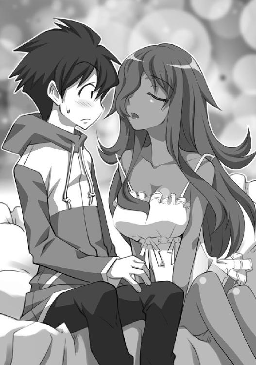
しかし才人は、キュルケの肩を押し戻した。
なんとなく、悪い予感がしたからだった。
どうして？ と言わんばかりの顔で、キュルケが才人を見つめた。才人はキュルケから目を離して、言った。
「とと、とにかく、今までの話を要約すると......」
「ええ」
「君は惚れっぽい」
才人はきっぱりと言った。それは図星だったようで、キュルケは顔を赤らめた。
「そうね......。人より、ちょっと恋ッ気は多いのかもしれないわ。でもしかたないじゃない。恋は突然だし、すぐにあたしの体を炎のように燃やしてしまうんだもの」
キュルケがそう言ったとき、窓の外が叩かれた。
そこには、恨めしげに部屋の中を覗く、一人のハンサムな男の姿があった。
「キュルケ......。待ち合わせの時間に君が来ないから来てみれば......」
「ペリッソン！ ええと、二時間後に」
「話が違う！」
ここは確か、三階である。どうやらペリッソンと呼ばれたハンサムは魔法で浮いているらしい。
キュルケは煩そうに、胸の谷間に差した派手な魔法の杖を取り上げると、そちらのほうを見もしないで杖を振った。
ロウソクの火から、炎が大蛇のように伸び、窓ごと男を吹っ飛ばした。
「まったく、無粋なフクロウね」
才人は唖然として、その様子を見つめていた。
「でね？ 聞いてる？」
「今の誰？」
「彼はただのお友達よ。とにかく今、あたしが一番恋してるのはあなたよ。サイト」
キュルケは才人に再び唇を近づけた。才人は身動きできなかった。むせるような色気が、才人を襲う。
すると......、今度は窓枠が叩かれた。
見ると、悲しそうな顔で部屋の中を覗き込む、精悍な顔立ちの男がいた。
「キュルケ！ その男は誰だ！ 今夜は僕と過ごすんじゃなかったのか！」
「スティックス！ ええと、四時間後に」
「そいつは誰だ！ キュルケ！」
怒り狂いながら、スティックスと呼ばれた男は部屋に入ってこようとした。キュルケは煩そうに、再び杖を振った。
再びロウソクの火から太い炎が伸びる。男は火にあぶられ、地面に落ちていった。
「......今のも友達？」
「彼は、友達というよりはただの知り合いね。とにかく時間をあまり無駄にしたくないの。夜が長いなんて誰が言ったのかしら！ 瞬きする間に、太陽はやってくるじゃないの！」
キュルケは、才人に唇を近づけた。
窓だった壁の穴から、悲鳴が聞こえた。才人はうんざりして振り向いた。
窓枠で、三人の男が押しあいへしあいしている。
三人は同時に、同じセリフをはいた。
「キュルケ！ そいつは誰なんだ！ 恋人はいないって言ってたじゃないか！」
「マニカン！ エイジャックス！ ギムリ！」
今まで出てきた男が全員違うので、才人は感心した。
「ええと、六時間後に」
キュルケは面倒そうに言った。
「朝だよ！」
三人は仲良く唱和した。キュルケはうんざりした声で、サラマンダーに命令した。
「フレイムー」
きゅるきゅると部屋の隅で寝ていたサラマンダーが起き上がり、三人が押し合っている窓だった穴に向かって、炎を吐いた。三人は仲良く地面に落下していった。
「今のは？」
才人は、震える声で尋ねた。
「さあ？ 知り合いでもなんでもないわ。とにかく！ 愛してる！」
キュルケは才人の顔を両手で挟むと、真っ直ぐに唇を奪った。
「む、むぐ......」
才人は慌てた。キュルケのキスは、いやもう、情熱的であった。ぐいぐいと強く押しつけてくる。才人は呆然と、なすがままになっていた。
そのとき......。
今度はドアが物凄い勢いであけられた。
また男か、と思ったら違った。ネグリジェ姿のルイズが立っている。
キュルケはちらりと横目でルイズを見たけど、才人の唇から、自分のそれを離そうとはしない。
艶やかに部屋を照らすロウソクを、ルイズは一本一本忌々しそうに蹴り飛ばしながら、才人とキュルケに近づいた。ルイズは怒ると口より先に手が動き、さらに怒ると手より足が先に動くのだった。
「キュルケ！」
ルイズはキュルケの方を向いて怒鳴った。そこでやっと気づいた、と言わんばかりの態度でキュルケは才人から体を離し、振り返った。
「取り込み中よ。ヴァリエール」
「ツェルプストー！ 誰の使い魔に手を出してんのよ！」
才人はおろおろとした。ルイズの鳶色の瞳は爛々と輝き、火のような怒りを表している。
「しかたないじゃない。好きになっちゃったんだもん」
キュルケは両手を上げた。才人は二人の間に挟まれて、おろおろし始めた。
勢いに任せて、唇など重ねてしまったが、いたくルイズを怒らせたようだ。
「恋と炎はフォン・ツェルプストーの宿命なのよ。身を焦がす宿命よ。恋の業火で焼かれるなら、あたしの家系は本望なのよ。あなたが一番ご存知でしょう？」
キュルケは両手をすくめてみせた。ルイズの手が、わなわなと震えた。
「来なさい。サイト」
ルイズは才人をじろりと睨んだ。
「ねえルイズ。彼は確かにあなたの使い魔かもしれないけど、意思だってあるのよ。そこを尊重してあげないと」キュルケが助け船を出した。
「そ、そうだ。誰とつきあおうが俺の勝手だ」
ルイズは硬い声で言った。
「あんた、明日になったら十人以上の貴族に、魔法で串刺しにされるわよ。それでもいいの？」
「平気よ。あなただってヴェストリ広場で、彼の活躍を見たでしょう？」
ルイズは呆れたように右手を振った。
「ふん。ちょっとはちゃんばらがお上手かもしれないけど。後ろから『ファイヤーボール』を撃たれたり、『ウィンド・ブレイク』で吹き飛ばされたりしたら、剣の腕前なんて関係ないわね」
「大丈夫！ あたしが守るわ！」
キュルケは顎の下に手を置くと、才人に熱っぽい流し目を送った。
しかし......、ルイズのセリフで、才人は我に返った。
さっきの窓にぶら下がっていた連中が気にかかる。連中、キュルケのそばに座っているのが自分だとわかったら、なるほどルイズの言うとおり、才人を魔法で串刺しにするかもしれない。キュルケが守るとは言っても、四六時中、自分を助けるわけにはいかないだろうし、さっきの様子を見てるとどうにもキュルケは気まぐれなようだ。
才人の護衛なんか、すぐに飽きてしまうに違いない。
そこまで冷静に考え、才人は名残惜しそうに立ち上がった。
「あら。お戻りになるの？」
キュルケは悲しそうに才人を見つめた。キラキラとした瞳が、悲しそうに潤む。
後ろ髪を引かれた。キュルケはなるほど、驚くような美人で、そんな美人に好かれるなら、魔法で焼かれるのも本望なのでは、などと考えてしまう。
「いつもの手なのよ！ ひっかかっちゃダメ！」
ルイズは才人の手を握ると、さっさと歩き出した。
部屋に戻ったルイズは、慎重に内鍵をかけると、才人に向き直った。
唇をぎゅっと噛み締めると、両目が吊り上がった。
「まるでサカリのついた野良犬じゃないの～～～～～ッ！」
声が震えている。ルイズは、怒ると口より先に手が動き、手より先に足が動く。もっと怒ると声が震えるのだった。
ルイズは顎をしゃくった。
「な、なんだよ」
「そこにはいつくばりなさい。わたし、間違ってたわ。あんたを一応、人間扱いしてたみたいね」
「嘘つけ！」
人間扱い？ どう考えてもそれは嘘だと思った。
「ツェルプストーの女に尻尾をふるなんてぇ――――――ッ！ 犬――――――ッ！」
ルイズは机の引き出しから、何かを取り出した。鞭である。
「お、お嬢様？」
才人はとぼけた声をあげた。
ルイズはそれでピシッと床を叩いた。
「ののの、野良犬なら、野良犬らしく扱わなくちゃね。いいい、今まで甘かったわ」
「なんで鞭なんか持ってんだよ」
才人はルイズが持った見事な鞭を見つめて言った。いやぁ、立派な革製の鞭である。
「乗馬用の鞭だから、あんたにゃ上等ね。あんたは、野良犬だもんねッ！」
「野良犬かよ！」
ルイズはそれで才人を叩き始めた。
ピシッ！ ピシッ！ と宙を舞う鞭から才人は逃げ惑った。
「いだっ！ やめろ！ ばか！」
「なによ！ あんな女のどこがいいのよッ！」
ルイズが叫んだ。
才人は、はっ！ と気づき、ルイズの隙をついて両の手首を捕まえた。ルイズは暴れたが、所詮は少女の力である。才人が手首を握ると、身動きできないようだった。
「離しなさいよ......！ ばか！」
「えっと、お前、もしかして......」
才人はルイズの目を覗き込んだ。鳶色の目が、才人を睨み返す。間近で見ると、やはり、どきっとするような容姿である。可愛い。キュルケも美人だ。ああ、色気たっぷりだ。しかし、ルイズは真っ白なキャンバスである。穢れのない、真摯なキャンバスである。ただ、ちょっと性格に難があるだけである。
才人はどちらかというと、容姿的にはルイズの方が好みなのであった。
才人の鼓動が、十六小節のポップ・チューンをはじき出す。ジェラシー？ 俺に恋してる？ と思ったら、そんなルイズが激しく可愛く見えた。
つまり、才人もキュルケに負けず劣らず、惚れっぽく流されやすいのであった。
「嫉妬？ 俺に惚れてた？」
才人は言った。
「もしかして、俺がキュルケのベッドに座って、お前のベッドに忍び込まなかったから怒ってる？ いや、気づかないでごめん」
才人は頭を下げた。そして、ルイズの顎を持った。
「俺もお前のこと、ちょっといいなって思ったことあるよ。ほら、包帯巻いてくれたとき......」
ルイズの肩がわなわなと震えだした。
「......俺は男だからきちんとアプローチするよ。今晩、お前のベッドに忍び込む。お前が俺の藁束に忍び込む必要はない」
ルイズの右足が、疾風のように動き、才人の股間を蹴り上げた。
「......お、んぬぉおおおおおお」
才人は地面に膝をつき、脂汗を流した。痛い。死にそうなくらい、痛い。
「誰が好きだって？ わたしが？ あんたを？ どうして？」
ルイズはぐりぐりと才人の頭を踏みつけた。
「......ち、違うの？」
ルイズは、ぐいぐいと才人の頭を踏んづけた。
「あったりまえでしょうが～～～～～～」
「そ、そうだよね......。誤解してました......」
ルイズは椅子に座ると、足を組んだ。息が荒いが、散々才人を痛めつけたので、少しは気が晴れたらしい。
「確かに、あんたが誰とつきあおうが、あんたの勝手。でも、キュルケはだめ」
「ど、どうして？」
才人はめり込んだ玉を戻すために、ぴょんぴょんと跳びながら尋ねた。
「まず、キュルケはトリステインの人間じゃないの。隣国ゲルマニアの貴族よ。それだけでも許せないわ。わたしはゲルマニアが大嫌いなの」
「知るかよ。そんなの」
「わたしの実家があるヴァリエールの領地はね、ゲルマニアとの国境沿いにあるの。だから戦争になるといっつも先頭切ってゲルマニアと戦ってきたの。そして、国境の向こうの地名はツェルプストー！ キュルケの生まれた土地よ！」
ルイズは歯軋りしながら叫んだ。
「つまり、あのキュルケの家は......。フォン・ツェルプストー家は......、ヴァリエールの領地を治める貴族にとって不倶戴天の敵なのよ。実家の領地は国境挟んで隣同士！ 寮では隣の部屋！ 許せない！」
「はぁ。しかも恋する家系だそうだね」
「ただの色ボケの家系よ！ キュルケのひいひいひいおじいさんのツェルプストーは、わたしのひいひいひいおじいさんの恋人を奪ったのよ！ 今から二百年前に！」
「随分昔の話だな」
「それから、あのツェルプストーの一族は、散々ヴァリエールの名を辱めたわ！ ひいひいおじいさんは、キュルケのひいひいおじいさんに、婚約者を奪われたの」
「はぁ」
「ひいおじいさんのサフラン・ド・ヴァリエールなんかね！ 奥さんを取られたのよ！ あの女のひいおじいさんのマクシミリ・フォン・ツェルプストーに！ いや、弟のデゥーディッセ男爵だったかしら......」
「どっちでもいいが、とにかくお前の家系は、あのキュルケの家系に、恋人を取られまくったってワケか」
「それだけじゃないわ。戦争の度に殺しあってるのよ。お互い殺され殺した一族の数は、もう、数えきれないわ！」
「俺はただの使い魔なんだから、別に取られたっていいじゃねえかよ」
「嫌よ！ 小鳥一匹だって、あのキュルケに取られてたまるもんですか！ ご先祖様に申し訳がたたないわ！」
ルイズはそこまで言うと、水差しからコップに水を注ぎ、一息に飲み干した。
「というわけで、キュルケはだめ。禁止」
「お前のご先祖なんか俺には関係ない」
「関係あるの！ あんたはわたしの使い魔でしょ！ とにもかくにも、ヴァリエール公爵家の禄を食んでるんだから、わたしの言うことには従いなさい」
「使い魔使い魔ってなあ......」
才人はじろりとルイズを睨んだ。
「文句があるの？」
「いや......、そうじゃなきゃ、ま、生活できないんだから、我慢するけどよ......」
才人は唇を尖らせて、どすんと床に座り込んだ。
「あのねー、感謝して欲しいもんだわ」
「なにが？」
「平民がキュルケの恋人になった、なんて噂が立ったら、あんた無事じゃすまないわよ？」
才人は、窓にぶら下がっていた男たちを思い出した。キュルケの魔法で火あぶりにされて、虫けらみたいに地面に落ちていったが......。
その場に自分がいたことを知ったら、どうなるだろう？
才人はギーシュとの一戦を思い出して、背筋が寒くなった。
「......ルイズ」
「なによ」
「剣くれ。剣」
身を守るものが欲しかった。
「持ってないの？」
「あるわけないだろ？ この前握ったのは、ギーシュの剣だっつの」
ルイズは呆れた、とばかりに腕を組んだ。
「剣士なんでしょ？ あんた」
「違うよ。剣なんか握ったこともない」
「この前は自在に操ってたじゃないの」
「そうだけど......」
「ふーん......」
ルイズは考え込んだ。
「どうした？」
「使い魔として契約したときに、特殊能力を得ることがあるって聞いたことがあるけど、それなのかしら」
「特殊能力？」
「そうよ。例えば、黒猫を使い魔にしたとするでしょう？」
ルイズは指を立てると、才人に説明した。
「うん」
「人の言葉をしゃべれるようになったりするのよ」
「俺はネコじゃねえぞ」
「知ってる。古今東西、人を使い魔にした例はないし......。だから、何が起こっても不思議じゃないのかもね。剣を握ったことのないあんたが、自在に操れるようになるぐらいのこと、あるかもしれないわ」
「ふぅん......」
でも、ただ振れるだけじゃなかった。まるで羽みたいに、自分の体は軽やかに動いた。
その上、ギーシュのゴーレムは青銅でできていたんだぞ。いくら剣術の能力が身についたとしても、あんなに簡単に金属の塊が切り裂けるもんだろうか？
「不思議なら、トリステインのアカデミーに問い合わせてみる？」
「アカデミー？」
「そうよー。王室直属の、魔法ばっかり研究している機関よ」
「そこで研究されたら、どうなるの？」
「そうね。色んな実験されるわ。体をバラバラにされたりとか」
「ふざけんな！」
才人は、立ち上がった。人体実験なんかごめんである。
「それがイヤなら、あまり人には言わないことね。いきなり剣が振れるようになった、なんて」
「わかった。そうするよ」
才人はぞっとしながら、頷いた。
「そうね......。わかったわ」
ルイズは一人で納得するように、頷いた。
「何がわかったんだよ」
「あんたに、剣、買ってあげる」
「え？」
意外な申し出だった。ルイズはケチだと思っていた。
「キュルケに好かれたんじゃ、命がいくつあっても足りないし。降りかかる火の粉は自分で払いなさい」
ルイズはつまらなそうに言った。
「珍しい......」
「どうしてよ」
じろりとルイズが睨む。
「お前って、ケチだと思ってた。飯とかひどいし」
「使い魔に贅沢させたら、癖になるでしょ。必要なものはきちんと買うわよ。わたしは別にケチじゃないのよ」
ルイズは得意げに言った。
「はぁ」
「わかったら、さっさと寝る！ 明日は虚無の曜日だから、街に連れてってあげる」
へぇ、こっちの世界でも曜日によって休みが決まってるのかと思いながら、才人は廊下に出ようとした。
「どこに行くのよ」
「どこって廊下」
「いいわよ。部屋で寝なさい。またキュルケに襲われたら大変でしょ」
才人はルイズを見つめた。
「なによ」
「お前、やっぱり俺のこと......」
ルイズが鞭を掴もうとしたので、才人はそれ以上何も言わないで藁束を部屋に運び入れた。毛布にくるまり、その上に横になる。
左手のルーンを見つめた。
こいつが光ったおかげで、ギーシュを倒し、キュルケに惚れられ、ルイズに剣を買ってもらうことになった。
いったい、この左手の文字は、俺をどこに連れて行くつもりだろう。
そんなことを考えてると、眠気が襲ってきた。今日も長い一日だったと思いながら、才人は眠りについた。
第三章 トリステインの武器屋
キュルケは、昼前に目覚めた。今日は虚無の曜日である。窓を眺めて、窓ガラスが入っていないことに気づいた。周りが焼け焦げている。しばらくぼんやりと寝ぼけた気分で見つめて、昨晩の出来事を思い出した。
「そうだわ、ふぁ、色んな連中が顔を出すから、ふっ飛ばしたんだっけ」
そして、窓のことなどまったく気にせずに、起き上がると化粧を始めた。今日は、どうやって才人を口説こうか、と考えるとウキウキしてくる。キュルケは、生まれついての狩人なのだ。
化粧を終え、自分の部屋から出て、ルイズの部屋の扉をノックした。
そのあと、キュルケは顎に手を置いて、にっこりと笑った。
才人が出てきたら、抱きついてキスをする。
ルイズが出てきたらどうしようかしら、と少しだけ考える。
そのときは、そうね......、部屋の奥にいるであろう、才人に流し目を送って中庭でもブラブラしていれば、向こうからアプローチしてくるだろう。
キュルケは、よもや自分の求愛が拒まれるなどとは露ほども思っていないのであった。
しかし、ノックの返事はない。あけようとしたが、鍵がかかっていた。
キュルケはなんの躊躇いもなく、ドアに『アンロック』の呪文をかけた。鍵が開く音がする。ほんとなら、学院内で『アンロック』の呪文を唱えることは、重大な校則違反なのだが、キュルケは気にしない。恋の情熱はすべてのルールに優越する、というのがツェルプストー家の家訓なのであった。
しかし、部屋はもぬけの殻だった。二人ともいない。
キュルケは部屋を見回した。
「相変わらず、色気のない部屋ね......」
ルイズの鞄がない。虚無の曜日なのに、鞄がないということはどこかに出かけたのであろうか。窓から外を見まわした。
門から馬に乗って出ていく、二人の姿が見えた。目を凝らす。
果たして、それは才人とルイズであった。
「なによー、出かけるの？」
キュルケはつまらなそうに呟いた。
それから、ちょっと考え、ルイズの部屋を飛び出した。
タバサは寮の自分の部屋で、読書を楽しんでいた。青みがかった髪と、ブルーの瞳を持つ彼女は、メガネの奥の目をキラキラと海のように輝かせて本の世界に没頭していた。
タバサは年より四つも五つも若く見られることが多い。身長は小柄なルイズより五センチも低く、体も細かったからだ。しかし、まったくそんなことは気にしていない。
他人からどう見られるか、ということより、とにかく放っておいて欲しい、と考えるタイプの少女であった。
タバサは虚無の曜日が好きだった。何故なら、自分の世界に好きなだけ浸っていられるからである。彼女にとっての他人は、自分の世界に対する無粋な闖入者である。数少ない例外に属する人間でも、よほどの場合でない限り鬱陶しく感じるのであった。
その日も、どんどんとドアが叩かれたのでタバサはとりあえず無視した。
そのうちに、激しく叩かれ始めた。タバサは立ち上がらずに、めんどくさそうに小さな唇を動かしてルーンを呟き、机に立てかけてあった自分の身長より大きい杖を振った。
『サイレント』、風属性の魔法である。タバサは風属性の魔法を得意とするメイジなのである。『サイレント』によって、彼女の集中を妨げるノックの音は消え去った。
タバサは満足して本に向かった。その間、表情はぴくりとも変わらない。
しかし、ドアは勢いよく開かれた。タバサは闖入者に気づいたが、本から目を離さなかった。
入ってきたのは、キュルケだった。彼女は二言、三言、大げさに何かを喚いたが、『サイレント』の呪文が効果を発揮しているため、声がタバサに届かない。
キュルケはタバサの本を取り上げた。そして、タバサの肩を掴んで自分に振り向かせる。タバサは、無表情にキュルケの顔を見つめていた。その顔からはいかなる感情も窺えないが、歓迎していないことは確かであった。
しかし、入ってきたのはキュルケである。タバサの友人である。これが他の相手なら、なんなく部屋から『ウィンド・ブレイク』でも使って吹き飛ばすところなのだが、キュルケは数少ない例外であった。
しかたなく、タバサは『サイレント』の魔法を解いた。
いきなりスイッチを入れたオルゴールのように、キュルケの口から言葉が飛び出した。
「タバサ。今から出かけるわよ！ 早く支度をしてちょうだい！」
タバサは短くぼそっとした声で自分の都合を友人に述べた。
「虚無の曜日」
それで十分であると言わんばかりに、タバサはキュルケの手から本を取り返そうとした。キュルケは高く本を掲げた。背の高いキュルケがそうするだけで、タバサの手は本に届かない。
「わかってる。あなたにとって虚無の曜日がどんな日だか、あたしは痛いほどよく知ってるわよ。でも、今はね、そんなこと言ってられないの。恋なのよ！ 恋！」
それでわかるでしょ？ と言わんばかりのキュルケの態度であるが、タバサは首を振った。キュルケは感情で動くが、タバサは理屈で動く。どうにも対照的な二人である。そんな二人は、何故か仲がよい。
「そうね。あなたは説明しないと動かないのよね。ああもう！ あたしね、恋したの！ でね？ その人が今日、あのにっくいヴァリエールと出かけたの！ あたしはそれを追って、二人がどこに行くのか突き止めなくちゃいけないの！ わかった？」
タバサは首を振った。それでどうして自分に頼むのか、理由がわからなかった。
「出かけたのよ！ 馬に乗って！ あなたの使い魔じゃないと追いつかないのよ！ 助けて！」
キュルケはタバサに泣きついた。
タバサはやっと頷いた。自分の使い魔じゃないと追いつかない。なるほど、と思った。
「ありがとう！ じゃ、追いかけてくれるのね！」
タバサは再び頷いた。キュルケは友人である。友人が自分にしか解決できない頼みを持ち込んだ。ならばしかたがない。面倒だが受けるまでである。
タバサは窓をあけ、口笛を吹いた。
ピューっと、甲高い口笛の音が、青空に吸い込まれる。
それから、窓枠によじ登り、外に向かって飛び降りた。
何も知らない人間が見たら、おかしくなったとしか思えない行為だが、キュルケはまったく動じずに、タバサに続いて窓から外に身を躍らせた。ちなみに、タバサの部屋は五階にある。
タバサは、外出の際あまりドアを使わない。こっちの方が早いからである。
落下する二人をその理由が受け止めた。
ばっさばっさと力強く両の翼を陽光にはためかせ、二人をその背に乗せて、ウィンドドラゴンが飛び上がった。
「いつ見ても、あなたのシルフィードは惚れ惚れするわね」
キュルケが突き出た背びれにつかまり、感嘆の声をあげた。
そう、タバサの使い魔はウィンドドラゴンの幼生なのであった。
タバサから風の妖精の名を与えられた風竜は、寮塔に当たって上空に抜ける上昇気流を器用に捕らえ、一瞬で二百メイルも空を駆けのぼった。
「どっち？」タバサが短くキュルケに尋ねた。
キュルケが、あ、と声にならない声をあげた。
「わかんない......。慌ててたから」
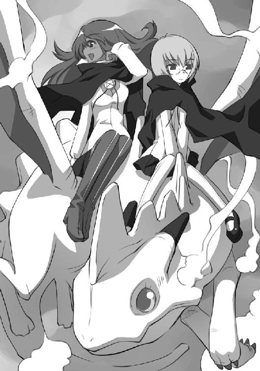
タバサは別に文句をつけるでなく、ウィンドドラゴンに命じた。
「馬二頭。食べちゃだめ」
ウィンドドラゴンは短く鳴いて了解の意を主人に伝えると、青い鱗を輝かせ、力強く翼を振り始めた。
高空に上り、その視力で馬を見つけるのである。草原を走る馬を見つけることなど、この風竜にとってはたやすいことであった。
自分の忠実な使い魔が仕事を開始したことを認めると、タバサはキュルケの手から本を奪い取り、尖った風竜の背びれを背もたれにしてページをめくり始めた。
トリステインの城下町を、才人とルイズは歩いていた。魔法学院からここまで乗ってきた馬は町の門のそばにある駅に預けてある。才人は、腰が痛くてたまらなかった。なにせ、生まれて初めて馬に乗ったのである。
「腰がいてぇ......」そうぼやきながら、ひょこひょこと歩く。
ルイズは、しかめつらをして、そんな才人を見つめた。
「情けない。馬にも乗ったことないなんて。これだから平民は......」
「うっせ。そんなヤツを三時間も馬に乗せるな」
「まさか歩くわけにはいかないでしょ」
それでも才人は、物珍しそうに辺りを見回した。白い石造りの街は、まるでテーマパークのようだ。魔法学院に比べると、質素ななりの人間が多かった。
道端で声を張り上げて、果物や肉や、籠などを売る商人たちの姿が、才人の外国気分を盛り上げる。というか異世界なのだが。
のんびり歩いたり、急いでるやつがいたり、老若男女取り混ぜ歩いている。その辺は才人の元いた世界とあまり変わりがないが、道は狭い。
「狭いな」
「狭いって、これでも大通りなんだけど」
「これで？」
道幅は五メートルもない。そこを大勢の人が行き来するものだから、歩くのも一苦労である。
「ブルドンネ街。トリステインで一番大きな通りよ。この先にトリステインの宮殿があるわ」
「宮殿に行くの？」
「女王陛下に拝謁してどうするのよ」
「是非ともスープの量を増やしてもらう」
才人がそう言ったら、ルイズは笑った。
道端には露店が溢れている。好奇心が強い才人は、いちいちじっくりと眺めずにはいられなかった。筵の上に並べられた、奇妙な形のカエルが入った壜を見つめていたら、ルイズに耳を引っ張られた。
「ほら、寄り道しない。スリが多いんだから！ あんた、上着の中の財布は大丈夫でしょうね？」
ルイズは、財布は下僕が持つものだ、と言って、財布をそっくり才人に持たせていたのである。中にはぎっしりと金貨が詰まっていた。ずっしりと重かった。
「あるよ、ちゃんと。こんな重いものスラれるかっての」
「魔法を使われたら、一発でしょ」
でも、メイジっぽい姿の人間はいなかった。才人は魔法学院で、メイジと平民を分ける術を覚えた。メイジは、とにかく、マントをつけているのである。あと、歩き方がもったいぶっている。ルイズに言わせると、貴族の歩き方だ、ということになる。
「普通の人しかいないじゃん」
「だって、貴族は全体の人口の一割いないのよ。あと、こんな下賎なところ滅多に歩かないわ」
「貴族がスリなんかすんのかよ」
「貴族は全員がメイジだけど、メイジのすべてが貴族ってわけじゃないわ。いろんな事情で、勘当されたり家を捨てたりした貴族の次男や三男坊なんかが、身をやつして傭兵になったり犯罪者になったり......、って聞いてる？」
もうすでに才人は聞いていない。今度は看板に夢中である。
「あの、壜の形した看板はなに？」
「酒場でしょ」
「あのバッテンの印は？」
「衛士の詰め所」
興味を引かれる看板を見つけるたびに、才人は立ち止まる。そのたびにルイズは、才人の腕を掴んで引っ張るのであった。
「わかったよ。急かすなよ。ちゅうか剣屋はどこだよ」
「こっちよ。剣だけ売ってるわけじゃないけど」
ルイズは、さらに狭い路地裏に入っていった。悪臭が鼻をつく。ゴミや汚物が、道端に転がっている。
「きたねえ」
「だからあんまり来たくないのよ」
四辻に出た。ルイズは、立ち止まると、辺りをきょろきょろと見回した。
「ピエモンの秘薬屋の近くだったから、この辺なんだけど......」
それから、一枚の銅の看板を見つけ、嬉しそうに呟いた。
「あ、あった」
見ると、剣の形をした看板が下がっていた。そこがどうやら、武器屋であるらしかった。
ルイズと才人は、石段を上り、羽扉をあけ、店の中に入っていった。
店の中は昼間だというのに薄暗く、ランプの灯りがともっていた。壁や棚に、所狭しと剣や槍が乱雑に並べられ、立派な甲冑が飾ってあった。
店の奥で、パイプをくわえていた五十がらみの親父が、入ってきたルイズを胡散臭げに見つめた。紐タイ留めに描かれた五芒星に気づく。それからパイプをはなし、ドスの利いた声を出した。
「旦那。貴族の旦那。うちはまっとうな商売してまさあ。お上に目をつけられるようなことなんか、これっぽっちもありませんや」
「客よ」ルイズは腕を組んで言った。
「こりゃおったまげた。貴族が剣を！ おったまげた！」
「どうして？」
「いえ、若奥さま。坊主は聖具をふる、兵隊は剣をふる、貴族は杖をふる、そして陛下はバルコニーからお手をおふりになる、と相場は決まっておりますんで」
「使うのはわたしじゃないわ。使い魔よ」
「忘れておりました。昨今は貴族の使い魔も剣をふるようで」
主人は、商売っ気たっぷりにお愛想を言った。それから、才人をじろじろと眺めた。
「剣をお使いになるのは、この方で？」
ルイズは頷いた。才人はすっかり、店に並んだ武器に夢中だった。うわ、すげ、これなにー、とか口の中でぶつぶつ呟きながら、剣に見入っている。
ルイズは、そんな才人を無視して言った。
「わたしは剣のことなんかわからないから。適当に選んでちょうだい」
主人はいそいそと奥の倉庫に消えた。彼は聞こえないように、小声で呟いた。
「......こりゃ、鴨がネギしょってやってきたわい。せいぜい、高く売りつけるとしよう」
彼は一メイルほどの長さの、細身の剣を持って現れた。
随分、華奢な剣である。片手で扱うものらしく、短めの柄にハンドガードがついていた。主人は思い出すように言った。
「そういや、昨今は宮廷の貴族の方々の間で下僕に剣を持たすのがはやっておりましてね。その際にお選びになるのが、このようなレイピアでさあ」
なるほど、きらびやかな模様がついていて、貴族に似合いの綺麗な剣だった。
「貴族の間で、下僕に剣を持たすのがはやってる？」
ルイズは尋ねた。主人はもっともらしく頷いた。
「へえ、なんでも、最近このトリステインの城下町を、盗賊が荒らしておりまして......」
「盗賊？」
「そうでさ。なんでも『土くれ』のフーケとかいう、メイジの盗賊が、貴族のお宝を散々盗みまくってるって噂で。貴族の方々は恐れて、下僕にまで剣を持たせる始末で。へえ」
ルイズは盗賊には興味がなかったので、じろじろと剣を眺めた。しかし、すぐに折れてしまいそうなほどに細い。才人は確か、この前もっと大きな剣を軽々と振っていた。
「もっと大きくて太いのがいいわ」
「お言葉ですが、剣と人には相性ってもんがございます。男と女のように。見たところ、若奥さまの使い魔とやらには、この程度が無難なようで」
「大きくて太いのがいいと、言ったのよ」
ルイズは言った。ぺこりと頭を下げると、主人は奥に消えた。その際に、小さく「素人が！」と呟くのを忘れない。
今度は立派な剣を油布で拭きながら、主人は現れた。
「これなんかいかがです？」
見事な剣だった。一・五メイルはあろうかという大剣だった。柄は両手で扱えるように長く、立派な拵えである。ところどころに宝石が散りばめられ、鏡のように両刃の刀身が光っている。見るからに切れそうな、頑丈な大剣であった。
「店一番の業物でさ。貴族のお供をさせるなら、このぐらいは腰から下げて欲しいものですな。といっても、こいつを腰から下げるのは、よほどの大男でないと無理でさあ。やっこさんなら、背中にしょわんといかんですな」
才人も近寄ってきて、その剣を見つめた。
「すげえ。この剣すげえ」
一瞬で、欲しくなってしまった。なんとも、見事な剣である。
才人が気に入ったのを見て、ルイズはこれでいいだろうと思った。店一番と親父が太鼓判を押したのも気に入った。貴族はとにかく、なんでも一番でないと気がすまないのである。
「おいくら？」ルイズは尋ねた。
「何せこいつを鍛えたのは、かの高名なゲルマニアの錬金魔術師シュペー卿で。魔法がかかってるから鉄だって一刀両断でさ。ごらんなさい、ここにその名が刻まれているでしょう？ おやすかあ、ありませんぜ」
主人はもったいぶって柄に刻まれた文字を指差した。
「わたしは貴族よ」ルイズも、胸をそらせて言った。主人は淡々と値段を告げた。
「エキュー金貨で二千。新金貨なら三千」
「立派な家と、森つきの庭が買えるじゃないの」
ルイズは呆れて言った。才人はさっぱり相場と貨幣価値がわからないので、ぼけっと突っ立っていた。
「名剣は城に匹敵しますぜ。屋敷で済んだらやすいもんでさ」
「新金貨で、百しか持ってきてないわ」
ルイズは貴族なので、買い物の駆け引きがへたくそだった。あっけなく財布の中身をばらしてしまう。主人は話にならない、というように手を振った。
「まともな大剣なら、どんなに安くても相場は二百でさ」
ルイズは顔を赤くした。剣がそんなに高いとは知らなかったのだ。
「なんだよ。これ、買えないの？」
才人はつまらなそうに言った。
「そうよ。買えるのにしましょう」
「貴族だなんだって威張ってるわりには......」
才人がそう呟くと、ルイズはきっ、と才人を睨んだ。
「誰かさんの大怪我のせいで、秘薬の代金がいくらかかったと思ってるの？」
才人は素直に頭を下げた。
「ごめん」
それでも、才人は名残惜しそうに剣を撫で回した。
「これ、気に入ったんだけどな......」
そのとき......、乱雑に積み上げられた剣の中から、声がした。低い、男の声だった。
「生意気言うんじゃねえ。坊主」
ルイズと才人は声の方を向いた。主人が、頭を抱えた。
「おめえ、自分を見たことがあるのか？ その体で剣をふる？ おでれーた！ 冗談じゃねえ！ おめえにゃ棒っきれがお似合いさ！」
「なんだと？」
才人はいきなり悪口を言われたので、腹が立った。しかし、声の聞こえてくる方には人影はない。ただ、乱雑に剣が積んであるだけである。
「わかったら、さっさと家に帰りな！ おめえもだよ！ 貴族の娘っ子！」
「失礼ね！」
才人はつかつかと声のする方に近づいた。
「なんだよ。誰もいないじゃん」
「おめえの目は節穴か！」
才人は後じさった。なんと、声の主は一本の剣であった。錆の浮いたボロボロの剣から、声は発されているのであった。
「剣がしゃべってる！」
才人がそういうと、店の主人が怒鳴り声をあげた。
「やい！ デル公！ お客様に失礼なことを言うんじゃねえ！」
「デル公？」
才人は、その剣をまじまじと見つめた。さっきの大剣と長さは変わらないが、刀身が細かった。薄手の長剣である。ただ、表面には錆が浮き、お世辞にも見栄えがいいとは言えなかった。
「お客様？ 剣もまともにふれねえような小僧っこがお客様？ ふざけんじゃねえよ！ 耳をちょんぎってやらあ！ 顔を出せ！」
「それって、インテリジェンスソード？」
ルイズが、当惑した声をあげた。
「そうでさ、若奥さま。意思を持つ魔剣、インテリジェンスソードでさ。いったい、どこの魔術師が始めたんでしょうかねえ、剣をしゃべらせるなんて......。とにかく、こいつはやたらと口は悪いわ、客にケンカは売るわで閉口してまして......。やいデル公！ これ以上失礼があったら、貴族に頼んでてめえを溶かしちまうからな！」
「おもしれ！ やってみろ！ どうせこの世にゃもう、飽き飽きしてたところさ！ 溶かしてくれるんなら、上等だ！」
「やってやらあ！」
主人が歩き出した。しかし、才人はそれを遮る。
「もったいないよ。しゃべる剣なんて面白いじゃないか」
それから才人は、まじまじとその剣を見つめた。
「お前、デル公っていうのか」
「ちがわ！ デルフリンガーさまだ！ おきやがれ！」
「名前だけは、一人前でさ」
「俺は平賀才人だ。よろしくな」
剣は黙った。じっと、才人を観察するかのように黙りこくった。
それからしばらくして、剣は小さな声でしゃべり始めた。
「おでれーた。見損なってた。てめ、『使い手』か」
「『使い手』？」
「ふん、自分の実力も知らんのか。まあいい。てめ、俺を買え」
「買うよ」
才人は言った。すると剣は、黙りこくった。
「ルイズ。これにする」
ルイズはいやそうな声をあげた。
「え～～～。そんなのにするの？ もっと綺麗でしゃべらないのにしなさいよ」
「いいじゃんかよ。しゃべる剣なんて面白い」
「それだけじゃないの」
ルイズはぶつくさ文句を言ったが、他に買えそうな剣もないので、主人に尋ねた。
「あれ、おいくら？」
「あれなら、百で結構でさ」
「安いじゃない」
「こっちにしてみりゃ、厄介払いみたいなもんでさ」
主人は手をひらひらと振りながら言った。
才人は上着のポケットからルイズの財布を取り出すと、中身をカウンターの上にぶちまけた。金貨がじゃらじゃらと落ちる。主人は慎重に枚数を確かめると、頷いた。
「毎度」剣を取り、鞘に収めると才人に手渡した。
「どうしても煩いと思ったら、こうやって鞘に入れればおとなしくなりまさあ」
才人は頷いて、デルフリンガーという名前の剣を受け取った。
武器店から出てきた才人とルイズを、見つめる二つの影があった。キュルケとタバサである。キュルケは、路地の陰から二人を見つめると、唇をギリギリと噛み締めた。
「ゼロのルイズったら......、剣なんか買って気を引こうとしちゃって......。あたしが狙ってるってわかったら、早速プレゼント攻撃？ なんなのよ～～～ッ！」
キュルケは地団駄を踏んだ。タバサはもう自分の仕事は終わりだとばかりに、本を読んでいる。ウィンドドラゴンのシルフィードは高空をぐるぐる回っている。なんなくルイズと才人の馬を見つけた一行は、ここまで後をつけてきたのであった。
キュルケは、二人が見えなくなったあと、武器屋の戸をくぐった。主人がキュルケを見て目を丸くした。
「おや！ 今日はどうかしてる！ また貴族だ！」
「ねえご主人」
キュルケは髪をかきあげると、色っぽく笑った。むんとする色気に押されて、主人は思わず顔を赤らめる。なんだか、色気が熱波として、襲ってくるようだ。
「今の貴族が、何を買っていったかご存知？」
「へ、へえ。剣でさ」
「なるほど、やっぱり剣ね......。どんな剣を買っていったの？」
「へえ、ボロボロの大剣を一振り」
「ボロボロ？ どうして？」
「あいにく、持ち合わせが足りなかったようで。へえ」
キュルケは、手を顎の下にかまえ、おっほっほ！ と大声で笑った。
「貧乏ね！ ヴァリエール！ 公爵家が泣くわよ！」
「若奥様も、剣をお買い求めで？」
主人は、商売のチャンスだとばかりに身を乗り出した。今度の貴族の娘は、どうやらさっきのやせっぽちに比べて、胸も財布の中身も豊かなようだ。
「ええ。みつくろってくださいな」
主人はもみ手をしながら、奥に消えた。果たして、持ってきたのは先ほどルイズと才人に見せた立派な大剣だった。
「あら。綺麗な剣じゃない」
「若奥さま、さすがお目が高くていらっしゃる。この剣は、先ほどの貴族のお連れ様が欲しがっていたものでさ。しかし、お値段の加減が釣り合いませんで。へえ」
「ほんと？」
貴族のお連れ様？ つまり、才人が欲しがっていたものだろう。
「さようで。何せこいつを鍛えたのは、かの高名なゲルマニアの錬金魔術師シュペー卿で。魔法がかかってるから鉄だって一刀両断でさ。ごらんなさい、ここにその名が刻まれているでしょう？」
主人は先ほどと同じ口上を述べた。
キュルケは頷いた。
「おいくら？」
主人は、キュルケを値踏みした。どうやら先ほどの貴族より羽振りはよさそうだ。
「へえ。エキュー金貨で三千。新金貨で四千五百」
「ちょっと高くない？」キュルケの眉が上がった。
「へえ、名剣は、釣り合う黄金を要求するもんでさ」
キュルケはちょっと考え込むと、主人の顔に自分の体を近づけた。
「ご主人......、ちょっとお値段が張りすぎじゃございませんこと？」
顎の下をキュルケの手で撫でられて、主人は呼吸ができなくなった。
ものすごい色気が、親父の脳髄を直撃する。
「へ、へえ......。名剣は......」
キュルケはカウンターの上に腰掛けた。左の足を持ち上げる。
「お値段、張りすぎじゃ、ございませんこと？」
ゆっくりと、投げ出した足をカウンターの上に持ち上げた。主人の目は、キュルケの太腿に釘付けになった。
「さ、さようで？ では、新金貨で四千......」
キュルケの足が、さらに持ち上がった。太腿の奥が、見えそうになる。
「いえ！ 三千で結構でさ！」
「暑いわね......」
キュルケは答えずに、シャツのボタンを外し始めた。
「シャツ、脱いでしまおうかしら......。よろしくて？ ご主人」
主人に、熱っぽい流し目を送った。
「おお、お値段を間違えておりました！ 二千で！ へえ！」
キュルケはシャツのボタンを一個外した。
それから、主人の顔を見上げる。
「千八百で！ へえ！」
再び、一個外した。キュルケの胸の谷間が、あらわになる。それからまた、主人の顔を見上げた。
「千六百で！ へえ！」
キュルケは、ボタンを外す指を止めた。今度は、スカートの裾を持ち上げようとした。
その指が途中で止まる。主人が哀れな表情になった。
「千よ」
キュルケは言い放った。再び、するするとスカートの裾が持ち上がる。主人は、息を荒くしてそれを見つめていた。
その指がぴたっと止まる。主人は悲しそうな声をあげた。
「あ、ああ......」
キュルケは、スカートの裾を戻し始めた。そして、希望の値段を繰り返し告げた。
「千」
「へえ！ 千で結構でさ！」
キュルケはカウンターから、すっと降りると、さらさらと小切手を書いた。
それをカウンターの上に叩きつける。
「買ったわ」
そして、剣をつかむと、さっさと店を出て行った。
主人は、呆然として、カウンターの上の小切手を見つめていた。
急激に冷静さを取り戻す。頭を抱えた。
「あの剣を千で売っちまったよ！」
主人は引き出しから酒壜を取り出した。
「ええい！ 今日はもう、閉店だ！」
第四章 土くれのフーケ
『土くれ』の二つ名で呼ばれ、トリステイン中の貴族を恐怖に陥れているメイジの盗賊がいる。土くれのフーケである。
フーケは北の貴族の屋敷に、宝石が散りばめられたティアラがあると聞けば、早速赴きこれを頂戴し、南の貴族の別荘に先帝から賜りし家宝の杖があると聞けば、別荘を破壊してこれを頂戴し、東の貴族の豪邸に、アルビオンの細工師が腕によりをかけて作った真珠の指輪があると聞いたら一も二もなく頂戴し、西の貴族のワイン倉に、値千金、百年もののヴィンテージワインがあると聞けば喜び勇んで頂戴する。
まさに神出鬼没の大怪盗。メイジの大怪盗。それが土くれのフーケなのであった。
そしてフーケの盗み方は、繊細に屋敷に忍び込んだかと思えば、別荘を粉々に破壊して、大胆に盗み出したり、白昼堂々王立銀行を襲ったと思えば、夜陰に乗じて邸宅に侵入する。
行動パターンが読めず、トリステインの治安を預かる王室衛士隊の魔法衛士たちも、振り回されているのだった。
しかし、盗みの方法には共通する点があった。フーケは狙った獲物が隠されたところに忍び込むときには、主に『錬金』の魔法を使う。『錬金』の呪文で扉や壁を粘土や砂に変え、穴をあけて潜り込むのである。
貴族だってバカではないから当然対策は練っている。屋敷の壁やドアは、強力なメイジに頼んでかけられた『固定化』の魔法で『錬金』の魔法から守られている。しかし、フーケの『錬金』は強力であった。大抵の場合、『固定化』の呪文などものともせず、ただの土くれに壁や扉を変えてしまうのだ。
『土くれ』は、そんな盗みの技からつけられた、二つ名なのであった。
忍び込むばかりでなく、力任せに屋敷を破壊するときは、フーケは巨大な土ゴーレムを使う。その身の丈はおよそ三十メイル。
城でも壊せるような、巨大な土ゴーレムである。集まった魔法衛士たちを蹴散らし、白昼堂々とお宝を盗み出したこともある。
そんな土くれのフーケの正体を見たものはいない。男か、女かもわかっていない。ただわかっていることは......。
おそらくトライアングルクラスの『土』系統のメイジであること。
そして、犯行現場の壁に『秘蔵の○○、確かに領収いたしました。土くれのフーケ』と、ふざけたサインを残していくこと。
そして......、いわゆるマジックアイテム......、強力な魔法が付与された数々の高名なお宝が何より好きということであった。
巨大な二つの月が、五階に宝物庫がある魔法学院の本塔の外壁を照らしている。
二つの月の光が、壁に垂直に立った人影を浮かび上がらせていた。
土くれのフーケであった。
長い、青い髪を夜風になびかせ悠然と佇む様に、国中の貴族を恐怖に陥れた怪盗の風格が漂っている。
フーケは足から伝わってくる、壁の感触に舌打ちをした。
「さすがは魔法学院本塔の壁ね......。物理衝撃が弱点？ こんなに厚かったら、ちょっとやそっとの魔法じゃどうしようもないじゃないの！」
足の裏で、壁の厚さを測っている。『土』系統のエキスパートであるフーケにとって、そんなことはぞうさもないのであった。
「確かに、『固定化』の魔法以外はかかってないみたいだけど......、これじゃ私のゴーレムの力でも、壊せそうにないね......」
フーケは、腕を組んで悩んだ。
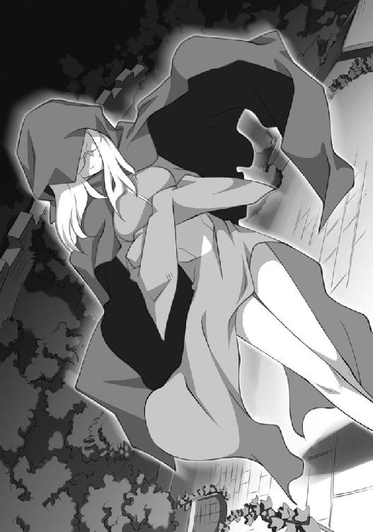
強力な『固定化』の呪文がかかっているため、『錬金』の呪文で壁に穴をあけるわけにもいかない。
「やっとここまで来たってのに......」
フーケは歯噛みをした。
「かといって、『破壊の杖』を諦めるわけにゃあ、いかないね......」
フーケの目がきらりと光った。そして腕組みをしたまま、じっと考え始めた。
フーケが本塔の壁に足をつけて、悩んでいる頃......。ルイズの部屋では騒動が持ち上がっていた。
ルイズとキュルケは、お互い睨みあっている。才人は自分の『ニワトリの巣』の上で、キュルケが持ってきた名剣に夢中であった。タバサはベッドに座り、本を広げていた。
「どういう意味？ ツェルプストー」
腰に両手を当てて、ぐっと不倶戴天の敵を睨んでいるのは、ルイズである。
キュルケは悠然と、恋の相手の主人の視線を受け流す。
「だから、サイトが欲しがってる剣を手に入れたから、そっち使いなさいって言ってるのよ」
「おあいにくさま。使い魔の使う道具なら間に合ってるの。ねえ、サイト」
しかし、才人はそんなルイズの言葉とは裏腹に、キュルケが手に入れた剣に夢中だった。鞘から取り出し、じっと剣に見入っている。
剣を握ったら、案の定、左手のルーンが光りだした。それと同時に、体が軽く、羽になったように感じた。素振りをしたくなったが、部屋の中なので諦めた。
いったい、どんな理屈で自分の左手のルーンは光るのだろう？
わかっているのは、剣を握ると光るということだけである。
しかし......。今はそれより見事な剣に夢中であった。
「すげえ......、やっぱこれ、すげえ......。ピカピカ光ってるよ！」
ルイズはそんな才人を蹴飛ばした。
「なにすんだよ！」
「返しなさい。あんたには、あのしゃべるのがあるじゃない」
「や、確かに、あれはしゃべって面白いけど......」
サビサビのボロボロである。どうせ使うなら、綺麗な方がいいに決まっている。しかも、キュルケはこの剣をタダでくれるというのだから......。
「嫉妬はみっともないわよ？ ヴァリエール」
キュルケは、勝ち誇った調子で言った。
「嫉妬？ 誰が嫉妬してるのよ！」
「そうじゃない。サイトが欲しがってた剣を、あたしがなんなく手に入れてプレゼントしたもんだから、嫉妬してるんじゃなくって？」
「誰がよ！ やめてよね！ ツェルプストーの者からは豆の一粒だって恵んでもらいたくない！ そんだけよ！」
キュルケは才人を見た。才人はルイズが取り上げた大剣を名残惜しそうに見つめている。
「見てごらんなさい？ サイトはこの剣に夢中じゃないの。知ってる？ この剣を鍛えたのはゲルマニアの錬金魔術師シュペー卿だそうよ？」
それからキュルケは、熱っぽい流し目を才人に送った。
「ねえ、あなた。よくって？ 剣も女も、生まれはゲルマニアに限るわよ？ トリステインの女ときたら、このルイズみたいに嫉妬深くって、気が短くって、ヒステリーで、プライドばっかり高くって、どうしようもないんだから」
ルイズはキュルケをぐっと睨みつけた。
「なによ。ホントのことじゃないの」
「へ、へんだ。あんたなんかただの色ボケじゃない！ なあに？ ゲルマニアで男を漁りすぎて相手にされなくなったから、トリステインまで留学して来たんでしょ？」
ルイズは冷たい笑みを浮かべて、キュルケを挑発した。声が震えている。相当頭にきているようだ。
「言ってくれるわね。ヴァリエール......」
キュルケの顔色が変わった。ルイズが勝ち誇ったように言った。
「なによ。ホントのことでしょう？」
二人は同時に自分の杖に手をかけた。
それまで、じっと本を読んでいたタバサが、二人より早く自分の杖をふる。
つむじ風が舞い上がり、キュルケとルイズの手から、杖を吹き飛ばした。
「室内」
タバサは淡々と言った。
ここでやったら危険であると言いたいのであろう。
「なにこの子。さっきからいるけど」
ルイズが忌々しげに呟いた。キュルケが答える。
「あたしの友達よ」
「なんで、あんたの友達がわたしの部屋にいるのよ」
キュルケは、ぐっとルイズを睨んだ。
「いいじゃない」
「よ、よお」
才人は、じっと本を読んでいるタバサに声をかけた。返事はない。本のページを黙々とめくっている。かなり無口なようだ。
ルイズとキュルケは、ぐっと睨み合ったままだ。キュルケが視線を逸らして言った。
「じゃあ、サイトに決めてもらいましょうか」
「俺が？ 俺？」
いきなり自分に振られたので才人は戸惑う。
「そうよ。あんたの剣でモメてんだから」
ルイズもぐっと睨んだ。才人は悩んだ。剣自体では、キュルケが買ってくれたピカピカの方に心が傾いている。
しかし、ルイズはキュルケの剣を選んだら、きっと自分を許さない。飯を一週間抜かれるかもしれない。飯はシエスタに頼めば食わせてくれるだろうが......。
才人はルイズを見た。ぐっと自分を睨んでいる。この前、大怪我したとき、ルイズは自分を看病してくれた......。生意気で、高慢ちきだが、恩知らずはよくない。それに、容姿的には才人はルイズの方が好みなのであった。
でも......、キュルケだって、あの高い剣を自分のために買ってきてくれたのだ。目の覚めるような美人のくせに、自分を好いてくれている。この先、キュルケみたいな美人に好かれることは、一生ないだろう。
そう思うと選べない。剣を選ぶということは、すなわち二人のうち、どちらかを選ぶということである。
「どっち？」
キュルケが睨む。ルイズが睨む。
「その、二本とも、ってだめ？」
才人はてへっと可愛く頭をかいた。二人に同時に蹴られて、才人は床に転がった。
「ねえ」
キュルケはルイズに向き直った。
「なによ」
「そろそろ、決着をつけませんこと？」
「そうね」
「あたしね、あんたのこと、だいっきらいなのよ」
「わたしもよ」
「気が合うわね」
キュルケは微笑んだあと、目を吊り上げた。
ルイズも、負けじと胸を張った。二人は同時に怒鳴った。
「決闘よ！」
「やめとけよ」
才人が呆れて言った。しかし、ルイズもキュルケも、お互い怒りをむき出しにして睨み合っているので、才人のセリフなんか聞いていなかった。
「もちろん、魔法でよ？」
キュルケが、勝ち誇ったように言った。
ルイズは唇を噛み締めたが、すぐに頷いた。
「ええ。望むところよ」
「いいの？ ゼロのルイズ。魔法で決闘で、大丈夫なの？」
小ばかにした調子で、キュルケが呟く。ルイズは頷いた。自信はない。もちろん、ない。でも、ツェルプストー家の女に魔法で勝負と言われては、引き下がれない。
「もちろんよ！ 誰が負けるもんですか！」
本塔の外壁に張りついていたフーケは、誰かが近づく気配を感じた。
とんっと壁を蹴り、すぐに地面に飛び降りる。地面にぶつかる瞬間、小さく『レビテーション』を唱え、回転して勢いを殺し、羽毛のように着地する。それからすぐに中庭の植え込みに消えた。
中庭に現れたのは、ルイズとキュルケと、タバサ、そして才人であった。
「じゃあ、始めましょうか」
キュルケが言った。才人が心配そうに言った。
「ほんとにお前ら、決闘なんかするのかよ」
「そうよ」
ルイズもやる気満々である。
「危ないからやめろよ......」
呆れた声で、才人は言った。
「確かに、怪我するのもバカらしいわね」
キュルケが言った。
「そうね」ルイズも頷いた。
タバサがキュルケに近づいて、何かを呟く。それから、才人を指差した。
「あ、それいいわね！」
キュルケが微笑む。
キュルケは、ルイズにも呟いた。
「あ、それはいいわ」
ルイズも頷いた。
三人は一斉に才人の方を向いた。
才人は、なんだかとても嫌な予感がした。
「おーい。本気か？ お前ら」
才人は情けない声で言ったが、誰も返事をしてくれない。
本塔の上から才人はロープで縛られ、吊るされ、空中にぶら下がっている。やっぱりどちらか選べばよかった、と思った。
はるか地面の下には、小さくキュルケとルイズの姿が見える。夜とはいえ、二つの月のおかげでかなり視界は明るい。塔の屋上には、ウィンドドラゴンに跨ったタバサの姿が見えた。風竜は、二本の剣をくわえている。
二つの月だけが、優しく才人を照らしていた。
キュルケとルイズは、地面に立って才人を見上げている。ロープに縛られ、上から吊るされた才人が、小さく揺れているのが二人の目に見えた。
キュルケが腕を組んで言った。
「いいこと？ ヴァリエール。あのロープを切って、サイトを地面に落としたほうが勝ちよ。勝った方の剣をサイトは使う。いいわね？」
「わかったわ」ルイズは硬い表情で頷いた。
「使う魔法は自由。ただし、あたしは後攻。そのぐらいはハンデよ」
「いいわ」
「じゃあ、どうぞ」
ルイズは杖を構えた。屋上のタバサが、才人を吊るしたロープを振り始めた。才人が左右に揺れる。『ファイヤーボール』等の魔法の命中率は高い。動かさなければ、簡単にロープに命中してしまう。
しかし......、命中するかしないかを気にする前に、ルイズには問題があった。魔法が成功するかしないか、である。
ルイズは悩んだ。どれなら成功するだろう？ 『風』系統？ 『火』系統？
『水』や、『土』は論外だった。ロープを切るための攻撃魔法が少ない。やはり、ここは『火』である。そのときになって、キュルケが『火』が得意であることを思い出す。
キュルケのファイヤーボールは才人のロープをなんなく切るだろう。失敗は許されない。
悩んだ挙句、ルイズは『ファイヤーボール』を使うことに決めた。小さな火球を目標めがけて打ち込む魔法である。
短くルーンを呟く。失敗したら......、才人はキュルケが買ってきた剣を使うことになる。プライドの高いルイズに許せることではなかった。
呪文詠唱が完成する。気合を入れて、杖を振った。
呪文が成功すれば、火の玉がその杖の先から飛び出すはずであった。
しかし、杖の先からは何も出ない。一瞬遅れて、才人の後ろの壁が爆発した。
爆風で、才人の体が揺れる。
「殺す気か！」と才人の怒鳴り声が聞こえてくる。ロープはなんともない。爆風で切れてくれたら、と思ったが甘かったようだ。本塔の壁にはヒビが入っている。キュルケは......、腹を抱えて笑っていた。
「ゼロ！ ゼロのルイズ！ ロープじゃなくて壁を爆発させてどうするの！ 器用ね！」
ルイズは憮然とした。
「あなたって、どんな魔法を使っても爆発させるんだから！ あっはっは！」
ルイズは悔しそうに拳を握り締めると、膝をついた。
「さて、わたしの番ね......」
キュルケは、狩人の目で才人を吊るしたロープを見据えた。タバサがロープを揺らしているので、狙いがつけづらい。
それでもキュルケは余裕の笑みを浮かべた。ルーンを短く呟き、手慣れた仕草で杖を突き出す。『ファイヤーボール』はキュルケの十八番である。
杖の先から、メロンほどの大きさの火球が現れ、才人のロープめがけて飛んだ。火球は狙いたがわずロープにぶつかり、一瞬でロープを燃やし尽くした。
才人が地面に落ちる。屋上にいたタバサが杖を振り、才人に『レビテーション』をかけてくれた。加減された呪文のおかげで、ゆっくりと才人は地面に降りてきた。
キュルケは勝ち誇って、笑い声をあげた。
「あたしの勝ちね！ ヴァリエール！」
ルイズはしょぼんとして座り込み、地面の草をむしり始めた。
フーケは、中庭の植え込みの中から一部始終を見守っていた。ルイズの魔法で、宝物庫の辺りの壁にヒビが入ったのを見届ける。
いったい、あの魔法はなんなのだろう？ 唱えた呪文は『ファイヤーボール』なのに、杖の先から火球は飛ばなかった。代わりに、壁が爆発した。
あんな風にモノが爆発する呪文なんて見たことがない。
フーケは頭を振った。それより、このチャンスを逃してはいけない。フーケは、呪文を詠唱し始めた。長い詠唱だった。
詠唱が完成すると、地面に向けて杖を振る。
フーケは薄く笑った。
音を立て、地面が盛り上がる。
土くれのフーケが、その本領を発揮したのだ。
「残念ね！ ヴァリエール！」
勝ち誇ったキュルケは、大声で笑った。ルイズは勝負に負けたのが悔しいのか、膝をついたまましょぼんと肩を落としている。
才人は複雑な気分で、ルイズを見つめた。それから、低い声で言った。
「......まずはロープを解いてくれ」
きっちりロープで体をぐるぐる巻きにされている。身動きが取れない。
キュルケは微笑んだ。
「ええ、喜んで」
そのときである。
背後に巨大な何かの気配を感じて、キュルケは振り返った。
我が目を疑う。
「な、なにこれ！」
キュルケは口を大きくあけた。巨大な土ゴーレムがこちらに歩いてくるではないか！
「きゃぁああああああああ！」
キュルケは悲鳴をあげて逃げ出した。才人はその背中に向かって叫んだ。
「おい！ 置いていくなよ！」
迫り来る巨大なゴーレムが見える。才人はパニックに陥った。
「な、なんだこりゃ！ でけえ！」
才人は逃げようともがいたが、ロープで体をぐるぐる巻きにされているので逃げられない。
我に返ったルイズが才人に駆け寄る。
「な、なんで縛られてんのよ！ あんたってば！」
「お前らが縛ったんだろうが！」
そんな二人の頭上で、ゴーレムの足が持ち上がる。
才人は観念した。動けない。
「ルイズ！ 逃げろ！」才人は怒鳴った。
「く、このロープ......」
ルイズは一生懸命にロープを外そうともがいている。
ゴーレムの足が落ちてくる。才人は目をつむった。
間一髪、タバサのウィンドドラゴンが滑り込んだ。才人とルイズを両足でがっしり掴むと、ゴーレムの足と地面の間をすり抜ける。
才人たちがいたところに、ずしん！ と音を立て、ゴーレムの足がめり込む。
ウィンドドラゴンの足にぶら下がった二人は、上空からゴーレムを見下ろした。
才人が震える声で呟く。
「な、なんなんだよ。あれ......」
「わかんないけど......。巨大な土ゴーレムね」
「あんなでかいの！ いいのかよ！」
「......あんな大きい土ゴーレムを操れるなんて、トライアングルクラスのメイジに違いないわ」
才人は唇を噛んだ。さっき、危険を顧みず、ルイズが自分のロープを外そうとしてくれたことを思い出した。
「いいけどよ......、お前、なんで逃げなかったんだよ」
ルイズはきっぱりと言った。
「使い魔を見捨てるメイジはメイジじゃないわ」
才人は黙って、ルイズを見つめた。なんだか、とてもルイズが眩しく見えた。
フーケは、巨大な土ゴーレムの肩の上で、薄い笑いを浮かべていた。
逃げ惑うキュルケや、上空を舞うウィンドドラゴンの姿が見えたが気にしない。フーケは頭からすっぽりと黒いローブに身を包んでいる。その下の自分の顔さえ見られなければ、問題はない。
ヒビが入った壁に向かって、土ゴーレムの拳が打ち下ろされた。
フーケは、インパクトの瞬間、ゴーレムの拳を鉄に変えた。
壁に拳がめり込む。バカッと鈍い音がして、壁が崩れる。黒いローブの下で、フーケは微笑んだ。
フーケは土ゴーレムの腕を伝い、壁にあいた穴から、宝物庫の中に入り込んだ。
中には様々な宝物があった。しかし、フーケの狙いはただ一つ、『破壊の杖』である。
様々な杖が壁にかかった一画があった。その中に、どう見ても魔法の杖には見えない品があった。全長は一メイルほどの長さで、見たことのない金属でできていた。フーケはその下にかけられた鉄製のプレートを見つめた。
『破壊の杖。持ち出し不可』と書いてある。フーケの笑みがますます深くなった。
フーケは『破壊の杖』を取った。
その軽さに驚いた。一体、何でできているのだろう？
しかし、今は考えている暇はない。急いでゴーレムの肩に乗った。
去り際に杖を振る。すると、壁に文字が刻まれた。
『破壊の杖、確かに領収いたしました。土くれのフーケ』
再び黒ローブのメイジを肩に乗せ、ゴーレムは歩き出した。魔法学院の城壁をひとまたぎで乗り越え、ずしんずしんと地響きを立てて草原を歩いていく。
そのゴーレムの上空を、ウィンドドラゴンが旋回する。
その背に跨ったタバサが身長より長い杖を振る。『レビテーション』で、才人とルイズの体が、足からウィンドドラゴンの背に移動した。タバサが再び身長より長い杖を振る。かまいたちのように空気が震え、才人の身を包んだロープが切れた。
「ありがとう」
才人はタバサに礼を言った。タバサは無表情に頷いた。
才人は巨大なゴーレムを見つめながら、ルイズに尋ねた。
「あいつ、壁をぶち壊してたけど......、何したんだ？」
「宝物庫」タバサが答える。
「あの黒ローブのメイジ、壁の穴から出てきたときに、何かを握っていたわ」
「泥棒か。しかし、随分派手に盗んだもんだな......」
草原の真ん中を歩いていた巨大なゴーレムは、突然ぐしゃっと崩れ落ちた。
巨大ゴーレムは大きな土の山になった。
三人は地面に降りた。月明かりに照らされたこんもりと小山のように盛り上がった土山以外、何もない。
そして、肩に乗った黒ローブのメイジの姿は、消えうせていた。
第五章 破壊の杖
翌朝......。
トリステイン魔法学院では、昨夜からの蜂の巣をつついた騒ぎが続いていた。
何せ、秘宝の『破壊の杖』が盗まれたのである。
それも、巨大なゴーレムが、壁を破壊するといった大胆な方法で。
宝物庫には、学院中の教師が集まり、壁にあいた大きな穴を見て、口をあんぐりとあけていた。
壁には、『土くれ』のフーケの犯行声明が刻まれている。
『破壊の杖、確かに領収いたしました。土くれのフーケ』
教師たちは、口々に好き勝手なことを喚いている。
「土くれのフーケ！ 貴族たちの財宝を荒らしまくっているという盗賊か！ 魔法学院にまで手を出しおって！ 随分とナメられたもんじゃないか！」
「衛兵はいったい何をしていたんだね？」
「衛兵などあてにならん！ 所詮は平民ではないか！ それより当直の貴族は誰だったんだね！」
ミセス・シュヴルーズは震え上がった。昨晩の当直は、自分であった。まさか、魔法学院を襲う盗賊がいるなどとは夢にも思わずに、当直をサボり、ぐうぐう自室で寝ていたのであった。本来なら、夜通し門の詰め所に待機していなければならないのに。
「ミセス・シュヴルーズ！ 当直はあなたなのではありませんか！」
教師の一人が、さっそくミセス・シュヴルーズを追及し始めた。オスマン氏が来る前に責任の所在を明らかにしておこうというのだろう。
ミセス・シュヴルーズはボロボロと泣き出してしまった。
「も、申し訳ありません......」
「泣いたって、お宝は戻ってはこないのですぞ！ それともあなた、『破壊の杖』の弁償できるのですかな！」
「わたくし、家を建てたばかりで......」
ミセス・シュヴルーズは、よよよと床に崩れ落ちた。
そこにオスマン氏が現れた。
「これこれ。女性を苛めるものではない」
ミセス・シュヴルーズを問い詰めていた教師が、オスマン氏に訴える。
「しかしですな！ オールド・オスマン！ ミセス・シュヴルーズは当直なのに、ぐうぐう自室で寝ていたのですぞ！ 責任は彼女にあります！」
オスマン氏は長い口ひげをこすりながら、口から唾を飛ばして興奮するその教師を見つめた。
「ミスタ......、なんだっけ？」
「ギトーです！ お忘れですか！」
「そうそう。ギトー君。そんな名前じゃったな。君は怒りっぽくていかん。さて、この中でまともに当直をしたことのある教師は何人おられるのかな？」
オスマン氏は、辺りを見回した。教師たちはお互い、顔を見合わせると、恥ずかしそうに顔を伏せた。名乗り出るものはいなかった。
「さて、これが現実じゃ。責任があるとするなら、我々全員じゃ。この中の誰もが......、もちろん私を含めてじゃが......、まさかこの魔法学院が賊に襲われるなど、夢にも思っていなかった。何せ、ここにいるのは、ほとんどがメイジじゃからな。誰が好き好んで、虎穴に入るのかっちゅうわけじゃ。しかし、それは間違いじゃった」
オスマン氏は、壁にぽっかりあいた穴を見つめた。
「このとおり、賊は大胆にも忍び込み、『破壊の杖』を奪っていきおった。つまり、我々は油断していたのじゃ。責任があるとするなら、我ら全員にあるといわねばなるまい」
ミセス・シュヴルーズは、感激してオスマン氏に抱きついた。
「おお、オールド・オスマン、あなたの慈悲のお心に感謝いたします！ わたくしはあなたをこれから父と呼ぶことにいたします！」
オスマン氏はそんなシュヴルーズの尻を撫でた。
「ええのじゃ。ええのよ。ミセス......」
「わたくしのお尻でよかったら！ そりゃもう！ いくらでも！ はい！」
オスマン氏はこほんと咳をした。誰も突っ込んでくれない。場を和ませるつもりで尻を撫でたのである。皆、一様に真剣な目でオスマン氏の言葉を待っていた。
「で、犯行の現場を見ていたのは誰だね？」
オスマン氏が尋ねた。
「この三人です」
コルベールがさっと進み出て、自分の後ろに控えていた三人を指差した。
ルイズにキュルケにタバサの三人である。才人もそばにいたが、使い魔なので数には入っていない。
「ふむ......、君たちか」
オスマン氏は、興味深そうに才人を見つめた。才人はどうして自分がじろじろ見られるのかわからずに、かしこまった。
「詳しく説明したまえ」
ルイズが進み出て、見たままを述べた。
「あの、大きなゴーレムが現れて、ここの壁を壊したんです。肩に乗ってた黒いメイジがこの宝物庫の中から何かを......、その『破壊の杖』だと思いますけど......、盗み出したあと、またゴーレムの肩に乗りました。ゴーレムは城壁を越えて歩き出して......、最後には崩れて土になっちゃいました」
「それで？」
「後には、土しかありませんでした。肩に乗ってた黒いローブを着たメイジは、影も形もなくなってました」
「ふむ......」
オスマン氏はひげを撫でた。
「後を追おうにも、手がかりナシというわけか......」
それからオスマン氏は、気づいたようにコルベールに尋ねた。
「ときに、ミス・ロングビルはどうしたね？」
「それがその......、朝から姿が見えませんで」
「この非常時に、どこに行ったのじゃ」
「どこなんでしょう？」
そんな風に噂をしていると、ミス・ロングビルが現れた。
「ミス・ロングビル！ どこに行っていたんですか！ 大変ですぞ！ 事件ですぞ！」
興奮した調子で、コルベールがまくし立てる。しかし、ミス・ロングビルは落ち着き払った態度で、オスマン氏に告げた。
「申し訳ありません。朝から、急いで調査をしておりましたの」
「調査？」
「そうですわ。今朝方、起きたら大騒ぎじゃありませんか。そして、宝物庫はこのとおり。すぐに壁のフーケのサインを見つけたので、これが国中の貴族を震え上がらせている大怪盗の仕業と知り、すぐに調査をいたしました」
「仕事が早いの。ミス・ロングビル」
コルベールが慌てた調子で促した。
「で、結果は？」
「はい。フーケの居所がわかりました」
「な、なんですと！」
コルベールが、素っ頓狂な声をあげた。
「誰に聞いたんじゃね？ ミス・ロングビル」
「はい。近在の農民に聞き込んだところ、近くの森の廃屋に入っていった黒ずくめのローブの男を見たそうです。おそらく、彼はフーケで、廃屋はフーケの隠れ家ではないかと」
ルイズが叫んだ。
「黒ずくめのローブ？ それはフーケです！ 間違いありません！」
オスマン氏は、目を鋭くして、ミス・ロングビルに尋ねた。
「そこは近いのかね？」
「はい。徒歩で半日。馬で四時間といったところでしょうか」
「すぐに王室に報告しましょう！ 王室衛士隊に頼んで、兵隊を差し向けてもらわなくては！」
コルベールが叫んだ。
オスマン氏は首を振ると、目をむいて怒鳴った。年寄りとは思えない迫力であった。
「ばかもの！ 王室なんぞに知らせている間にフーケは逃げてしまうわ！ その上......、身にかかる火の粉を己で払えぬようで、何が貴族じゃ！ 魔法学院の宝が盗まれた！ これは魔法学院の問題じゃ！ 当然我らで解決する！」
ミス・ロングビルは微笑んだ。まるで、この答えを待っていたかのようであった。
オスマン氏は咳払いをすると、有志を募った。
「では、捜索隊を編成する。我と思う者は、杖を掲げよ」
誰も杖を掲げない。困ったように、顔を見合わすだけだ。
「おらんのか？ おや？ どうした！ フーケを捕まえて、名をあげようと思う貴族はおらんのか！」
ルイズは俯いていたが、それからすっと杖を顔の前に掲げた。
「ミス・ヴァリエール！」
ミセス・シュヴルーズが、驚いた声をあげた。
「何をしているのです！ あなたは生徒ではありませんか！ ここは教師に任せて......」
「誰も掲げないじゃないですか」
ルイズはきっと唇を強く結んで言い放った。唇を軽くへの字に曲げ、真剣な目をしたルイズは凛々しく、美しかった。才人は口をぽかんとあけて、そんなルイズを見つめていた。
ルイズがそのように杖を掲げているのを見て、しぶしぶキュルケも杖を掲げた。
コルベールが驚いた声をあげた。
「ツェルプストー！ 君は生徒じゃないか！」
キュルケはつまらなそうに言った。
「ふん。ヴァリエールには負けられませんわ」
キュルケが杖を掲げるのを見て、タバサも掲げた。
「タバサ。あんたはいいのよ。関係ないんだから」
キュルケがそう言ったら、タバサは短く答えた。
「心配」
キュルケは感動した面持ちで、タバサを見つめた。ルイズも唇を噛み締めて、お礼を言った。
「ありがとう......。タバサ......」
そんな三人の様子を見て、オスマン氏は笑った。
「そうか。では、頼むとしようか」
「オールド・オスマン！ わたしは反対です！ 生徒たちをそんな危険にさらすわけには！」
「では、君が行くかね？ ミセス・シュヴルーズ」
「い、いえ......、わたしは体調がすぐれませんので......」
「彼女たちは、敵を見ている。その上、ミス・タバサは若くしてシュヴァリエの称号を持つ騎士だと聞いているが？」
タバサは返事もせずに、ぼけっと突っ立っている。教師たちは驚いたようにタバサを見つめた。
「本当なの？ タバサ」
キュルケも驚いている。王室から与えられる爵位としては、最下級の『シュヴァリエ』の称号であるが、タバサの年でそれを与えられるというのが驚きである。男爵や子爵の爵位なら、領地を買うことで手に入れることも可能であるが、シュヴァリエだけは違う。純粋に業績に対して与えられる爵位......、実力の称号なのだ。
宝物庫の中がざわめいた。オスマン氏は、それからキュルケを見つめた。
「ミス・ツェルプストーは、ゲルマニアの優秀な軍人を数多く輩出した家系の出で、彼女自身の炎の魔法も、かなり強力と聞いているが？」
キュルケは得意げに、髪をかきあげた。
それから、ルイズが自分の番だとばかりに可愛らしく胸を張った。オスマン氏は困ってしまった。誉めるところがなかなか見つからなかった。
こほん、と咳をすると、オスマン氏は目を逸らした。
「その......、ミス・ヴァリエールは数々の優秀なメイジを輩出したヴァリエール公爵家の息女で、その、うむ、なんだ、将来有望なメイジと聞いているが？ しかもその使い魔は！」
それから才人を熱っぽい目で見つめた。
「平民ながらあのグラモン元帥の息子である、ギーシュ・ド・グラモンと決闘して勝ったという噂だが」
オスマン氏は思った。彼が、本当に、本当に伝説の『ガンダールヴ』なら......。
土くれのフーケに、後れを取ることはあるまい。
コルベールが興奮した調子で、後を引き取った。
「そうですぞ！ なにせ、彼はガンダー......」
オスマン氏は慌ててコルベールの口を押さえた。
「むぐ！ はぁ！ いえ、なんでもありません！ はい！」
教師たちはすっかり黙ってしまった。オスマン氏は、威厳のある声で言った。
「この三人に勝てるという者がいるのなら、前に一歩出たまえ」
誰もいなかった。オスマン氏は、才人を含む四人に向き直った。
「魔法学院は、諸君らの努力と貴族の義務に期待する」
ルイズとタバサとキュルケは、真顔になって直立すると「杖にかけて！」と同時に唱和した。それからスカートの裾をつまみ、恭しく礼をする。才人も慌てて真似をした。スカートをはいてなかったので、上着の裾で我慢する。
「では、馬車を用意しよう。それで向かうのじゃ。魔法は目的地につくまで温存したまえ。ミス・ロングビル！」
「はい。オールド・オスマン」
「彼女たちを手伝ってやってくれ」
ミス・ロングビルは頭を下げた。
「もとよりそのつもりですわ」
四人はミス・ロングビルを案内役に、早速出発した。
馬車といっても、屋根ナシの荷車のような馬車であった。襲われたときに、すぐに外に飛び出せるほうがいいということで、このような馬車にしたのである。
ミス・ロングビルが御者を買って出た。
キュルケが、黙々と手綱を握る彼女に話しかけた。
「ミス・ロングビル......、手綱なんて付き人にやらせればいいじゃないですか」
ミス・ロングビルは、にっこりと笑った。
「いいのです。わたくしは、貴族の名をなくした者ですから」
キュルケはきょとんとした。
「だって、貴女はオールド・オスマンの秘書なのでしょ？」
「ええ、でも、オスマン氏は貴族や平民だということに、あまり拘らないお方です」
「差しつかえなかったら、事情をお聞かせ願いたいわ」
ミス・ロングビルは優しい微笑みを浮かべた。それは言いたくないのであろう。
「いいじゃないの。教えてくださいな」
キュルケは興味津々といった顔で、御者台に座ったミス・ロングビルににじり寄る。ルイズがその肩を掴んだ。キュルケは振り返ると、ルイズを睨みつけた。
「なによ。ヴァリエール」
「よしなさいよ。昔のことを根掘り葉掘り聞くなんて」
キュルケはふんと呟いて、荷台の柵に寄りかかって頭の後ろで腕を組んだ。
「暇だからおしゃべりしようと思っただけじゃないの」
「あんたのお国じゃどうか知りませんけど、聞かれたくないことを、無理やり聞き出そうとするのはトリステインじゃ恥ずべきことなのよ」
キュルケはそれに答えず、足を組んだ。そして、イヤミな調子で言い放った。
「ったく......、あんたがカッコつけたおかげで、とばっちりよ。何が悲しくて、泥棒退治なんか......」
ルイズはキュルケをじろりと睨んだ。
「とばっちり？ あんたが自分で志願したんじゃないの」
「あんたが一人じゃ、サイトが危険じゃないの。ねえ、ゼロのルイズ」
「どうしてよ？」
「いざ、あの大きなゴーレムが現れたら、あんたはどうせ逃げ出して後ろから見てるだけでしょ？ サイトを戦わせて自分は高みの見物。そうでしょう？」
「誰が逃げるもんですか。わたしの魔法でなんとかしてみせるわ」
「魔法？ 誰が？ 笑わせないで！」
二人は再び火花を散らし始めた。タバサは相変わらず本を読んでいる。
「ケンカすんなよ！ もう！」
才人が間に入ってとりなした。
「ま、いいけどね。せいぜい、怪我しないことね」
キュルケはそういうと、手をひらひらと振ってみせた。ルイズはぐっと唇を噛んでいる。
「じゃあダーリン。これ使ってね？」
キュルケは色気たっぷりに流し目を才人に送ると、自分が買ってきた剣を手渡した。
「あ、ああ......」
才人はそれを受け取った。
「勝負に勝ったのはあたし。文句はないわよね？ ゼロのルイズ」
キュルケが才人に剣を渡した。
ルイズは、ちらっと二人の様子を見たけど、何も言わなかった。
馬車は深い森に入っていった。鬱蒼とした森が、五人の恐怖をあおる。昼間だというのに薄暗く、気味が悪い。
「ここから先は、徒歩で行きましょう」
ミス・ロングビルがそう言って、全員が馬車から降りた。
森を通る道から、小道が続いている。
「なんか、暗くて怖いわ......、いやだ......」
キュルケが才人の腕に手をまわしてきた。
「あんまりくっつくなよ」
「だってー、すごくー、こわいんだものー」
キュルケはすごくうそ臭い調子で言った。才人はルイズが気になって、斜め後ろを振り向く。ルイズは、ふんっと顔を背けた。
一行は開けた場所に出た。森の中の空き地といった風情である。およそ、魔法学院の中庭ぐらいの広さだ。真ん中に、確かに廃屋があった。元は木こり小屋だったのだろうか。朽ち果てた炭焼き用らしき窯と、壁板が外れた物置が隣に並んでいる。
五人は小屋の中から見えないように、森の茂みに身を隠したまま廃屋を見つめた。
「わたくしの聞いた情報だと、あの中にいるという話です」
ミス・ロングビルが廃屋を指差して言った。
人が住んでいる気配はまったくない。
フーケはあの中にいるのだろうか？
才人たちは、ゆっくりと相談をし始めた。とにかく、あの中にいるのなら奇襲が一番である。寝ていてくれたらなおさらである。
タバサは、ちょこんと地面に正座すると、皆に自分の立てた作戦を説明するために枝を使って地面に絵を描き始めた。
まず、偵察兼囮が小屋のそばに赴き、中の様子を確認する。
そして、中にフーケがいれば、これを挑発し、外に出す。
小屋の中に、ゴーレムを作り出すほどの土はない。
外に出ない限り、得意の土ゴーレムは使えないのであった。
そして、フーケが外に出たところを、魔法で一気に攻撃する。土ゴーレムを作り出す暇を与えずに、集中砲火でフーケを沈めるのだ。
「で、偵察兼囮は誰がやるの？」
才人が尋ねた。タバサは、短く言った。
「すばしっこいの」
全員が一斉に、才人を見つめた。才人はため息をついて言った。
「俺かよ」
才人はキュルケから貰った名剣を、鞘から抜いた。
左手のルーンが光りだす。それと同時に、体は羽でも生えたみたいに軽くなる。
すっと一足跳びに小屋のそばまで近づいた。窓に近づき、おそるおそる中を覗いてみた。
小屋の中は、一部屋しかないようだった。部屋の真ん中に埃の積もったテーブルと、転がった椅子が見えた。崩れた暖炉も見える。テーブルの上には、酒壜が転がっていた。
そして、部屋の隅には、薪が積み上げられている。やはり、炭焼き小屋だったらしい。
そして、薪の隣にはチェストがあった。木でできた、大きい箱である。
中には人の気配はない。どこにも、人が隠れるような場所は見えない。
やはり、ここにはもういないのだろうか？
しかし、相手はメイジの盗賊、土くれのフーケである。いないと見せかけて、隠れているのかもしれない。
才人はしばらく考えたあと、皆を呼ぶことにした。
才人は頭の上で、腕を交差させた。
誰もいなかったときの場合のサインである。
隠れていた全員が、おそるおそる近寄ってきた。
「誰もいないよ」
才人は窓を指差して言った。
タバサが、ドアに向けて杖を振った。
「ワナはないみたい」そう呟いて、ドアをあけ、中に入っていく。
キュルケと才人が後に続く。
ルイズは外で見張りをすると言って、後に残った。
ミス・ロングビルは辺りを偵察してきますと言って、森の中に消えた。
小屋に入った才人たちは、フーケが残した手がかりがないかを調べ始めた。
そして、タバサがチェストの中から......。
なんと、『破壊の杖』を見つけ出した。
「破壊の杖」
タバサは無造作にそれを持ちあげると、皆に見せた。
「あっけないわね！」
キュルケが叫んだ。
才人は、その『破壊の杖』を見た途端、目を丸くした。
「お、おい。それ、本当に『破壊の杖』なのか？」
才人は驚いて言った。
「そうよ。あたし、見たことあるもん。宝物庫を見学したとき」
キュルケが頷いた。
才人は、近寄って、『破壊の杖』をまじまじと見つめた。
間違いない。これは......。
そのとき、外で見張りをしていたルイズの悲鳴が聞こえた。
「きゃぁああああああ！」
「どうした！ ルイズ！」
一斉にドアを、振り向いたとき......。
ばこぉーんといい音を立てて、小屋の屋根が吹っ飛んだ。
屋根がなくなったおかげで、空がよく見えた。そして青空をバックに、巨大なフーケの土ゴーレムの姿があった。
「ゴーレム！」
キュルケが叫んだ。
タバサが真っ先に反応する。
自分の身長より大きな杖を振り、呪文を唱えた。巨大な竜巻が舞い上がり、ゴーレムにぶつかっていく。
しかし、ゴーレムはびくともしない。
キュルケが胸にさした杖を引き抜き、呪文を唱えた。
杖から炎が伸び、ゴーレムを火炎に包んだ。しかし、炎に包まれようが、ゴーレムはまったく意に介さない。
「無理よこんなの！」
キュルケが叫んだ。
「退却」
タバサが呟く。
キュルケとタバサは一目散に逃げ出し始めた。
才人はルイズの姿を探した。
いた！
ゴーレムの背後に立っている。ルイズはルーンを呟き、ゴーレムに杖を振りかざした。
巨大な土ゴーレムの表面で、何かが弾けた。ルイズの魔法だ！ ルイズに気づいてゴーレムが振り向く。小屋の入り口に立った才人は二十メイルほど離れたルイズに向かって怒鳴った。
「逃げろ！ ルイズ！」
ルイズは唇を噛み締めた。
「いやよ！ あいつを捕まえれば、誰ももう、わたしをゼロのルイズとは呼ばないでしょ！」
目が真剣だった。
ゴーレムは近くに立ったルイズをやっつけようか、逃げ出したキュルケたちを追おうか、迷っているように首をかしげた。
「あのな！ ゴーレムの大きさを見ろ！ あんなヤツに勝てるワケねえだろ！」
「やってみなくちゃ、わかんないじゃない！」
「無理だっつの！」
才人がそういうと、ルイズはぐっと才人を睨みつけた。
「あんた、言ったじゃない」
「え？」
「ギーシュにボコボコにされたとき、何度も立ち上がって、言ったじゃない。下げたくない頭は、下げられないって！」
「そりゃ、言ったけど！」
「わたしだってそうよ。ささやかだけど、プライドってもんがあるのよ。ここで逃げたら、ゼロのルイズだから逃げたって言われるわ！」
「いいじゃねえかよ！ 言わせとけよ！」
「わたしは貴族よ。魔法が使える者を、貴族と呼ぶんじゃないわ」
ルイズは杖を握り締めた。
「敵に後ろを見せない者を、貴族と呼ぶのよ！」
ゴーレムはやはりルイズを先に叩きのめすことに決めたらしい。ゴーレムの巨大な足が、持ち上がり、ルイズを踏み潰そうとした。ルイズは魔法を詠唱し、杖を振った。
しかし......、やはり、ゴーレムにはまったく通用しない。ファイヤーボールでも唱えたのだろうが、失敗したようだ。ゴーレムの胸が小さく爆発するのが見えたが、それだけだ。ゴーレムはびくともしない。わずかに土がこぼれただけだ。
才人は剣を構えると、飛び出した。
ルイズの視界に、ゴーレムの足が広がった。ルイズは目をつぶった。
そのとき......、烈風のごとく走りこんだ才人が、ルイズの体を抱きかかえ、地面に転がる。
「死ぬ気か！ お前！」
才人は思わず、ルイズの頬を叩いた。ぱっしぃーん、と乾いた音が響いた。ルイズは呆気に取られて、才人を見つめた。
「貴族のプライドがどうした！ 死んだら終わりじゃねえか！ ばか！」
ルイズの目から、ぼろぼろと涙がこぼれた。
「泣くなよ！」
「だって、悔しくて......。わたし......。いっつもバカにされて......」
目の前で泣かれて、才人は困ってしまった。ゼロゼロといっつもバカにされて、よほど悔しかったに違いない。ギーシュと決闘したときも、ルイズがぼろぼろと泣き出したことを思い出した。ルイズは気が強くて、生意気だけど......。ほんとはこんな戦いなんか嫌いで苦手な、ただの女の子なのだ......。
ルイズは端正な顔をぐしゃぐしゃにゆがめて泣いていた。子供みたいだった。
しかし、今は泣き出したルイズにつきあっている場合ではなかった。
振り向くと、巨大なゴーレムが、大きな拳を振り上げている。
「少しはしんみりさせろよ！」
才人はルイズを抱え上げ、走り出した。
ゴーレムはずしんずしんと地響きを立て、追いかけてくる。大きいだけで、動きはあまり素早くない。走る才人とあまりスピードは変わらない。
風竜が二人を救うために飛んできた。才人たちの目の前に着陸する。
「乗って！」風竜に跨ったタバサが叫んだ。才人はルイズを風竜の上に押し上げた。
「あなたも早く」
タバサが珍しく、焦った調子で才人に言った。
しかし才人は、風竜に乗らずに、迫り来るゴーレムに向き直った。
「サイト！」ドラゴンに跨ったルイズが怒鳴った。
「早く行け！」
タバサは無表情に才人を見つめていたが、追いついてきたゴーレムが拳を振り上げるのを見て、やむなく風竜を飛び上がらせた。
ぶんッ！
間一髪、風圧と共に、才人がいた地面にゴーレムの拳がめり込む。才人は跳びさすって、拳から逃れる。
ゴーレムが拳を持ち上げる。ずぽっと地面からゴーレムの拳が抜けると、直径一メートルほどの大穴ができていた。才人は小さく呟いた。
「悔しいからって泣くなよバカ。なんとかしてやりたくなるじゃねえかよ」
巨大な土ゴーレムを、真っ向から睨みつけた。
「ナメやがって。たかが土っくれじゃねえか」
剣をぐっと握り締める。
「こちとら、ゼロのルイズの使い魔だっつうの」
「サイト！」
ルイズは上昇する風竜の上から飛び降りようとした。タバサがその体を抱きかかえる。
「サイトを助けて！」
ルイズは怒鳴った。タバサは首を振った。
「近寄れない」
近寄ろうとすると、やたらとゴーレムが拳を振り回すので、タバサは才人に使い魔を近づけることができないのだった。
「サイト！」
ルイズは再び怒鳴った。才人が剣を構えて、ゴーレムに対峙しているのが見えた。
ゴーレムの拳がうなりをあげて飛んでくる。拳は途中で鋼鉄の塊に変わる。
才人は剣で受け止めた。
ガキーンと鈍い音がして、剣が根元から折れる。
才人は呆然とした。何がゲルマニアの錬金術師シュペー卿が鍛えし業物だよ！ ナマクラじゃねえか！
ゴーレムの拳がうなる。才人は跳んでそれをかわした。
ゴーレムから逃げ回るサイトを見て、風竜の上、ルイズは舌打ちした。
ルイズは苦戦する才人を、はらはらしながら見つめていた。なんとか自分が手伝える方法はないのだろうか？ そのとき、タバサが抱えた『破壊の杖』に気づいた。
「タバサ！ それを！」
タバサは頷いて、ルイズに『破壊の杖』を手渡す。
奇妙な形をしている。こんなマジックアイテム見たことない。
しかし、自分の魔法はあてにならない。今はこれしか頼れない。
才人の姿を見た。
ルイズは深呼吸した。それから目を見開く。
「タバサ！ わたしに『レビテーション』をお願い！」
そう怒鳴って、ルイズはドラゴンの上から地面に身を躍らせた。タバサは慌ててルイズに呪文をかけた。
『レビテーション』の呪文で、地面にゆっくりと降り立ったルイズは、才人と戦っている巨大な土ゴーレムめがけて、『破壊の杖』振った。
しかし、何も起こらない。『破壊の杖』は沈黙したままだ。
「ほんとに魔法の杖なの！ これ！」ルイズは怒鳴った。
込められた魔法を発動させるためには、何か条件が必要なのだろうか？
才人は、ルイズが地面に降り立ったのを見て、舌打ちをした。あのはねっかえりときたら！ 風竜の上でおとなしくしてればいいのに！
しかし、ルイズが持った『破壊の杖』が目に留まる。
どうやら、ルイズはそいつの使い方がわからないらしく、もたもたしている。
才人はルイズめがけて駆け出した。
あれなら......、このゴーレムを倒せるかもしれない！
「サイト！」
駆け寄った才人にルイズが叫ぶ。才人はルイズの手から、『破壊の杖』を奪い取った。
「使い方が、わかんない！」
「これはな......、こう使うんだ」
才人は『破壊の杖』を掴むと、安全ピンを引き抜いた。リアカバーを引き出す。インナーチューブをスライドさせた。
......どうして自分はこんなものを扱えるのだろう？
でも、今は悩んでいるときではない。
チューブに立てられた照尺を立てる。
そんな様子を、ルイズは唖然として見つめている。
才人は『破壊の杖』を肩にかけると、フロントサイトをゴーレムに合わせる。ほぼ、直接照準だ。距離が近い。もしかしたら、安全装置が働いて、命中しても爆発しないかもしれない。
ままよ、と思い、ルイズに怒鳴った。
「後ろに立つな。噴射ガスがいく」
ルイズは慌てて体を逸らせた。
ゴーレムが、ずしんずしんと地響きを立て、才人たちに迫る。
安全装置を解き、トリガーを押した。
しゅっぽっと栓抜きのような音がして、白煙を引きながら羽をつけたロケット状のものがゴーレムに吸い込まれる。
そして、狙いたがわずゴーレムに命中した。
吸い込まれた弾頭が、ゴーレムの体にめり込み、そこで信管を作動させ爆発する。
才人は思わず目をつむった。
耳をつんざくような爆音が響き、ゴーレムの上半身がばらばらに飛び散った。土の塊が雨のように辺りに降り注ぐ。
才人はゆっくりと目を開いた。
白い煙の中、ゴーレムの下半身だけが立っていた。
下半身だけになったゴーレムは一歩前に踏み出そうとしたが......。がくっと膝が折れ、そのまま動かなくなった。
そして、滝のように腰の部分から崩れ落ち......、ただの土の塊へと還っていく。
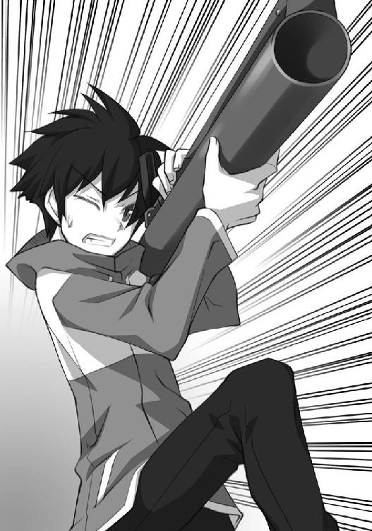
この前と同じように、後には土の小山が残された。
ルイズはその様子を呆然として見つめていたが、腰が抜けたのかへなへなと地面に崩れ落ちた。
木陰に隠れていたキュルケが駆け寄ってくるのが見えた。
才人はため息をついて立ち尽くした。
キュルケが抱きついてきた。
「サイト！ すごいわ！ やっぱりダーリンね！」
ウィンドドラゴンから降りたタバサが、崩れ落ちたフーケのゴーレムを見つめながら、呟いた。
「フーケはどこ？」
全員は、一斉にはっとした。
辺りを偵察に行っていたミス・ロングビルが茂みの中から現れた。
「ミス・ロングビル！ フーケはどこからあのゴーレムを操っていたのかしら」
キュルケがそう尋ねると、ミス・ロングビルはわからないというように首を振った。
四人は、盛り上がった土の小山の中を探し始めた。才人はその様子を、放心したように見つめていた。それから『破壊の杖』を見つめる。なんでコイツがこの世界に......、とぼんやりと思う。
すっとミス・ロングビルの手が伸びて、放心した才人の手から『破壊の杖』を取り上げた。
「ロングビルさん？」才人は怪訝に思って、ミス・ロングビルの顔を見つめた。
ミス・ロングビルはすっと遠のくと、四人に『破壊の杖』を突きつけた。
「ご苦労様」
「ミス・ロングビル！」
キュルケが叫んだ。
「どういうことですか？」
ルイズも唖然として、ミス・ロングビルを見つめていた。
「さっきのゴーレムを操っていたのは、わたし」
「え、じゃあ......、あなたが......」
目の前の女性はメガネを外した。優しそうだった目が吊り上がり、猛禽類のような目つきに変わる。
「そう。『土くれ』のフーケ。さすがは『破壊の杖』ね。私のゴーレムがばらばらじゃないの！」
フーケは、さっき才人がしたように、『破壊の杖』を肩にかけ、四人に狙いをつけた。
タバサが杖を振ろうとした。
「おっと。動かないで？ 破壊の杖は、ぴったりあなたたちを狙っているわ。全員、杖を遠くに投げなさい」
しかたなく、ルイズたちは杖を放り投げた。これでもう、メイジは魔法を唱えることができないのだ。
「そこのすばしこい使い魔君は、その折れた剣を投げなさい。あんたは武器を握ってると、どうやらすばしこくなるみたいだから」
才人は言われたとおりにした。
「どうして!?」ルイズがそう怒鳴るとフーケは、
「そうね、ちゃんと説明しなくちゃ死にきれないでしょうから......。説明してあげる」
と言って、妖艶な笑みを浮かべた。
「私ね、この『破壊の杖』を奪ったのはいいけれど、使い方がわからなかったのよ」
「使い方？」
「ええ。どうやら、振っても、魔法をかけても、この杖はうんともすんともいわないんだもの。困ってたわ。持っていても、使い方がわからないんじゃ、宝の持ち腐れ。そうでしょ？」
ルイズが飛び出そうとした。才人はその肩に手を置いた。
「サイト！」
「言わせてやれ」
「随分と物わかりのいい、使い魔だこと。じゃあ、続けさせてもらうわね。使い方がわからなかった私は、あなたたちに、これを使わせて、使い方を知ろうと考えたのよ」
「それで、あたしたちをここまで連れてきたってわけね」
「そうよ。魔法学院の者だったら、知っててもおかしくないでしょう？」
「わたしたちの誰も、知らなかったらどうするつもりだったの？」
「そのときは、全員ゴーレムで踏み潰して、次の連中を連れてくるわよ。でも、その手間は省けたみたいね。こうやって、きちんと使い方を教えてくれたじゃない」
フーケは笑った。
「じゃあ、お礼を言うわ。短い間だけど、楽しかった。さよなら」
キュルケは観念して目をつむった。
タバサも目をつむった。
ルイズも目をつむった。
才人は、目をつむらなかった。
「勇気があるのね」
「いや、ちょっと違う」
才人は剣を拾い上げた。
フーケは咄嗟に、才人がしたように『破壊の杖』のスイッチを押した。
しかし、先ほどのような魔法は飛び出さない。
「な、どうして！」
フーケはもう一度、スイッチを押した。
「それは単発なんだよ。魔法なんか出やしない」
「た、単発？ どういう意味よ！」
フーケは怒鳴った。
「言ってもわからんだろうが、そいつはこっちの世界の魔法の杖なんかじゃない」
「なんですって！」
フーケは『破壊の杖』を放り投げると、杖を握ろうとした。
才人は電光石火で駆け寄り、フーケの腹に剣の柄をめり込ませた。
「そいつは、俺たちの世界の武器だ。えっと確か『Ｍ72ロケットランチャー』とかいったかな」
フーケは地面に崩れ落ちた。
才人は『破壊の杖』を拾い上げた。
「サイト？」
ルイズたちは目を丸くして才人を見つめていた。
才人は言った。
「フーケを捕まえて、『破壊の杖』を取り戻したぜ」
ルイズ、キュルケ、タバサは顔を見合わせると、才人に駆け寄った。
才人は複雑な気持ちで、三人と抱擁しあった。
学院長室で、オスマン氏は戻った四人の報告を聞いていた。
「ふむ......。ミス・ロングビルが土くれのフーケじゃったとはな......。美人だったもので、なんの疑いもせず秘書に採用してしまった」
「いったい、どこで採用されたんですか？」
隣に控えたコルベールが尋ねた。
「街の居酒屋じゃ。私は客で、彼女は給仕をしておったのだが、ついついこの手がお尻を撫でてしまってな」
「で？」
コルベールが促した。オスマン氏は照れたように告白した。
「おほん。それでも怒らないので、秘書にならないかと、言ってしまった」
「なんで？」
ほんとに理解できないといった口調でコルベールが尋ねた。
「カァーッ！」
オスマン氏は目をむいて怒鳴った。年寄りとは思えない迫力だった。それからオスマン氏は、こほんと咳をして、真顔になった。
「おまけに魔法も使えるというもんでな」
「死んだほうがいいのでは？」
コルベールがぼそっと言った。オスマン氏は、軽く咳払いをすると、コルベールに向き直り重々しい口調で言った。
「今思えば、あれも魔法学院に潜り込むためのフーケの手じゃったに違いない。居酒屋でくつろぐ私の前に何度もやってきて、愛想よく酒を勧める。魔法学院学院長は男前で痺れます、などと何度も媚を売り売り言いおって......。終いにゃ尻を撫でても怒らない。惚れてる？ とか思うじゃろ？ なあ？ ねえ？」
コルベールは、ついうっかりフーケのその手にやられ、宝物庫の壁の弱点について語ってしまったことを思い出した。あの一件は自分の胸に秘めておこうと思いつつ、オスマン氏に合わせた。
「そ、そうですな！ 美人はただそれだけで、いけない魔法使いですな！」
「そのとおりじゃ！ 君はうまいことを言うな！ コルベール君！」
才人とルイズ、そしてキュルケとタバサの四人は呆れて、そんな二人の様子を見つめていた。
生徒たちのそんな冷たい視線に気づき、オールド・オスマンは照れたように咳払いをすると、厳しい顔つきをしてみせた。
「さてと、君たちはよくぞフーケを捕まえ、『破壊の杖』を取り返してきた」
誇らしげに、才人を除いた三人が礼をした。
「フーケは、城の衛士に引き渡した。そして『破壊の杖』は、無事に宝物庫に収まった。一件落着じゃ」
オスマン氏は、一人ずつ頭を撫でた。
「君たちの、『シュヴァリエ』の爵位申請を、宮廷に出しておいた。追って沙汰があるじゃろう。といっても、ミス・タバサはすでに『シュヴァリエ』の爵位を持っているから、精霊勲章の授与を申請しておいた」
三人の顔が、ぱあっと輝いた。
「ほんとうですか？」
キュルケが、驚いた声で言った。
「ほんとじゃ。いいのじゃ、君たちは、そのぐらいのことをしたんじゃから」
ルイズは、先ほどから元気がなさそうに立っている才人を見つめた。
「......オールド・オスマン。サイトには、何もないんですか？」
「残念ながら、彼は貴族ではない」
才人は言った。
「何もいらないですよ」
オスマン氏は、ぽんぽんと手を打った。
「さてと、今日の夜は『フリッグの舞踏会』じゃ。このとおり、『破壊の杖』も戻ってきたし、予定どおり執り行う」
キュルケの顔がぱっと輝いた。
「そうでしたわ！ フーケの騒ぎで忘れておりました！」
「今日の舞踏会の主役は君たちじゃ。用意をしてきたまえ。せいぜい、着飾るのじゃぞ」
三人は、礼をするとドアに向かった。
ルイズは、才人をちらっと見つめた。そして、立ち止まる。
「先に行ってていいよ」
才人は言った。ルイズは心配そうに見つめていたが、頷いて部屋を出て行った。
オスマン氏は才人に向き直った。
「なにか、私に聞きたいことがおありのようじゃな」
才人は頷いた。
「言ってごらんなさい。できるだけ力になろう。君に爵位を授けることはできんが、せめてものお礼じゃ」
それからオスマン氏は、コルベールに退室を促した。わくわくしながら才人の話を待っていたコルベールは、しぶしぶ部屋を出て行った。
コルベールが出て行ったあと、才人は口を開いた。
「あの『破壊の杖』は、俺が元いた世界の武器です」
オスマン氏の目が光った。
「ふむ。元いた世界とは？」
「俺は、こっちの世界の人間じゃない」
「本当かね？」
「本当です。俺は、あのルイズの『召喚』で、こっちの世界に呼ばれたんです」
「なるほど。そうじゃったか......」
オスマン氏は目を細めた。
「あの『破壊の杖』は、俺たちの世界の武器だ。あれをここに持ってきたのは、誰なんですか？」
オスマン氏は、ため息をついた。
「あれを私にくれたのは、私の命の恩人じゃ」
「その人は、どうしたんですか？ その人は、俺と同じ世界の人間です。間違いない」
「死んでしまった。今から、三十年も昔の話じゃ」
「なんですって？」
「三十年前、森を散策していた私は、ワイバーンに襲われた。そこを救ってくれたのが、あの『破壊の杖』の持ち主じゃ。彼は、もう一本の『破壊の杖』で、ワイバーンを吹き飛ばすと、ばったりと倒れおった。怪我をしていたのじゃ。私は彼を学院に運び込み、手厚く看護した。しかし、看護の甲斐なく......」
「死んでしまったんですか？」
オスマン氏は頷いた。
「私は、彼が使った一本を彼の墓に埋め、もう一本を『破壊の杖』と名づけ、宝物庫にしまいこんだ。恩人の形見としてな......」
オスマン氏は遠い目になった。
「彼はベッドの上で、死ぬまでうわごとのように繰り返しておった。『ここはどこだ。元の世界に帰りたい』とな。きっと、彼は君と同じ世界から来たんじゃろうな」
「いったい、誰がこっちにその人を呼んだんですか？」
「それはわからん。どんな方法で彼がこっちの世界にやってきたのか、最後までわからんかった」
「くそ！ せっかく手がかりを見つけたと思ったのに！」
才人は嘆いた。見つけた手がかりは、あっという間に消えてしまった。おそらく彼は、どこかの国の兵隊だったのだろう。どうやってこっちの世界にやってきたのだろう。知りたかったが、今となっては知る術はない。
オスマン氏は、次に才人の左手を掴んだ。
「おぬしのこのルーン......」
「ええ。こいつも聞きたかった。この文字が光ると、何故か武器を自在に使えるようになるんです。剣だけじゃなく、俺の世界の武器まで......」
オスマン氏は、話そうかどうかしばし悩んだあと、口を開いた。
「......これなら知っておるよ。ガンダールヴの印じゃ。伝説の使い魔の印じゃよ」
「伝説の使い魔の印？」
「そうじゃ。その伝説の使い魔はありとあらゆる『武器』を使いこなしたそうじゃ。『破壊の杖』を使えたのも、そのおかげじゃろう」
才人は首をかしげた。
「......どうして、俺がその伝説の使い魔なんかに？」
「わからん」オスマン氏はきっぱりと言った。
「わからんことばっかりだ」
「すまんの。ただ、もしかしたら、おぬしがこっちの世界にやってきたことと、そのガンダールヴの印は、なにか関係しているのかもしれん」
「はぁ......」才人はため息をついた。このじいさんなら、何か有益なことが聞けるかと思ったのに、すっかりあてが外れてしまった。
「力になれんですまんの。ただ、これだけは言っておく。私はおぬしの味方じゃ。ガンダールヴよ」
オスマン氏はそういうと、才人を抱きしめた。
「よくぞ、恩人の杖を取り戻してくれた。改めて礼を言うぞ」
「いえ......」才人は疲れた声で返事をした。
「おぬしがどういう理屈で、こっちの世界にやってきたのか、私なりに調べるつもりじゃ。でも......」
「でも、なんです？」
「何もわからなくても、恨まんでくれよ。なあに。こっちの世界も住めば都じゃ。嫁さんだって探してやる」
才人は再びため息をついた。帰れる手がかりを見つけたと思ったのに、簡単にそれが指の間からすり抜けてしまったのだ。
アルヴィーズの食堂の上の階が、大きなホールになっている。舞踏会はそこで行われていた。才人はバルコニーの枠にもたれ、華やかな会場をぼんやりと見つめていた。
中では着飾った生徒や教師たちが、豪華な料理が盛られたテーブルの周りで歓談している。才人は外からバルコニーに続く階段からここまで上ってきて、料理のおこぼれにありつき、ぼんやりと中を眺めているのだった。場違いな気分がして、中には入れなかった。
才人のそばの枠には、シエスタが持ってきてくれた肉料理の皿と、ワインの壜がのっかっていた。才人は手酌で一杯グラスに注ぐと、それを飲み干した。
「お前、さっきから飲みすぎじゃねえのか」
バルコニーの枠に立てかけた抜き身のデルフリンガーが、心配そうに言った。キュルケから貰った剣があっけなく折れてしまったので、護身用にこっちを背中に差しているのだった。相変わらず、口の減らない剣であった。でも根は陽気で楽しいヤツなので、今みたいな気分のときには、都合がいい。
「うるせえ。家に帰れるかも、と思ったのに......、思い過ごしだよ。飲まずにいられるか」
さっきまで、綺麗なドレスに身を包んだキュルケが才人のそばにいて、なんやかやと話しかけてくれていたが、パーティが始まると中に入ってしまった。
才人はしかたなくデルフリンガーを相手に、憂さを晴らしているのだった。
ホールの中では、キュルケがたくさんの男に囲まれ、笑っている。キュルケは才人に、後でいっしょに踊りましょ、と言っていたが、あの調子では何人待ちになるのかわからない。
黒いパーティドレスを着たタバサは、一生懸命にテーブルの上の料理と格闘している。
それぞれに、パーティを満喫しているようだった。
ホールの壮麗な扉が開き、ルイズが姿を現した。
門に控えた呼び出しの衛士が、ルイズの到着を告げた。
「ヴァリエール公爵が息女、ルイズ・フランソワーズ・ル・ブラン・ド・ラ・ヴァリエール嬢のおな～～～り～～～！」
才人は息を飲んだ。ルイズは長い桃色がかった髪を、バレッタにまとめ、ホワイトのパーティドレスに身を包んでいた。肘までの白い手袋が、ルイズの高貴さをいやになるぐらい演出し、胸元の開いたドレスがつくりの小さい顔を、宝石のように輝かせている。
主役が全員揃ったことを確認した楽士たちが、小さく、流れるように音楽を奏で始めた。ルイズの周りには、その姿と美貌に驚いた男たちが群がり、さかんにダンスを申し込んでいた。今まで、ゼロのルイズと呼んでからかっていたノーマークの女の子の美貌に気づき、いち早く唾をつけておこうというのだろう。
ホールでは、貴族たちが優雅にダンスを踊り始めた。しかし、ルイズは誰の誘いをも断ると、バルコニーに寂しく佇む才人に気づき、近寄ってきた。
ルイズは、酔っ払った才人の目の前に立つと、腰に手をやって、首をかしげた。
「楽しんでるみたいね」
「別に......」
才人は眩しすぎるルイズから、目を逸らした。酔っていてよかった、と思った。顔の赤さが気取られない。
デルフリンガーがルイズに気づき、「おお、馬子にも衣装じゃねえか」と言った。
「うるさいわね」
ルイズは剣を睨むと、腕を組んで首をかしげた。
「お前は、踊らないのか？」
才人は目を逸らしたまま言った。
「相手がいないのよ」
ルイズは手を広げた。
「いっぱい、誘われてたじゃねえかよ」
才人は言った。ルイズは、答えずに、すっと手を差し伸べた。
「はぁ？」
「踊ってあげても、よくってよ」
目を逸らし、ルイズはちょっと照れたように言った。
いきなりのルイズのセリフに、才人は戸惑った。何をいきなり言うのだ、こいつは、と思ったら照れてしかたがなくなった。
「踊ってください、じゃねえのか」
才人も目を逸らした。
しばらくの沈黙が流れた。ルイズがため息をついて、先に折れた。
「今日だけだからね」
ルイズはドレスの裾を恭しく両手で持ち上げると、膝を曲げて才人に一礼した。
「わたくしと一曲踊ってくださいませんこと。ジェントルマン」
そう言って顔を赤らめるルイズは激しく可愛くて、綺麗で、清楚であった。
才人はふらふらとルイズの手を取った。
二人は並んで、ホールへと向かった。
「ダンスなんかしたことねえよ」
才人が言うと、ルイズは「わたしに合わせて」と言って、才人の手を軽く握った。才人は見よう見まねで、ルイズに合わせて踊りだした。ルイズは才人のぎこちない踊りに文句をつけるでなく、澄ました顔でステップを踏んでいる。
「ねえ、サイト。信じてあげるわ」
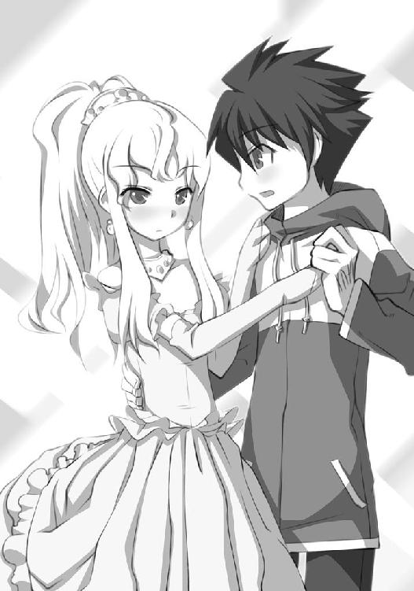
「なにを？」
「......その、あんたが別の世界から来たってこと」
ルイズは軽やかに、優雅にステップを踏みながら、そう呟いた。
「なんだよ。信じてなかったのか？」
「今まで、半信半疑だったけど......。でも、あの『破壊の杖』......。あんたの世界の武器なんでしょう。あんなの見たら、信じるしかないじゃない」
それからルイズは、少し俯いた。
「ねえ、帰りたい？」
「ああ。帰りたい。でも、どうしたら帰れるのか見当もつかねえからな。ま、しばらくは我慢するよ」
そうよね......、と呟いて、ルイズはしばらく無言で踊り始めた。
それからルイズはちょっと頬を赤らめると、サイトの顔から目を逸らした。そして、思いきったように口を開く。
「ありがとう」
ルイズが礼など言ったので、才人は驚いた。ダンスに俺を誘ったことといい、こいつ、今日はどうかしてやがる。
「その......、フーケのゴーレムに、潰されそうになったとき。助けてくれたじゃない」
ルイズは何か誤魔化すように、そう呟いた。
楽士たちが、テンポのいい曲を奏で出した。才人は少しずつ、楽しくなってきた。いつか向こうには、絶対帰ってやるけれど......。今を楽しむのは悪くない。今日のルイズは可愛い。それだけで今は十分な気がした。
「気にすんな。当然だろ」
「どうして？」
「俺はお前の使い魔だろ」
才人はそう言って、ルイズに笑いかけた。
そんな様子をバルコニーから眺めていたデルフリンガーが、こそっと呟いた。
「おでれーた！」
二つの月がホールに月明かりを送り、ロウソクと絡んで幻想的な雰囲気をつくりあげている。
「相棒！ てーしたもんだ！」
踊る相棒とその主人を見つめながら、デルフリンガーは、おでれーた！ と繰り返した。
「主人のダンスの相手をつとめる使い魔なんて、初めて見たぜ！」
あとがき
このお話は、僕たちの世界の少年が、異世界の女の子魔法使いの使い魔になってしまい、散々にこきつかわれ、恋と冒険に巻き込まれていくファンタジーロマンです。
主人公が使い魔として召喚されてしまった世界は、魔法使いが『貴族』として威張っている世界です。歴史の授業でやった封建社会です。貴族ってのはボンヤリと、偉そうでなんか立派な人、というイメージなのですが、実際には王様から領地を貰って、その土地の人々を治める身分の人たちを指します。もちろん、ただで領地がもらえるわけではありません。戦争の時には、貴族は出征する義務を負います。
そして、ヨーロッパでは基本的に貴族の名字は所有する土地の名前です。作中にド・ラ・ヴァリエールという名字の女の子が出てきますが、これはラ・ヴァリエールという土地を治める貴族だから、その名字を名乗っているのです。面白いですね。
そんな感じの、中世ヨーロッパの封建制を下敷きにしたファンタジー小説を常々書きたいと思っておりました。
何故なら誇り高き貴族たちが名誉のために生き、名誉のために死んでいった時代だからです。ほんとはお金のためだったり、好きな女のためだったりするのですが、なにより『誇りと名誉』は重んじられた。そんな時代と世界がロマン以外の何物だというのでしょうか。ファンタジーというのはロマンなのです。ロマンが詰まってナンボなのです。
本音と建前を情熱にくるみ、貴族たちは魔法を唱えます。イエス。科学の代わりに魔法が世の理を支配する異世界ハルケギニアはそんな世界なのであります。
そして、ああ、僕はなんというか、異世界に対する憧れというのが強い。
とにかく、ここじゃないどこかに行きたいという欲求が常にあります。初めて訪れる街が好きです。異国の写真を眺めるのが好きです。月の裏側ならなお素晴らしい。そこが、『ここ』ではない、どこか別の世界なら、言うことはありません。ロマンが詰まってたら、もっと言うことはありません。そんな世界を歩いてみたい。主人公がこっちの世界の人間であるのはそんな理由からです。
異世界の恋と冒険、そして貴族の名誉、これこそがロマンだとワインに酔った頭で僕は思うのであります。ロマンはいつだって僕の胸をはやらせ、加速させてくれるのです。
ヤマグチノボル
著者
ヤマグチノボル（やまぐち・のぼる）
１９７２年２月、茨城県生まれ。『カナリア～この想いを歌にのせて』（角川スニーカー文庫）でデビュー。著書に『魔法薬売りのマレア 千日カゲロウ』『ストライクウィッチーズ』（角川スニーカー文庫）『描きかけのラブレター』『遠く６マイルの彼女』（富士見ミステリー文庫）『サンタ・クラリス・クライシス』（富士見ファンタジア文庫）『ゼロの使い魔』（ＭＦ文庫Ｊ）など多数。『グリーングリーン』『Ｇｏｎｎａ Ｂｅ??』『ゆきうた』『私立アキハバラ学園』『魔界天使ジブリール』『そらうた』など、ゲームシナリオライターとしても活躍中。
イラスト
兎塚エイジ（うさつか・えいじ）
８月16日生まれ。大阪出身、大阪在住の大阪人。
現在、サラリーマンをしながらイラストを描かせて頂いてます。
イラスト仕事歴は
「道士さまといっしょ」（電撃文庫）
「ふたりはなめこじる」（電撃ｈｐ）
「神曲奏界ポリフォニカ ぶるう」シリーズ（ＧＡ文庫）
「悪魔憑きの目覚め」（富士見ドラゴンブック）
「ゼロの使い魔」（ＭＦ文庫Ｊ）
などです。
初のイラスト集「兎塚エイジ Ｚｒｏ ゼロの使い魔イラストコレクション」（メディアファクトリー）も好評発売中。
ゼロの使い魔
発行日 ２００６年３月１日
著 者 ヤマグチノボル
イラスト 兎塚エイジ
発行人 三坂泰二
発行所 株式会社メディアファクトリー
〒１０４｜００６１
東京都中央区銀座８｜４｜17
電 話 ０５７０｜００２｜００１
０３｜５４６９｜３４６０
©2004 Noboru Yamaguchi
●株式会社メディアファクトリーＭＦ文庫Ｊ『ゼロの使い魔』（２００４年６月30日 初版発行）に基づいて制作されました。
※本書の内容を無断で複製・複写・放送・データ配信などをすることは、かたくお断りいたします。